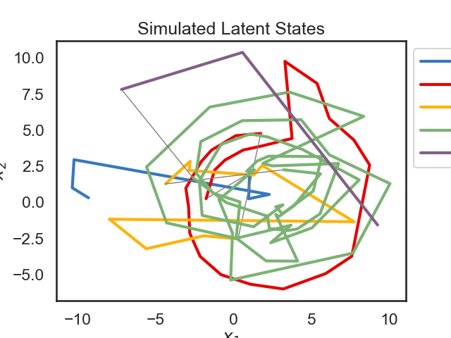
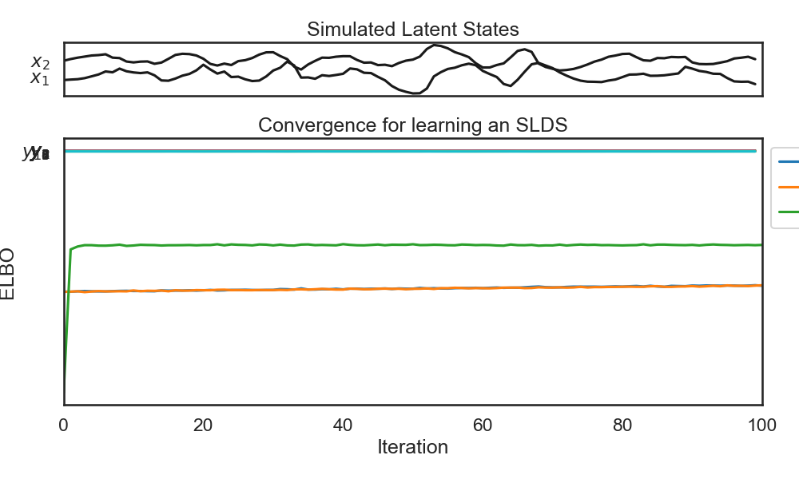
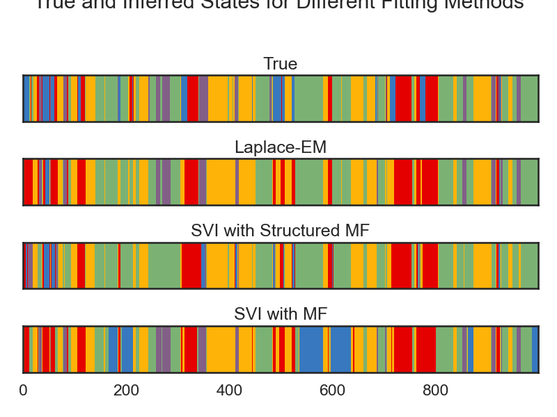
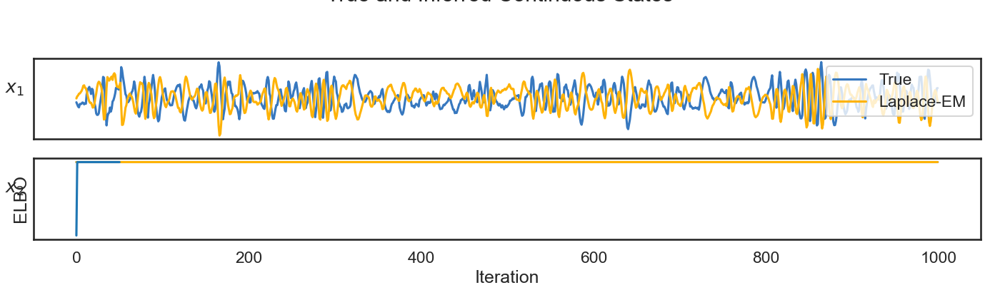
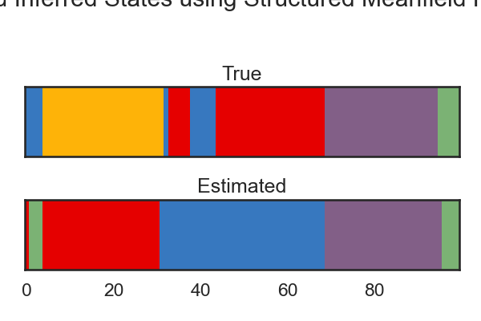
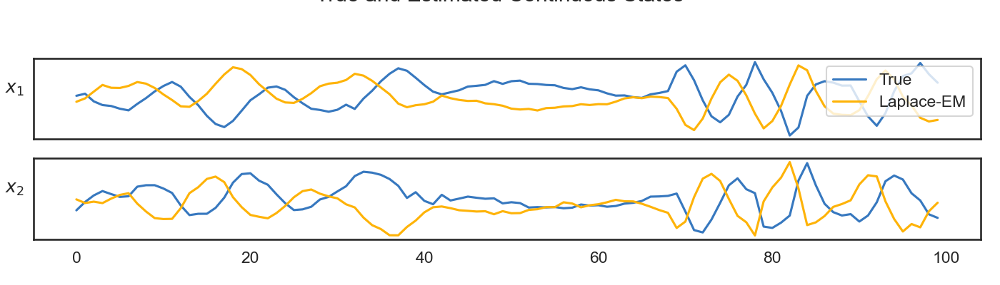

Switching Linear Dynamical System
Note
Click here to download the full example code
Switching Linear Dynamical System#
- 

- 
- 
- 
- 
- 
Fitting SLDS with BBVI and Mean-Field Posterior
0%| | 0/1 [00:00<?, ?it/s]
ARHMM Initialization restarts: 0%| | 0/1 [00:00<?, ?it/s]Initializing with an ARHMM using 25 steps of EM.
0%| | 0/25 [00:00<?, ?it/s]
LP: -3736.9: 0%| | 0/25 [00:00<?, ?it/s]
LP: -3736.9: 0%| | 0/25 [00:00<?, ?it/s]
LP: -3604.6: 0%| | 0/25 [00:00<?, ?it/s]
LP: -3512.1: 0%| | 0/25 [00:00<?, ?it/s]
LP: -3464.6: 0%| | 0/25 [00:00<?, ?it/s]
LP: -3433.3: 0%| | 0/25 [00:00<?, ?it/s]
LP: -3417.9: 0%| | 0/25 [00:00<?, ?it/s]
LP: -3407.8: 0%| | 0/25 [00:00<?, ?it/s]
LP: -3401.6: 0%| | 0/25 [00:00<?, ?it/s]
LP: -3398.3: 0%| | 0/25 [00:00<?, ?it/s]
LP: -3395.9: 0%| | 0/25 [00:00<?, ?it/s]
LP: -3393.2: 0%| | 0/25 [00:00<?, ?it/s]
LP: -3390.1: 0%| | 0/25 [00:00<?, ?it/s]
LP: -3386.8: 0%| | 0/25 [00:00<?, ?it/s]
LP: -3383.6: 0%| | 0/25 [00:00<?, ?it/s]
LP: -3381.2: 0%| | 0/25 [00:00<?, ?it/s]
LP: -3378.9: 0%| | 0/25 [00:00<?, ?it/s]
LP: -3375.3: 0%| | 0/25 [00:00<?, ?it/s]
LP: -3367.9: 0%| | 0/25 [00:00<?, ?it/s]
LP: -3361.2: 0%| | 0/25 [00:00<?, ?it/s]
LP: -3357.5: 0%| | 0/25 [00:00<?, ?it/s]
LP: -3355.6: 0%| | 0/25 [00:00<?, ?it/s]
LP: -3354.5: 0%| | 0/25 [00:00<?, ?it/s]
LP: -3353.9: 0%| | 0/25 [00:00<?, ?it/s]
LP: -3353.4: 0%| | 0/25 [00:00<?, ?it/s]
LP: -3352.8: 0%| | 0/25 [00:00<?, ?it/s]
LP: -3352.8: 100%|##########| 25/25 [00:00<00:00, 245.58it/s]
LP: -3352.8: 100%|##########| 25/25 [00:00<00:00, 245.36it/s]
ARHMM Initialization restarts: 100%|##########| 1/1 [00:00<00:00, 7.86it/s]
ARHMM Initialization restarts: 100%|##########| 1/1 [00:00<00:00, 7.85it/s]
0%| | 0/1000 [00:00<?, ?it/s]
LP: -15153.1: 0%| | 0/1000 [00:00<?, ?it/s]
ELBO: -15159.3: 0%| | 0/1000 [00:00<?, ?it/s]
ELBO: -15116.0: 0%| | 1/1000 [00:00<01:54, 8.71it/s]
ELBO: -15116.0: 0%| | 2/1000 [00:00<00:57, 17.40it/s]
ELBO: -15081.6: 0%| | 4/1000 [00:00<00:57, 17.40it/s]
ELBO: -15108.2: 0%| | 5/1000 [00:00<00:57, 17.40it/s]
ELBO: -15125.5: 1%| | 6/1000 [00:00<00:57, 17.40it/s]
ELBO: -15125.0: 1%| | 7/1000 [00:00<00:57, 17.40it/s]
ELBO: -15091.6: 1%| | 8/1000 [00:00<00:56, 17.40it/s]
ELBO: -15068.5: 1%| | 9/1000 [00:00<00:56, 17.40it/s]
ELBO: -15057.6: 1%|1 | 10/1000 [00:00<00:56, 17.40it/s]
ELBO: -15057.6: 1%|1 | 11/1000 [00:00<00:17, 56.30it/s]
ELBO: -15081.8: 2%|1 | 18/1000 [00:00<00:17, 56.30it/s]
ELBO: -15082.0: 2%|1 | 19/1000 [00:00<00:17, 56.30it/s]
ELBO: -15082.0: 2%|2 | 20/1000 [00:00<00:16, 59.25it/s]
ELBO: -15100.0: 2%|2 | 20/1000 [00:00<00:16, 59.25it/s]
ELBO: -15108.1: 2%|2 | 21/1000 [00:00<00:16, 59.25it/s]
ELBO: -15017.3: 2%|2 | 22/1000 [00:00<00:16, 59.25it/s]
ELBO: -15038.6: 2%|2 | 23/1000 [00:00<00:16, 59.25it/s]
ELBO: -15035.5: 2%|2 | 24/1000 [00:00<00:16, 59.25it/s]
ELBO: -15029.4: 2%|2 | 25/1000 [00:00<00:16, 59.25it/s]
ELBO: -15029.4: 3%|2 | 26/1000 [00:00<00:24, 40.51it/s]
ELBO: -15002.8: 3%|3 | 32/1000 [00:00<00:23, 40.51it/s]
ELBO: -15040.6: 3%|3 | 33/1000 [00:00<00:23, 40.51it/s]
ELBO: -15040.6: 3%|3 | 34/1000 [00:00<00:19, 48.51it/s]
ELBO: -15006.6: 3%|3 | 34/1000 [00:00<00:19, 48.51it/s]
ELBO: -14963.9: 4%|3 | 35/1000 [00:00<00:19, 48.51it/s]
ELBO: -15027.7: 4%|3 | 36/1000 [00:00<00:19, 48.51it/s]
ELBO: -15008.7: 4%|3 | 37/1000 [00:00<00:19, 48.51it/s]
ELBO: -14962.5: 4%|3 | 38/1000 [00:00<00:19, 48.51it/s]
ELBO: -14964.4: 4%|3 | 39/1000 [00:00<00:19, 48.51it/s]
ELBO: -14964.4: 4%|4 | 40/1000 [00:00<00:20, 47.28it/s]
ELBO: -14945.4: 4%|4 | 40/1000 [00:00<00:20, 47.28it/s]
ELBO: -14969.1: 4%|4 | 41/1000 [00:00<00:20, 47.28it/s]
ELBO: -14983.2: 4%|4 | 42/1000 [00:01<00:20, 47.28it/s]
ELBO: -14963.0: 4%|4 | 43/1000 [00:01<00:20, 47.28it/s]
ELBO: -14961.7: 4%|4 | 44/1000 [00:01<00:20, 47.28it/s]
ELBO: -14872.1: 4%|4 | 45/1000 [00:01<00:20, 47.28it/s]
ELBO: -14872.1: 5%|4 | 46/1000 [00:01<00:24, 38.19it/s]
ELBO: -14890.9: 5%|5 | 51/1000 [00:01<00:24, 38.19it/s]
ELBO: -14932.4: 5%|5 | 52/1000 [00:01<00:24, 38.19it/s]
ELBO: -14932.4: 5%|5 | 53/1000 [00:01<00:23, 39.91it/s]
ELBO: -14797.0: 5%|5 | 53/1000 [00:01<00:23, 39.91it/s]
ELBO: -14924.9: 5%|5 | 54/1000 [00:01<00:23, 39.91it/s]
ELBO: -14926.1: 6%|5 | 55/1000 [00:01<00:23, 39.91it/s]
ELBO: -14881.8: 6%|5 | 56/1000 [00:01<00:23, 39.91it/s]
ELBO: -14898.0: 6%|5 | 57/1000 [00:01<00:23, 39.91it/s]
ELBO: -14898.0: 6%|5 | 58/1000 [00:01<00:22, 41.72it/s]
ELBO: -14840.6: 6%|5 | 58/1000 [00:01<00:22, 41.72it/s]
ELBO: -14905.1: 6%|5 | 59/1000 [00:01<00:22, 41.72it/s]
ELBO: -14824.9: 6%|6 | 60/1000 [00:01<00:22, 41.72it/s]
ELBO: -14824.3: 6%|6 | 61/1000 [00:01<00:22, 41.72it/s]
ELBO: -14863.3: 6%|6 | 62/1000 [00:01<00:22, 41.72it/s]
ELBO: -14863.3: 6%|6 | 63/1000 [00:01<00:28, 32.45it/s]
ELBO: -14834.4: 6%|6 | 63/1000 [00:01<00:28, 32.45it/s]
ELBO: -14838.5: 6%|6 | 64/1000 [00:01<00:28, 32.45it/s]
ELBO: -14803.6: 6%|6 | 65/1000 [00:01<00:28, 32.45it/s]
ELBO: -14858.1: 7%|6 | 66/1000 [00:01<00:28, 32.45it/s]
ELBO: -14858.1: 7%|6 | 67/1000 [00:01<00:36, 25.26it/s]
ELBO: -14803.9: 7%|6 | 67/1000 [00:01<00:36, 25.26it/s]
ELBO: -14830.3: 7%|6 | 68/1000 [00:02<00:36, 25.26it/s]
ELBO: -14831.9: 7%|6 | 69/1000 [00:02<00:36, 25.26it/s]
ELBO: -14831.9: 7%|7 | 74/1000 [00:02<00:36, 25.29it/s]
ELBO: -14746.0: 7%|7 | 74/1000 [00:02<00:36, 25.29it/s]
ELBO: -14809.0: 8%|7 | 75/1000 [00:02<00:36, 25.29it/s]
ELBO: -14776.9: 8%|7 | 76/1000 [00:02<00:36, 25.29it/s]
ELBO: -14776.9: 8%|7 | 77/1000 [00:02<00:44, 20.78it/s]
ELBO: -14811.6: 8%|7 | 77/1000 [00:02<00:44, 20.78it/s]
ELBO: -14821.1: 8%|7 | 78/1000 [00:02<00:44, 20.78it/s]
ELBO: -14774.6: 8%|7 | 79/1000 [00:02<00:44, 20.78it/s]
ELBO: -14748.6: 8%|8 | 80/1000 [00:02<00:44, 20.78it/s]
ELBO: -14757.6: 8%|8 | 81/1000 [00:02<00:44, 20.78it/s]
ELBO: -14757.6: 8%|8 | 82/1000 [00:02<00:36, 25.17it/s]
ELBO: -14735.6: 8%|8 | 82/1000 [00:02<00:36, 25.17it/s]
ELBO: -14766.4: 8%|8 | 83/1000 [00:02<00:36, 25.17it/s]
ELBO: -14735.6: 8%|8 | 84/1000 [00:02<00:36, 25.17it/s]
ELBO: -14704.8: 8%|8 | 85/1000 [00:02<00:36, 25.17it/s]
ELBO: -14704.8: 9%|8 | 86/1000 [00:02<00:48, 18.86it/s]
ELBO: -14739.9: 9%|8 | 86/1000 [00:02<00:48, 18.86it/s]
ELBO: -14718.5: 9%|8 | 87/1000 [00:02<00:48, 18.86it/s]
ELBO: -14719.9: 9%|8 | 88/1000 [00:03<00:48, 18.86it/s]
ELBO: -14719.9: 9%|8 | 89/1000 [00:03<00:47, 19.23it/s]
ELBO: -14679.1: 9%|8 | 89/1000 [00:03<00:47, 19.23it/s]
ELBO: -14634.1: 9%|9 | 90/1000 [00:03<00:47, 19.23it/s]
ELBO: -14598.0: 9%|9 | 91/1000 [00:03<00:47, 19.23it/s]
ELBO: -14598.0: 9%|9 | 92/1000 [00:03<00:52, 17.34it/s]
ELBO: -14664.3: 9%|9 | 92/1000 [00:03<00:52, 17.34it/s]
ELBO: -14686.6: 9%|9 | 93/1000 [00:03<00:52, 17.34it/s]
ELBO: -14687.4: 9%|9 | 94/1000 [00:03<00:52, 17.34it/s]
ELBO: -14687.4: 10%|9 | 95/1000 [00:03<00:46, 19.32it/s]
ELBO: -14640.2: 10%|9 | 95/1000 [00:03<00:46, 19.32it/s]
ELBO: -14610.8: 10%|9 | 96/1000 [00:03<00:46, 19.32it/s]
ELBO: -14613.4: 10%|9 | 97/1000 [00:03<00:46, 19.32it/s]
ELBO: -14613.4: 10%|9 | 98/1000 [00:03<00:48, 18.75it/s]
ELBO: -14615.4: 10%|9 | 98/1000 [00:03<00:48, 18.75it/s]
ELBO: -14611.4: 10%|9 | 99/1000 [00:03<00:48, 18.75it/s]
ELBO: -14629.3: 10%|# | 100/1000 [00:03<00:48, 18.75it/s]
ELBO: -14609.2: 10%|# | 104/1000 [00:03<00:47, 18.75it/s]
ELBO: -14584.5: 10%|# | 105/1000 [00:03<00:47, 18.75it/s]
ELBO: -14606.8: 11%|# | 106/1000 [00:03<00:47, 18.75it/s]
ELBO: -14606.8: 11%|# | 107/1000 [00:03<00:29, 30.46it/s]
ELBO: -14571.7: 11%|# | 107/1000 [00:03<00:29, 30.46it/s]
ELBO: -14541.4: 11%|# | 108/1000 [00:03<00:29, 30.46it/s]
ELBO: -14598.7: 11%|# | 109/1000 [00:03<00:29, 30.46it/s]
ELBO: -14520.2: 11%|#1 | 110/1000 [00:03<00:29, 30.46it/s]
ELBO: -14520.2: 11%|#1 | 111/1000 [00:03<00:34, 25.42it/s]
ELBO: -14599.3: 11%|#1 | 111/1000 [00:03<00:34, 25.42it/s]
ELBO: -14623.3: 11%|#1 | 112/1000 [00:03<00:34, 25.42it/s]
ELBO: -14528.7: 11%|#1 | 113/1000 [00:03<00:34, 25.42it/s]
ELBO: -14547.7: 11%|#1 | 114/1000 [00:03<00:34, 25.42it/s]
ELBO: -14565.0: 12%|#1 | 115/1000 [00:03<00:34, 25.42it/s]
ELBO: -14492.1: 12%|#1 | 116/1000 [00:03<00:34, 25.42it/s]
ELBO: -14492.1: 12%|#1 | 117/1000 [00:03<00:28, 31.40it/s]
ELBO: -14516.8: 12%|#1 | 117/1000 [00:04<00:28, 31.40it/s]
ELBO: -14483.0: 12%|#1 | 118/1000 [00:04<00:28, 31.40it/s]
ELBO: -14492.3: 12%|#1 | 119/1000 [00:04<00:28, 31.40it/s]
ELBO: -14509.5: 12%|#2 | 120/1000 [00:04<00:28, 31.40it/s]
ELBO: -14493.1: 12%|#2 | 121/1000 [00:04<00:27, 31.40it/s]
ELBO: -14498.9: 12%|#2 | 122/1000 [00:04<00:27, 31.40it/s]
ELBO: -14498.9: 12%|#2 | 123/1000 [00:04<00:23, 37.20it/s]
ELBO: -14526.0: 12%|#2 | 123/1000 [00:04<00:23, 37.20it/s]
ELBO: -14499.1: 12%|#2 | 124/1000 [00:04<00:23, 37.20it/s]
ELBO: -14459.0: 12%|#2 | 125/1000 [00:04<00:23, 37.20it/s]
ELBO: -14514.7: 13%|#2 | 126/1000 [00:04<00:23, 37.20it/s]
ELBO: -14468.4: 13%|#2 | 127/1000 [00:04<00:23, 37.20it/s]
ELBO: -14468.4: 13%|#2 | 128/1000 [00:04<00:25, 33.95it/s]
ELBO: -14448.5: 13%|#2 | 128/1000 [00:04<00:25, 33.95it/s]
ELBO: -14461.6: 13%|#3 | 133/1000 [00:04<00:25, 33.95it/s]
ELBO: -14365.7: 13%|#3 | 134/1000 [00:04<00:25, 33.95it/s]
ELBO: -14401.6: 14%|#3 | 135/1000 [00:04<00:25, 33.95it/s]
ELBO: -14389.8: 14%|#3 | 136/1000 [00:04<00:25, 33.95it/s]
ELBO: -14407.9: 14%|#3 | 137/1000 [00:04<00:25, 33.95it/s]
ELBO: -14415.1: 14%|#3 | 138/1000 [00:04<00:25, 33.95it/s]
ELBO: -14415.1: 14%|#3 | 139/1000 [00:04<00:17, 49.89it/s]
ELBO: -14371.7: 14%|#3 | 139/1000 [00:04<00:17, 49.89it/s]
ELBO: -14395.6: 14%|#4 | 140/1000 [00:04<00:17, 49.89it/s]
ELBO: -14395.7: 14%|#4 | 141/1000 [00:04<00:17, 49.89it/s]
ELBO: -14415.9: 14%|#4 | 142/1000 [00:04<00:17, 49.89it/s]
ELBO: -14362.3: 14%|#4 | 143/1000 [00:04<00:17, 49.89it/s]
ELBO: -14376.0: 14%|#4 | 144/1000 [00:04<00:17, 49.89it/s]
ELBO: -14482.2: 14%|#4 | 145/1000 [00:04<00:17, 49.89it/s]
ELBO: -14325.6: 15%|#4 | 146/1000 [00:04<00:17, 49.89it/s]
ELBO: -14325.6: 15%|#4 | 147/1000 [00:04<00:15, 55.17it/s]
ELBO: -14304.4: 15%|#4 | 147/1000 [00:04<00:15, 55.17it/s]
ELBO: -14312.9: 15%|#4 | 148/1000 [00:04<00:15, 55.17it/s]
ELBO: -14349.2: 15%|#4 | 149/1000 [00:04<00:15, 55.17it/s]
ELBO: -14345.3: 15%|#5 | 150/1000 [00:04<00:15, 55.17it/s]
ELBO: -14329.7: 15%|#5 | 151/1000 [00:04<00:15, 55.17it/s]
ELBO: -14374.9: 15%|#5 | 152/1000 [00:04<00:15, 55.17it/s]
ELBO: -14309.7: 15%|#5 | 153/1000 [00:04<00:15, 55.17it/s]
ELBO: -14309.7: 15%|#5 | 154/1000 [00:04<00:16, 52.66it/s]
ELBO: -14290.9: 15%|#5 | 154/1000 [00:04<00:16, 52.66it/s]
ELBO: -14271.3: 16%|#5 | 155/1000 [00:04<00:16, 52.66it/s]
ELBO: -14280.5: 16%|#5 | 156/1000 [00:04<00:16, 52.66it/s]
ELBO: -14239.0: 16%|#5 | 157/1000 [00:04<00:16, 52.66it/s]
ELBO: -14249.6: 16%|#5 | 158/1000 [00:04<00:15, 52.66it/s]
ELBO: -14244.5: 16%|#5 | 159/1000 [00:04<00:15, 52.66it/s]
ELBO: -14244.5: 16%|#6 | 160/1000 [00:04<00:17, 47.15it/s]
ELBO: -14261.3: 16%|#6 | 160/1000 [00:04<00:17, 47.15it/s]
ELBO: -14294.2: 16%|#6 | 161/1000 [00:04<00:17, 47.15it/s]
ELBO: -14241.5: 16%|#6 | 162/1000 [00:04<00:17, 47.15it/s]
ELBO: -14252.0: 16%|#6 | 163/1000 [00:04<00:17, 47.15it/s]
ELBO: -14279.6: 16%|#6 | 164/1000 [00:04<00:17, 47.15it/s]
ELBO: -14279.6: 17%|#7 | 171/1000 [00:04<00:14, 55.96it/s]
ELBO: -14220.5: 17%|#7 | 171/1000 [00:05<00:14, 55.96it/s]
ELBO: -14284.6: 17%|#7 | 172/1000 [00:05<00:14, 55.96it/s]
ELBO: -14193.0: 17%|#7 | 173/1000 [00:05<00:14, 55.96it/s]
ELBO: -14242.0: 17%|#7 | 174/1000 [00:05<00:14, 55.96it/s]
ELBO: -14243.0: 18%|#7 | 175/1000 [00:05<00:14, 55.96it/s]
ELBO: -14221.8: 18%|#7 | 176/1000 [00:05<00:14, 55.96it/s]
ELBO: -14221.8: 18%|#7 | 177/1000 [00:05<00:24, 33.59it/s]
ELBO: -14175.3: 18%|#7 | 177/1000 [00:05<00:24, 33.59it/s]
ELBO: -14192.5: 18%|#7 | 178/1000 [00:05<00:24, 33.59it/s]
ELBO: -14196.7: 18%|#7 | 179/1000 [00:05<00:24, 33.59it/s]
ELBO: -14201.7: 18%|#8 | 180/1000 [00:05<00:24, 33.59it/s]
ELBO: -14148.2: 18%|#8 | 181/1000 [00:05<00:24, 33.59it/s]
ELBO: -14148.2: 18%|#8 | 182/1000 [00:05<00:25, 31.57it/s]
ELBO: -14155.8: 18%|#8 | 182/1000 [00:05<00:25, 31.57it/s]
ELBO: -14133.9: 18%|#8 | 183/1000 [00:05<00:25, 31.57it/s]
ELBO: -14114.9: 18%|#8 | 184/1000 [00:05<00:25, 31.57it/s]
ELBO: -14195.8: 18%|#8 | 185/1000 [00:05<00:25, 31.57it/s]
ELBO: -14129.2: 19%|#8 | 186/1000 [00:05<00:25, 31.57it/s]
ELBO: -14129.2: 19%|#8 | 187/1000 [00:05<00:24, 32.61it/s]
ELBO: -14128.4: 19%|#8 | 187/1000 [00:05<00:24, 32.61it/s]
ELBO: -14187.1: 19%|#8 | 188/1000 [00:05<00:24, 32.61it/s]
ELBO: -14123.0: 19%|#8 | 189/1000 [00:05<00:24, 32.61it/s]
ELBO: -14133.2: 19%|#9 | 190/1000 [00:05<00:24, 32.61it/s]
ELBO: -14133.2: 19%|#9 | 191/1000 [00:05<00:24, 32.98it/s]
ELBO: -14145.8: 19%|#9 | 191/1000 [00:05<00:24, 32.98it/s]
ELBO: -14088.9: 19%|#9 | 192/1000 [00:05<00:24, 32.98it/s]
ELBO: -14037.3: 19%|#9 | 193/1000 [00:05<00:24, 32.98it/s]
ELBO: -14106.5: 19%|#9 | 194/1000 [00:05<00:24, 32.98it/s]
ELBO: -14098.4: 20%|#9 | 195/1000 [00:05<00:24, 32.98it/s]
ELBO: -14098.4: 20%|#9 | 196/1000 [00:05<00:25, 30.98it/s]
ELBO: -14124.6: 20%|#9 | 196/1000 [00:06<00:25, 30.98it/s]
ELBO: -14029.5: 20%|#9 | 197/1000 [00:06<00:25, 30.98it/s]
ELBO: -14035.9: 20%|#9 | 198/1000 [00:06<00:25, 30.98it/s]
ELBO: -14066.5: 20%|#9 | 199/1000 [00:06<00:25, 30.98it/s]
ELBO: -14039.2: 20%|## | 200/1000 [00:06<00:25, 30.98it/s]
ELBO: -14046.0: 20%|## | 201/1000 [00:06<00:25, 30.98it/s]
ELBO: -14010.9: 20%|## | 202/1000 [00:06<00:25, 30.98it/s]
ELBO: -14010.9: 20%|## | 203/1000 [00:06<00:20, 38.01it/s]
ELBO: -14038.5: 20%|## | 203/1000 [00:06<00:20, 38.01it/s]
ELBO: -14013.6: 20%|## | 204/1000 [00:06<00:20, 38.01it/s]
ELBO: -14016.0: 20%|## | 205/1000 [00:06<00:20, 38.01it/s]
ELBO: -13999.4: 21%|## | 206/1000 [00:06<00:20, 38.01it/s]
ELBO: -14031.8: 21%|## | 207/1000 [00:06<00:20, 38.01it/s]
ELBO: -13926.3: 21%|## | 208/1000 [00:06<00:20, 38.01it/s]
ELBO: -14013.3: 21%|## | 209/1000 [00:06<00:20, 38.01it/s]
ELBO: -13976.8: 21%|##1 | 210/1000 [00:06<00:20, 38.01it/s]
ELBO: -13976.8: 21%|##1 | 211/1000 [00:06<00:17, 46.04it/s]
ELBO: -13929.8: 21%|##1 | 211/1000 [00:06<00:17, 46.04it/s]
ELBO: -13923.9: 21%|##1 | 212/1000 [00:06<00:17, 46.04it/s]
ELBO: -13953.0: 21%|##1 | 213/1000 [00:06<00:17, 46.04it/s]
ELBO: -13943.4: 22%|##2 | 220/1000 [00:06<00:16, 46.04it/s]
ELBO: -13924.6: 22%|##2 | 221/1000 [00:06<00:16, 46.04it/s]
ELBO: -13924.6: 22%|##2 | 222/1000 [00:06<00:13, 58.63it/s]
ELBO: -13881.0: 22%|##2 | 222/1000 [00:06<00:13, 58.63it/s]
ELBO: -13920.5: 22%|##2 | 223/1000 [00:06<00:13, 58.63it/s]
ELBO: -13911.5: 22%|##2 | 224/1000 [00:06<00:13, 58.63it/s]
ELBO: -13939.1: 22%|##2 | 225/1000 [00:06<00:13, 58.63it/s]
ELBO: -13930.2: 23%|##2 | 226/1000 [00:06<00:13, 58.63it/s]
ELBO: -13963.1: 23%|##2 | 227/1000 [00:06<00:13, 58.63it/s]
ELBO: -13946.1: 23%|##2 | 228/1000 [00:06<00:13, 58.63it/s]
ELBO: -13946.1: 23%|##2 | 229/1000 [00:06<00:12, 59.82it/s]
ELBO: -13909.5: 23%|##2 | 229/1000 [00:06<00:12, 59.82it/s]
ELBO: -13960.0: 23%|##3 | 230/1000 [00:06<00:12, 59.82it/s]
ELBO: -13937.3: 23%|##3 | 231/1000 [00:06<00:12, 59.82it/s]
ELBO: -13889.2: 23%|##3 | 232/1000 [00:06<00:12, 59.82it/s]
ELBO: -13821.9: 23%|##3 | 233/1000 [00:06<00:12, 59.82it/s]
ELBO: -13884.4: 23%|##3 | 234/1000 [00:06<00:12, 59.82it/s]
ELBO: -13917.6: 24%|##3 | 235/1000 [00:06<00:12, 59.82it/s]
ELBO: -13917.6: 24%|##3 | 236/1000 [00:06<00:15, 49.82it/s]
ELBO: -13860.8: 24%|##3 | 236/1000 [00:06<00:15, 49.82it/s]
ELBO: -13851.4: 24%|##3 | 237/1000 [00:06<00:15, 49.82it/s]
ELBO: -13865.2: 24%|##3 | 238/1000 [00:06<00:15, 49.82it/s]
ELBO: -13835.5: 24%|##3 | 239/1000 [00:06<00:15, 49.82it/s]
ELBO: -13843.1: 24%|##4 | 240/1000 [00:06<00:15, 49.82it/s]
ELBO: -13793.2: 24%|##4 | 241/1000 [00:06<00:15, 49.82it/s]
ELBO: -13793.2: 24%|##4 | 242/1000 [00:06<00:15, 50.04it/s]
ELBO: -13807.5: 24%|##4 | 242/1000 [00:06<00:15, 50.04it/s]
ELBO: -13815.4: 24%|##4 | 243/1000 [00:06<00:15, 50.04it/s]
ELBO: -13740.7: 24%|##4 | 244/1000 [00:06<00:15, 50.04it/s]
ELBO: -13811.6: 24%|##4 | 245/1000 [00:06<00:15, 50.04it/s]
ELBO: -13788.4: 25%|##4 | 246/1000 [00:06<00:15, 50.04it/s]
ELBO: -13792.3: 25%|##4 | 247/1000 [00:06<00:15, 50.04it/s]
ELBO: -13797.7: 25%|##4 | 248/1000 [00:06<00:15, 50.04it/s]
ELBO: -13797.7: 25%|##4 | 249/1000 [00:06<00:13, 54.10it/s]
ELBO: -13800.7: 25%|##4 | 249/1000 [00:06<00:13, 54.10it/s]
ELBO: -13762.7: 25%|##5 | 250/1000 [00:06<00:13, 54.10it/s]
ELBO: -13746.5: 25%|##5 | 251/1000 [00:06<00:13, 54.10it/s]
ELBO: -13772.2: 25%|##5 | 252/1000 [00:06<00:13, 54.10it/s]
ELBO: -13768.0: 25%|##5 | 253/1000 [00:06<00:13, 54.10it/s]
ELBO: -13751.9: 25%|##5 | 254/1000 [00:06<00:13, 54.10it/s]
ELBO: -13780.9: 26%|##5 | 255/1000 [00:06<00:13, 54.10it/s]
ELBO: -13780.9: 26%|##5 | 256/1000 [00:06<00:13, 56.58it/s]
ELBO: -13718.5: 26%|##5 | 256/1000 [00:06<00:13, 56.58it/s]
ELBO: -13750.8: 26%|##5 | 257/1000 [00:06<00:13, 56.58it/s]
ELBO: -13800.8: 26%|##5 | 258/1000 [00:07<00:13, 56.58it/s]
ELBO: -13751.2: 26%|##5 | 259/1000 [00:07<00:13, 56.58it/s]
ELBO: -13751.2: 27%|##6 | 266/1000 [00:07<00:11, 62.01it/s]
ELBO: -13696.7: 27%|##6 | 266/1000 [00:07<00:11, 62.01it/s]
ELBO: -13758.9: 27%|##6 | 267/1000 [00:07<00:11, 62.01it/s]
ELBO: -13665.2: 27%|##6 | 268/1000 [00:07<00:11, 62.01it/s]
ELBO: -13638.7: 27%|##6 | 269/1000 [00:07<00:11, 62.01it/s]
ELBO: -13675.7: 27%|##7 | 270/1000 [00:07<00:11, 62.01it/s]
ELBO: -13642.4: 27%|##7 | 271/1000 [00:07<00:11, 62.01it/s]
ELBO: -13669.3: 27%|##7 | 272/1000 [00:07<00:11, 62.01it/s]
ELBO: -13669.3: 27%|##7 | 273/1000 [00:07<00:16, 43.96it/s]
ELBO: -13702.0: 27%|##7 | 273/1000 [00:07<00:16, 43.96it/s]
ELBO: -13669.0: 27%|##7 | 274/1000 [00:07<00:16, 43.96it/s]
ELBO: -13664.0: 28%|##7 | 275/1000 [00:07<00:16, 43.96it/s]
ELBO: -13602.8: 28%|##7 | 276/1000 [00:07<00:16, 43.96it/s]
ELBO: -13619.7: 28%|##7 | 277/1000 [00:07<00:16, 43.96it/s]
ELBO: -13624.5: 28%|##7 | 278/1000 [00:07<00:16, 43.96it/s]
ELBO: -13635.7: 28%|##7 | 279/1000 [00:07<00:16, 43.96it/s]
ELBO: -13635.7: 28%|##8 | 280/1000 [00:07<00:15, 47.17it/s]
ELBO: -13596.5: 28%|##8 | 280/1000 [00:07<00:15, 47.17it/s]
ELBO: -13578.4: 28%|##8 | 281/1000 [00:07<00:15, 47.17it/s]
ELBO: -13632.5: 28%|##8 | 282/1000 [00:07<00:15, 47.17it/s]
ELBO: -13603.8: 28%|##8 | 283/1000 [00:07<00:15, 47.17it/s]
ELBO: -13575.6: 28%|##8 | 284/1000 [00:07<00:15, 47.17it/s]
ELBO: -13646.7: 28%|##8 | 285/1000 [00:07<00:15, 47.17it/s]
ELBO: -13646.7: 29%|##8 | 286/1000 [00:07<00:15, 44.95it/s]
ELBO: -13574.9: 29%|##8 | 286/1000 [00:07<00:15, 44.95it/s]
ELBO: -13582.2: 29%|##8 | 287/1000 [00:07<00:15, 44.95it/s]
ELBO: -13610.3: 29%|##8 | 288/1000 [00:07<00:15, 44.95it/s]
ELBO: -13560.9: 29%|##8 | 289/1000 [00:07<00:15, 44.95it/s]
ELBO: -13552.7: 29%|##9 | 290/1000 [00:07<00:15, 44.95it/s]
ELBO: -13552.7: 29%|##9 | 291/1000 [00:07<00:17, 41.57it/s]
ELBO: -13566.0: 29%|##9 | 291/1000 [00:07<00:17, 41.57it/s]
ELBO: -13537.7: 29%|##9 | 292/1000 [00:07<00:17, 41.57it/s]
ELBO: -13571.3: 29%|##9 | 293/1000 [00:07<00:17, 41.57it/s]
ELBO: -13520.3: 29%|##9 | 294/1000 [00:07<00:16, 41.57it/s]
ELBO: -13562.1: 30%|##9 | 295/1000 [00:07<00:16, 41.57it/s]
ELBO: -13547.8: 30%|##9 | 296/1000 [00:07<00:16, 41.57it/s]
ELBO: -13547.8: 30%|##9 | 297/1000 [00:07<00:16, 43.31it/s]
ELBO: -13498.8: 30%|##9 | 297/1000 [00:08<00:16, 43.31it/s]
ELBO: -13521.0: 30%|##9 | 298/1000 [00:08<00:16, 43.31it/s]
ELBO: -13501.0: 30%|##9 | 299/1000 [00:08<00:16, 43.31it/s]
ELBO: -13489.7: 30%|### | 300/1000 [00:08<00:16, 43.31it/s]
ELBO: -13481.6: 30%|### | 301/1000 [00:08<00:16, 43.31it/s]
ELBO: -13481.6: 30%|### | 302/1000 [00:08<00:16, 41.60it/s]
ELBO: -13490.4: 30%|### | 302/1000 [00:08<00:16, 41.60it/s]
ELBO: -13425.3: 30%|### | 303/1000 [00:08<00:16, 41.60it/s]
ELBO: -13472.7: 30%|### | 304/1000 [00:08<00:16, 41.60it/s]
ELBO: -13504.0: 30%|### | 305/1000 [00:08<00:16, 41.60it/s]
ELBO: -13433.6: 31%|### | 306/1000 [00:08<00:16, 41.60it/s]
ELBO: -13433.6: 31%|### | 307/1000 [00:08<00:16, 42.89it/s]
ELBO: -13424.4: 31%|### | 307/1000 [00:08<00:16, 42.89it/s]
ELBO: -13438.6: 31%|### | 308/1000 [00:08<00:16, 42.89it/s]
ELBO: -13432.2: 31%|### | 309/1000 [00:08<00:16, 42.89it/s]
ELBO: -13457.4: 31%|###1 | 310/1000 [00:08<00:16, 42.89it/s]
ELBO: -13449.2: 31%|###1 | 311/1000 [00:08<00:16, 42.89it/s]
ELBO: -13449.2: 31%|###1 | 312/1000 [00:08<00:16, 40.92it/s]
ELBO: -13434.3: 31%|###1 | 312/1000 [00:08<00:16, 40.92it/s]
ELBO: -13394.9: 31%|###1 | 313/1000 [00:08<00:16, 40.92it/s]
ELBO: -13420.2: 31%|###1 | 314/1000 [00:08<00:16, 40.92it/s]
ELBO: -13431.4: 32%|###1 | 315/1000 [00:08<00:16, 40.92it/s]
ELBO: -13407.8: 32%|###1 | 316/1000 [00:08<00:16, 40.92it/s]
ELBO: -13390.0: 32%|###1 | 317/1000 [00:08<00:16, 40.92it/s]
ELBO: -13389.0: 32%|###1 | 318/1000 [00:08<00:16, 40.92it/s]
ELBO: -13389.0: 32%|###1 | 319/1000 [00:08<00:17, 39.76it/s]
ELBO: -13368.9: 32%|###1 | 319/1000 [00:08<00:17, 39.76it/s]
ELBO: -13434.8: 32%|###2 | 325/1000 [00:08<00:16, 39.76it/s]
ELBO: -13409.6: 33%|###2 | 326/1000 [00:08<00:16, 39.76it/s]
ELBO: -13382.4: 33%|###2 | 327/1000 [00:08<00:16, 39.76it/s]
ELBO: -13347.5: 33%|###2 | 328/1000 [00:08<00:16, 39.76it/s]
ELBO: -13377.0: 33%|###2 | 329/1000 [00:08<00:16, 39.76it/s]
ELBO: -13342.1: 33%|###3 | 330/1000 [00:08<00:16, 39.76it/s]
ELBO: -13342.1: 33%|###3 | 331/1000 [00:08<00:11, 56.69it/s]
ELBO: -13328.7: 33%|###3 | 331/1000 [00:08<00:11, 56.69it/s]
ELBO: -13287.2: 33%|###3 | 332/1000 [00:08<00:11, 56.69it/s]
ELBO: -13376.1: 33%|###3 | 333/1000 [00:08<00:11, 56.69it/s]
ELBO: -13395.4: 33%|###3 | 334/1000 [00:08<00:11, 56.69it/s]
ELBO: -13346.6: 34%|###3 | 335/1000 [00:08<00:11, 56.69it/s]
ELBO: -13262.6: 34%|###3 | 336/1000 [00:08<00:11, 56.69it/s]
ELBO: -13357.4: 34%|###3 | 337/1000 [00:08<00:11, 56.69it/s]
ELBO: -13357.4: 34%|###3 | 338/1000 [00:08<00:13, 47.52it/s]
ELBO: -13310.0: 34%|###3 | 338/1000 [00:08<00:13, 47.52it/s]
ELBO: -13310.2: 34%|###3 | 339/1000 [00:08<00:13, 47.52it/s]
ELBO: -13293.0: 34%|###4 | 340/1000 [00:08<00:13, 47.52it/s]
ELBO: -13313.0: 34%|###4 | 341/1000 [00:08<00:13, 47.52it/s]
ELBO: -13295.3: 34%|###4 | 342/1000 [00:08<00:13, 47.52it/s]
ELBO: -13291.2: 34%|###4 | 343/1000 [00:08<00:13, 47.52it/s]
ELBO: -13291.2: 34%|###4 | 344/1000 [00:08<00:13, 49.83it/s]
ELBO: -13250.6: 34%|###4 | 344/1000 [00:08<00:13, 49.83it/s]
ELBO: -13294.6: 34%|###4 | 345/1000 [00:08<00:13, 49.83it/s]
ELBO: -13265.6: 35%|###4 | 346/1000 [00:08<00:13, 49.83it/s]
ELBO: -13184.6: 35%|###4 | 347/1000 [00:08<00:13, 49.83it/s]
ELBO: -13252.8: 35%|###4 | 348/1000 [00:08<00:13, 49.83it/s]
ELBO: -13266.8: 35%|###4 | 349/1000 [00:09<00:13, 49.83it/s]
ELBO: -13179.4: 35%|###5 | 350/1000 [00:09<00:13, 49.83it/s]
ELBO: -13179.4: 35%|###5 | 351/1000 [00:09<00:12, 52.77it/s]
ELBO: -13246.3: 35%|###5 | 351/1000 [00:09<00:12, 52.77it/s]
ELBO: -13221.8: 35%|###5 | 352/1000 [00:09<00:12, 52.77it/s]
ELBO: -13212.1: 35%|###5 | 353/1000 [00:09<00:12, 52.77it/s]
ELBO: -13245.6: 35%|###5 | 354/1000 [00:09<00:12, 52.77it/s]
ELBO: -13206.9: 36%|###5 | 355/1000 [00:09<00:12, 52.77it/s]
ELBO: -13196.7: 36%|###5 | 356/1000 [00:09<00:12, 52.77it/s]
ELBO: -13196.7: 36%|###5 | 357/1000 [00:09<00:16, 40.05it/s]
ELBO: -13164.0: 36%|###5 | 357/1000 [00:09<00:16, 40.05it/s]
ELBO: -13171.4: 36%|###5 | 358/1000 [00:09<00:16, 40.05it/s]
ELBO: -13161.5: 36%|###5 | 359/1000 [00:09<00:16, 40.05it/s]
ELBO: -13144.4: 36%|###6 | 360/1000 [00:09<00:15, 40.05it/s]
ELBO: -13153.9: 36%|###6 | 361/1000 [00:09<00:15, 40.05it/s]
ELBO: -13173.7: 36%|###6 | 362/1000 [00:09<00:15, 40.05it/s]
ELBO: -13153.6: 36%|###6 | 363/1000 [00:09<00:15, 40.05it/s]
ELBO: -13153.6: 36%|###6 | 364/1000 [00:09<00:14, 45.42it/s]
ELBO: -13155.1: 36%|###6 | 364/1000 [00:09<00:14, 45.42it/s]
ELBO: -13164.0: 36%|###6 | 365/1000 [00:09<00:13, 45.42it/s]
ELBO: -13137.4: 37%|###6 | 366/1000 [00:09<00:13, 45.42it/s]
ELBO: -13104.9: 37%|###6 | 367/1000 [00:09<00:13, 45.42it/s]
ELBO: -13127.0: 37%|###6 | 368/1000 [00:09<00:13, 45.42it/s]
ELBO: -13164.3: 37%|###6 | 369/1000 [00:09<00:13, 45.42it/s]
ELBO: -13164.3: 37%|###7 | 370/1000 [00:09<00:13, 46.02it/s]
ELBO: -13028.4: 37%|###7 | 370/1000 [00:09<00:13, 46.02it/s]
ELBO: -13099.7: 37%|###7 | 371/1000 [00:09<00:13, 46.02it/s]
ELBO: -13121.1: 37%|###7 | 372/1000 [00:09<00:13, 46.02it/s]
ELBO: -13123.8: 37%|###7 | 373/1000 [00:09<00:13, 46.02it/s]
ELBO: -13011.3: 37%|###7 | 374/1000 [00:09<00:13, 46.02it/s]
ELBO: -13115.9: 38%|###7 | 375/1000 [00:09<00:13, 46.02it/s]
ELBO: -13115.9: 38%|###7 | 376/1000 [00:09<00:19, 31.32it/s]
ELBO: -13060.8: 38%|###7 | 376/1000 [00:09<00:19, 31.32it/s]
ELBO: -13122.5: 38%|###7 | 377/1000 [00:09<00:19, 31.32it/s]
ELBO: -13051.1: 38%|###8 | 383/1000 [00:09<00:19, 31.32it/s]
ELBO: -13067.5: 38%|###8 | 384/1000 [00:09<00:19, 31.32it/s]
ELBO: -13039.3: 38%|###8 | 385/1000 [00:09<00:19, 31.32it/s]
ELBO: -13091.5: 39%|###8 | 386/1000 [00:09<00:19, 31.32it/s]
ELBO: -13091.5: 39%|###8 | 387/1000 [00:09<00:13, 44.67it/s]
ELBO: -13024.5: 39%|###8 | 387/1000 [00:09<00:13, 44.67it/s]
ELBO: -13025.9: 39%|###8 | 388/1000 [00:09<00:13, 44.67it/s]
ELBO: -13042.7: 39%|###8 | 389/1000 [00:09<00:13, 44.67it/s]
ELBO: -13022.2: 39%|###9 | 390/1000 [00:10<00:13, 44.67it/s]
ELBO: -12969.0: 39%|###9 | 391/1000 [00:10<00:13, 44.67it/s]
ELBO: -13010.1: 39%|###9 | 392/1000 [00:10<00:13, 44.67it/s]
ELBO: -12983.4: 39%|###9 | 393/1000 [00:10<00:13, 44.67it/s]
ELBO: -12983.4: 39%|###9 | 394/1000 [00:10<00:12, 49.64it/s]
ELBO: -12966.1: 39%|###9 | 394/1000 [00:10<00:12, 49.64it/s]
ELBO: -13011.0: 40%|###9 | 395/1000 [00:10<00:12, 49.64it/s]
ELBO: -12921.7: 40%|###9 | 396/1000 [00:10<00:12, 49.64it/s]
ELBO: -13015.6: 40%|###9 | 397/1000 [00:10<00:12, 49.64it/s]
ELBO: -12960.9: 40%|###9 | 398/1000 [00:10<00:12, 49.64it/s]
ELBO: -13024.2: 40%|###9 | 399/1000 [00:10<00:12, 49.64it/s]
ELBO: -13031.9: 40%|#### | 400/1000 [00:10<00:12, 49.64it/s]
ELBO: -13031.9: 40%|#### | 401/1000 [00:10<00:11, 53.08it/s]
ELBO: -12976.1: 40%|#### | 401/1000 [00:10<00:11, 53.08it/s]
ELBO: -12965.2: 40%|#### | 402/1000 [00:10<00:11, 53.08it/s]
ELBO: -12970.1: 40%|#### | 403/1000 [00:10<00:11, 53.08it/s]
ELBO: -12954.8: 40%|#### | 404/1000 [00:10<00:11, 53.08it/s]
ELBO: -12944.7: 40%|#### | 405/1000 [00:10<00:11, 53.08it/s]
ELBO: -12951.5: 41%|#### | 406/1000 [00:10<00:11, 53.08it/s]
ELBO: -12909.8: 41%|#### | 407/1000 [00:10<00:11, 53.08it/s]
ELBO: -12909.8: 41%|#### | 408/1000 [00:10<00:11, 53.33it/s]
ELBO: -12934.6: 41%|#### | 408/1000 [00:10<00:11, 53.33it/s]
ELBO: -12917.0: 41%|#### | 409/1000 [00:10<00:11, 53.33it/s]
ELBO: -12950.5: 41%|####1 | 410/1000 [00:10<00:11, 53.33it/s]
ELBO: -12890.2: 41%|####1 | 411/1000 [00:10<00:11, 53.33it/s]
ELBO: -12866.9: 41%|####1 | 412/1000 [00:10<00:11, 53.33it/s]
ELBO: -12866.8: 41%|####1 | 413/1000 [00:10<00:11, 53.33it/s]
ELBO: -12914.7: 41%|####1 | 414/1000 [00:10<00:10, 53.33it/s]
ELBO: -12914.7: 42%|####1 | 415/1000 [00:10<00:16, 36.44it/s]
ELBO: -12887.6: 42%|####1 | 415/1000 [00:10<00:16, 36.44it/s]
ELBO: -12881.1: 42%|####1 | 416/1000 [00:10<00:16, 36.44it/s]
ELBO: -12920.0: 42%|####1 | 417/1000 [00:10<00:16, 36.44it/s]
ELBO: -12925.0: 42%|####1 | 418/1000 [00:10<00:15, 36.44it/s]
ELBO: -12888.8: 42%|####1 | 419/1000 [00:10<00:15, 36.44it/s]
ELBO: -12888.8: 42%|####2 | 420/1000 [00:10<00:15, 37.89it/s]
ELBO: -12860.6: 42%|####2 | 420/1000 [00:10<00:15, 37.89it/s]
ELBO: -12891.8: 42%|####2 | 421/1000 [00:10<00:15, 37.89it/s]
ELBO: -12799.5: 42%|####2 | 422/1000 [00:10<00:15, 37.89it/s]
ELBO: -12852.1: 42%|####2 | 423/1000 [00:10<00:15, 37.89it/s]
ELBO: -12845.3: 42%|####2 | 424/1000 [00:10<00:15, 37.89it/s]
ELBO: -12845.3: 42%|####2 | 425/1000 [00:10<00:16, 34.64it/s]
ELBO: -12817.0: 42%|####2 | 425/1000 [00:10<00:16, 34.64it/s]
ELBO: -12767.6: 43%|####2 | 426/1000 [00:10<00:16, 34.64it/s]
ELBO: -12842.9: 43%|####2 | 427/1000 [00:10<00:16, 34.64it/s]
ELBO: -12799.8: 43%|####2 | 428/1000 [00:10<00:16, 34.64it/s]
ELBO: -12829.1: 43%|####2 | 429/1000 [00:11<00:16, 34.64it/s]
ELBO: -12790.8: 43%|####3 | 430/1000 [00:11<00:16, 34.64it/s]
ELBO: -12790.8: 43%|####3 | 431/1000 [00:11<00:15, 35.71it/s]
ELBO: -12850.6: 43%|####3 | 431/1000 [00:11<00:15, 35.71it/s]
ELBO: -12770.5: 43%|####3 | 432/1000 [00:11<00:15, 35.71it/s]
ELBO: -12790.5: 43%|####3 | 433/1000 [00:11<00:15, 35.71it/s]
ELBO: -12783.1: 43%|####3 | 434/1000 [00:11<00:15, 35.71it/s]
ELBO: -12823.1: 44%|####3 | 435/1000 [00:11<00:15, 35.71it/s]
ELBO: -12795.5: 44%|####3 | 436/1000 [00:11<00:15, 35.71it/s]
ELBO: -12795.5: 44%|####3 | 437/1000 [00:11<00:15, 35.95it/s]
ELBO: -12799.6: 44%|####3 | 437/1000 [00:11<00:15, 35.95it/s]
ELBO: -12787.8: 44%|####3 | 438/1000 [00:11<00:15, 35.95it/s]
ELBO: -12787.8: 44%|####4 | 443/1000 [00:11<00:14, 37.41it/s]
ELBO: -12774.1: 44%|####4 | 443/1000 [00:11<00:14, 37.41it/s]
ELBO: -12720.5: 44%|####4 | 444/1000 [00:11<00:14, 37.41it/s]
ELBO: -12796.4: 44%|####4 | 445/1000 [00:11<00:14, 37.41it/s]
ELBO: -12736.7: 45%|####4 | 446/1000 [00:11<00:14, 37.41it/s]
ELBO: -12736.7: 45%|####4 | 447/1000 [00:11<00:18, 29.78it/s]
ELBO: -12744.1: 45%|####4 | 447/1000 [00:11<00:18, 29.78it/s]
ELBO: -12737.0: 45%|####4 | 448/1000 [00:11<00:18, 29.78it/s]
ELBO: -12743.9: 45%|####4 | 449/1000 [00:11<00:18, 29.78it/s]
ELBO: -12701.7: 45%|####5 | 450/1000 [00:11<00:18, 29.78it/s]
ELBO: -12677.5: 45%|####5 | 451/1000 [00:11<00:18, 29.78it/s]
ELBO: -12674.7: 45%|####5 | 452/1000 [00:11<00:18, 29.78it/s]
ELBO: -12692.3: 45%|####5 | 453/1000 [00:11<00:18, 29.78it/s]
ELBO: -12692.3: 45%|####5 | 454/1000 [00:11<00:14, 37.27it/s]
ELBO: -12764.8: 45%|####5 | 454/1000 [00:11<00:14, 37.27it/s]
ELBO: -12735.9: 46%|####5 | 455/1000 [00:11<00:14, 37.27it/s]
ELBO: -12724.7: 46%|####5 | 456/1000 [00:11<00:14, 37.27it/s]
ELBO: -12705.3: 46%|####5 | 457/1000 [00:11<00:14, 37.27it/s]
ELBO: -12711.0: 46%|####5 | 458/1000 [00:11<00:14, 37.27it/s]
ELBO: -12711.0: 46%|####5 | 459/1000 [00:11<00:15, 33.85it/s]
ELBO: -12744.3: 46%|####5 | 459/1000 [00:11<00:15, 33.85it/s]
ELBO: -12699.9: 46%|####6 | 460/1000 [00:11<00:15, 33.85it/s]
ELBO: -12625.8: 46%|####6 | 461/1000 [00:11<00:15, 33.85it/s]
ELBO: -12688.7: 46%|####6 | 462/1000 [00:11<00:15, 33.85it/s]
ELBO: -12672.1: 46%|####6 | 463/1000 [00:12<00:15, 33.85it/s]
ELBO: -12647.7: 46%|####6 | 464/1000 [00:12<00:15, 33.85it/s]
ELBO: -12647.7: 46%|####6 | 465/1000 [00:12<00:15, 35.35it/s]
ELBO: -12662.1: 46%|####6 | 465/1000 [00:12<00:15, 35.35it/s]
ELBO: -12647.3: 47%|####6 | 466/1000 [00:12<00:15, 35.35it/s]
ELBO: -12627.4: 47%|####6 | 467/1000 [00:12<00:15, 35.35it/s]
ELBO: -12634.4: 47%|####6 | 468/1000 [00:12<00:15, 35.35it/s]
ELBO: -12634.4: 47%|####6 | 469/1000 [00:12<00:17, 29.88it/s]
ELBO: -12625.3: 47%|####6 | 469/1000 [00:12<00:17, 29.88it/s]
ELBO: -12534.4: 47%|####6 | 470/1000 [00:12<00:17, 29.88it/s]
ELBO: -12621.5: 47%|####7 | 471/1000 [00:12<00:17, 29.88it/s]
ELBO: -12630.8: 47%|####7 | 472/1000 [00:12<00:17, 29.88it/s]
ELBO: -12709.4: 47%|####7 | 473/1000 [00:12<00:17, 29.88it/s]
ELBO: -12627.5: 47%|####7 | 474/1000 [00:12<00:17, 29.88it/s]
ELBO: -12631.8: 48%|####7 | 475/1000 [00:12<00:17, 29.88it/s]
ELBO: -12603.3: 48%|####7 | 476/1000 [00:12<00:17, 29.88it/s]
ELBO: -12603.3: 48%|####7 | 477/1000 [00:12<00:13, 39.49it/s]
ELBO: -12577.9: 48%|####7 | 477/1000 [00:12<00:13, 39.49it/s]
ELBO: -12637.7: 48%|####7 | 478/1000 [00:12<00:13, 39.49it/s]
ELBO: -12607.3: 48%|####7 | 479/1000 [00:12<00:13, 39.49it/s]
ELBO: -12619.0: 48%|####8 | 480/1000 [00:12<00:13, 39.49it/s]
ELBO: -12606.8: 48%|####8 | 481/1000 [00:12<00:13, 39.49it/s]
ELBO: -12606.8: 48%|####8 | 482/1000 [00:12<00:14, 35.26it/s]
ELBO: -12575.1: 48%|####8 | 482/1000 [00:12<00:14, 35.26it/s]
ELBO: -12560.0: 48%|####8 | 483/1000 [00:12<00:14, 35.26it/s]
ELBO: -12522.1: 48%|####8 | 484/1000 [00:12<00:14, 35.26it/s]
ELBO: -12536.2: 48%|####8 | 485/1000 [00:12<00:14, 35.26it/s]
ELBO: -12549.9: 49%|####8 | 486/1000 [00:12<00:14, 35.26it/s]
ELBO: -12545.7: 49%|####8 | 487/1000 [00:12<00:14, 35.26it/s]
ELBO: -12556.1: 49%|####8 | 488/1000 [00:12<00:14, 35.26it/s]
ELBO: -12556.1: 49%|####8 | 489/1000 [00:12<00:12, 40.33it/s]
ELBO: -12525.5: 49%|####8 | 489/1000 [00:12<00:12, 40.33it/s]
ELBO: -12593.7: 49%|####9 | 490/1000 [00:12<00:12, 40.33it/s]
ELBO: -12492.0: 49%|####9 | 491/1000 [00:12<00:12, 40.33it/s]
ELBO: -12525.0: 49%|####9 | 492/1000 [00:12<00:12, 40.33it/s]
ELBO: -12548.6: 49%|####9 | 493/1000 [00:12<00:12, 40.33it/s]
ELBO: -12548.6: 49%|####9 | 494/1000 [00:12<00:12, 38.97it/s]
ELBO: -12524.9: 49%|####9 | 494/1000 [00:12<00:12, 38.97it/s]
ELBO: -12529.5: 50%|####9 | 495/1000 [00:12<00:12, 38.97it/s]
ELBO: -12537.9: 50%|####9 | 496/1000 [00:12<00:12, 38.97it/s]
ELBO: -12505.4: 50%|####9 | 497/1000 [00:12<00:12, 38.97it/s]
ELBO: -12504.3: 50%|####9 | 498/1000 [00:12<00:12, 38.97it/s]
ELBO: -12504.3: 50%|####9 | 499/1000 [00:12<00:13, 36.77it/s]
ELBO: -12522.2: 50%|####9 | 499/1000 [00:13<00:13, 36.77it/s]
ELBO: -12475.7: 50%|##### | 500/1000 [00:13<00:13, 36.77it/s]
ELBO: -12544.3: 50%|##### | 501/1000 [00:13<00:13, 36.77it/s]
ELBO: -12458.8: 50%|##### | 502/1000 [00:13<00:13, 36.77it/s]
ELBO: -12458.8: 50%|##### | 503/1000 [00:13<00:18, 27.17it/s]
ELBO: -12469.3: 50%|##### | 503/1000 [00:13<00:18, 27.17it/s]
ELBO: -12492.9: 50%|##### | 504/1000 [00:13<00:18, 27.17it/s]
ELBO: -12472.6: 50%|##### | 505/1000 [00:13<00:18, 27.17it/s]
ELBO: -12451.9: 51%|##### | 506/1000 [00:13<00:18, 27.17it/s]
ELBO: -12451.9: 51%|##### | 507/1000 [00:13<00:21, 22.82it/s]
ELBO: -12477.9: 51%|##### | 507/1000 [00:13<00:21, 22.82it/s]
ELBO: -12475.5: 51%|##### | 508/1000 [00:13<00:21, 22.82it/s]
ELBO: -12485.1: 51%|#####1 | 512/1000 [00:13<00:21, 22.82it/s]
ELBO: -12418.3: 51%|#####1 | 513/1000 [00:13<00:21, 22.82it/s]
ELBO: -12465.6: 51%|#####1 | 514/1000 [00:13<00:21, 22.82it/s]
ELBO: -12437.9: 52%|#####1 | 515/1000 [00:13<00:21, 22.82it/s]
ELBO: -12437.9: 52%|#####1 | 516/1000 [00:13<00:14, 34.26it/s]
ELBO: -12434.1: 52%|#####1 | 516/1000 [00:13<00:14, 34.26it/s]
ELBO: -12455.6: 52%|#####1 | 517/1000 [00:13<00:14, 34.26it/s]
ELBO: -12410.6: 52%|#####1 | 518/1000 [00:13<00:14, 34.26it/s]
ELBO: -12410.1: 52%|#####1 | 519/1000 [00:13<00:14, 34.26it/s]
ELBO: -12414.2: 52%|#####2 | 520/1000 [00:13<00:14, 34.26it/s]
ELBO: -12414.2: 52%|#####2 | 521/1000 [00:13<00:16, 29.06it/s]
ELBO: -12386.3: 52%|#####2 | 521/1000 [00:13<00:16, 29.06it/s]
ELBO: -12405.6: 52%|#####2 | 522/1000 [00:13<00:16, 29.06it/s]
ELBO: -12361.8: 52%|#####2 | 523/1000 [00:13<00:16, 29.06it/s]
ELBO: -12407.3: 52%|#####2 | 524/1000 [00:13<00:16, 29.06it/s]
ELBO: -12407.3: 52%|#####2 | 525/1000 [00:13<00:16, 29.34it/s]
ELBO: -12395.3: 52%|#####2 | 525/1000 [00:14<00:16, 29.34it/s]
ELBO: -12306.7: 53%|#####2 | 526/1000 [00:14<00:16, 29.34it/s]
ELBO: -12394.9: 53%|#####2 | 527/1000 [00:14<00:16, 29.34it/s]
ELBO: -12396.2: 53%|#####2 | 528/1000 [00:14<00:16, 29.34it/s]
ELBO: -12396.2: 53%|#####2 | 529/1000 [00:14<00:17, 26.47it/s]
ELBO: -12389.7: 53%|#####2 | 529/1000 [00:14<00:17, 26.47it/s]
ELBO: -12395.1: 53%|#####3 | 530/1000 [00:14<00:17, 26.47it/s]
ELBO: -12374.7: 53%|#####3 | 531/1000 [00:14<00:17, 26.47it/s]
ELBO: -12326.4: 53%|#####3 | 532/1000 [00:14<00:17, 26.47it/s]
ELBO: -12326.4: 53%|#####3 | 533/1000 [00:14<00:19, 23.45it/s]
ELBO: -12356.8: 53%|#####3 | 533/1000 [00:14<00:19, 23.45it/s]
ELBO: -12359.3: 53%|#####3 | 534/1000 [00:14<00:19, 23.45it/s]
ELBO: -12384.5: 54%|#####3 | 535/1000 [00:14<00:19, 23.45it/s]
ELBO: -12382.5: 54%|#####3 | 536/1000 [00:14<00:19, 23.45it/s]
ELBO: -12355.9: 54%|#####3 | 537/1000 [00:14<00:19, 23.45it/s]
ELBO: -12341.8: 54%|#####3 | 538/1000 [00:14<00:19, 23.45it/s]
ELBO: -12285.0: 54%|#####3 | 539/1000 [00:14<00:19, 23.45it/s]
ELBO: -12285.0: 54%|#####4 | 540/1000 [00:14<00:14, 31.57it/s]
ELBO: -12318.4: 54%|#####4 | 540/1000 [00:14<00:14, 31.57it/s]
ELBO: -12343.6: 54%|#####4 | 541/1000 [00:14<00:14, 31.57it/s]
ELBO: -12321.9: 54%|#####4 | 542/1000 [00:14<00:14, 31.57it/s]
ELBO: -12286.5: 54%|#####4 | 543/1000 [00:14<00:14, 31.57it/s]
ELBO: -12355.7: 54%|#####4 | 544/1000 [00:14<00:14, 31.57it/s]
ELBO: -12280.7: 55%|#####4 | 545/1000 [00:14<00:14, 31.57it/s]
ELBO: -12314.2: 55%|#####4 | 546/1000 [00:14<00:14, 31.57it/s]
ELBO: -12314.2: 55%|#####4 | 547/1000 [00:14<00:11, 38.12it/s]
ELBO: -12291.6: 55%|#####4 | 547/1000 [00:14<00:11, 38.12it/s]
ELBO: -12304.0: 55%|#####4 | 548/1000 [00:14<00:11, 38.12it/s]
ELBO: -12252.1: 55%|#####4 | 549/1000 [00:14<00:11, 38.12it/s]
ELBO: -12284.0: 55%|#####5 | 550/1000 [00:14<00:11, 38.12it/s]
ELBO: -12277.2: 55%|#####5 | 551/1000 [00:14<00:11, 38.12it/s]
ELBO: -12277.2: 55%|#####5 | 552/1000 [00:14<00:13, 33.13it/s]
ELBO: -12286.8: 55%|#####5 | 552/1000 [00:14<00:13, 33.13it/s]
ELBO: -12328.6: 55%|#####5 | 553/1000 [00:14<00:13, 33.13it/s]
ELBO: -12249.1: 55%|#####5 | 554/1000 [00:14<00:13, 33.13it/s]
ELBO: -12299.8: 56%|#####5 | 555/1000 [00:14<00:13, 33.13it/s]
ELBO: -12264.2: 56%|#####5 | 556/1000 [00:14<00:13, 33.13it/s]
ELBO: -12264.2: 56%|#####5 | 557/1000 [00:14<00:12, 35.94it/s]
ELBO: -12285.0: 56%|#####5 | 557/1000 [00:15<00:12, 35.94it/s]
ELBO: -12315.5: 56%|#####5 | 558/1000 [00:15<00:12, 35.94it/s]
ELBO: -12240.8: 56%|#####5 | 559/1000 [00:15<00:12, 35.94it/s]
ELBO: -12226.5: 56%|#####6 | 560/1000 [00:15<00:12, 35.94it/s]
ELBO: -12198.6: 56%|#####6 | 561/1000 [00:15<00:12, 35.94it/s]
ELBO: -12198.6: 56%|#####6 | 562/1000 [00:15<00:11, 36.51it/s]
ELBO: -12246.6: 56%|#####6 | 562/1000 [00:15<00:11, 36.51it/s]
ELBO: -12227.7: 56%|#####6 | 563/1000 [00:15<00:11, 36.51it/s]
ELBO: -12250.8: 56%|#####6 | 564/1000 [00:15<00:11, 36.51it/s]
ELBO: -12264.6: 56%|#####6 | 565/1000 [00:15<00:11, 36.51it/s]
ELBO: -12268.9: 57%|#####6 | 566/1000 [00:15<00:11, 36.51it/s]
ELBO: -12193.7: 57%|#####6 | 567/1000 [00:15<00:11, 36.51it/s]
ELBO: -12193.7: 57%|#####6 | 568/1000 [00:15<00:10, 39.90it/s]
ELBO: -12237.2: 57%|#####6 | 568/1000 [00:15<00:10, 39.90it/s]
ELBO: -12170.6: 57%|#####6 | 569/1000 [00:15<00:10, 39.90it/s]
ELBO: -12208.7: 57%|#####6 | 570/1000 [00:15<00:10, 39.90it/s]
ELBO: -12245.9: 57%|#####7 | 571/1000 [00:15<00:10, 39.90it/s]
ELBO: -12248.5: 57%|#####7 | 572/1000 [00:15<00:10, 39.90it/s]
ELBO: -12248.5: 57%|#####7 | 573/1000 [00:15<00:10, 39.59it/s]
ELBO: -12253.6: 57%|#####7 | 573/1000 [00:15<00:10, 39.59it/s]
ELBO: -12188.5: 57%|#####7 | 574/1000 [00:15<00:10, 39.59it/s]
ELBO: -12202.1: 57%|#####7 | 575/1000 [00:15<00:10, 39.59it/s]
ELBO: -12217.3: 58%|#####7 | 576/1000 [00:15<00:10, 39.59it/s]
ELBO: -12198.9: 58%|#####7 | 577/1000 [00:15<00:10, 39.59it/s]
ELBO: -12218.8: 58%|#####8 | 583/1000 [00:15<00:10, 39.59it/s]
ELBO: -12218.8: 58%|#####8 | 584/1000 [00:15<00:07, 55.89it/s]
ELBO: -12231.5: 58%|#####8 | 584/1000 [00:15<00:07, 55.89it/s]
ELBO: -12131.9: 58%|#####8 | 585/1000 [00:15<00:07, 55.89it/s]
ELBO: -12140.5: 59%|#####8 | 586/1000 [00:15<00:07, 55.89it/s]
ELBO: -12173.6: 59%|#####8 | 587/1000 [00:15<00:07, 55.89it/s]
ELBO: -12146.4: 59%|#####8 | 588/1000 [00:15<00:07, 55.89it/s]
ELBO: -12140.6: 59%|#####8 | 589/1000 [00:15<00:07, 55.89it/s]
ELBO: -12154.4: 59%|#####8 | 590/1000 [00:15<00:07, 55.89it/s]
ELBO: -12154.4: 59%|#####9 | 591/1000 [00:15<00:09, 41.81it/s]
ELBO: -12173.5: 59%|#####9 | 591/1000 [00:15<00:09, 41.81it/s]
ELBO: -12150.3: 59%|#####9 | 592/1000 [00:15<00:09, 41.81it/s]
ELBO: -12148.6: 59%|#####9 | 593/1000 [00:15<00:09, 41.81it/s]
ELBO: -12149.1: 59%|#####9 | 594/1000 [00:15<00:09, 41.81it/s]
ELBO: -12169.4: 60%|#####9 | 595/1000 [00:15<00:09, 41.81it/s]
ELBO: -12142.1: 60%|#####9 | 596/1000 [00:15<00:09, 41.81it/s]
ELBO: -12134.3: 60%|#####9 | 597/1000 [00:15<00:09, 41.81it/s]
ELBO: -12166.7: 60%|#####9 | 598/1000 [00:15<00:09, 41.81it/s]
ELBO: -12166.7: 60%|#####9 | 599/1000 [00:15<00:08, 48.40it/s]
ELBO: -12147.4: 60%|#####9 | 599/1000 [00:15<00:08, 48.40it/s]
ELBO: -12129.0: 60%|###### | 600/1000 [00:15<00:08, 48.40it/s]
ELBO: -12128.6: 60%|###### | 601/1000 [00:15<00:08, 48.40it/s]
ELBO: -12134.3: 60%|###### | 602/1000 [00:15<00:08, 48.40it/s]
ELBO: -12137.2: 60%|###### | 603/1000 [00:15<00:08, 48.40it/s]
ELBO: -12096.1: 60%|###### | 604/1000 [00:15<00:08, 48.40it/s]
ELBO: -12096.1: 60%|###### | 605/1000 [00:15<00:08, 47.76it/s]
ELBO: -12125.9: 60%|###### | 605/1000 [00:16<00:08, 47.76it/s]
ELBO: -12102.0: 61%|###### | 606/1000 [00:16<00:08, 47.76it/s]
ELBO: -12091.7: 61%|###### | 607/1000 [00:16<00:08, 47.76it/s]
ELBO: -12075.9: 61%|###### | 608/1000 [00:16<00:08, 47.76it/s]
ELBO: -12116.0: 61%|###### | 609/1000 [00:16<00:08, 47.76it/s]
ELBO: -12071.4: 61%|######1 | 610/1000 [00:16<00:08, 47.76it/s]
ELBO: -12071.4: 61%|######1 | 611/1000 [00:16<00:09, 41.50it/s]
ELBO: -12111.5: 61%|######1 | 611/1000 [00:16<00:09, 41.50it/s]
ELBO: -12104.3: 61%|######1 | 612/1000 [00:16<00:09, 41.50it/s]
ELBO: -12063.2: 61%|######1 | 613/1000 [00:16<00:09, 41.50it/s]
ELBO: -12061.7: 61%|######1 | 614/1000 [00:16<00:09, 41.50it/s]
ELBO: -12112.5: 62%|######1 | 615/1000 [00:16<00:09, 41.50it/s]
ELBO: -12112.5: 62%|######1 | 616/1000 [00:16<00:10, 37.77it/s]
ELBO: -12031.5: 62%|######1 | 616/1000 [00:16<00:10, 37.77it/s]
ELBO: -12091.1: 62%|######1 | 617/1000 [00:16<00:10, 37.77it/s]
ELBO: -12076.6: 62%|######1 | 618/1000 [00:16<00:10, 37.77it/s]
ELBO: -12072.9: 62%|######1 | 619/1000 [00:16<00:10, 37.77it/s]
ELBO: -12057.6: 62%|######2 | 620/1000 [00:16<00:10, 37.77it/s]
ELBO: -12084.7: 62%|######2 | 621/1000 [00:16<00:10, 37.77it/s]
ELBO: -12041.8: 62%|######2 | 622/1000 [00:16<00:10, 37.77it/s]
ELBO: -12039.7: 62%|######2 | 623/1000 [00:16<00:09, 37.77it/s]
ELBO: -12039.7: 62%|######2 | 624/1000 [00:16<00:08, 46.11it/s]
ELBO: -12035.1: 62%|######2 | 624/1000 [00:16<00:08, 46.11it/s]
ELBO: -12057.0: 62%|######2 | 625/1000 [00:16<00:08, 46.11it/s]
ELBO: -12084.4: 63%|######2 | 626/1000 [00:16<00:08, 46.11it/s]
ELBO: -12045.8: 63%|######2 | 627/1000 [00:16<00:08, 46.11it/s]
ELBO: -12016.8: 63%|######2 | 628/1000 [00:16<00:08, 46.11it/s]
ELBO: -12048.4: 63%|######2 | 629/1000 [00:16<00:08, 46.11it/s]
ELBO: -12049.3: 63%|######3 | 630/1000 [00:16<00:08, 46.11it/s]
ELBO: -11984.3: 63%|######3 | 631/1000 [00:16<00:08, 46.11it/s]
ELBO: -11984.3: 63%|######3 | 632/1000 [00:16<00:06, 53.38it/s]
ELBO: -12012.8: 63%|######3 | 632/1000 [00:16<00:06, 53.38it/s]
ELBO: -12042.2: 63%|######3 | 633/1000 [00:16<00:06, 53.38it/s]
ELBO: -12058.2: 63%|######3 | 634/1000 [00:16<00:06, 53.38it/s]
ELBO: -12016.5: 64%|######3 | 635/1000 [00:16<00:06, 53.38it/s]
ELBO: -12015.0: 64%|######3 | 636/1000 [00:16<00:06, 53.38it/s]
ELBO: -12059.5: 64%|######3 | 637/1000 [00:16<00:06, 53.38it/s]
ELBO: -12059.5: 64%|######3 | 638/1000 [00:16<00:07, 45.44it/s]
ELBO: -12027.0: 64%|######3 | 638/1000 [00:16<00:07, 45.44it/s]
ELBO: -11997.5: 64%|######3 | 639/1000 [00:16<00:07, 45.44it/s]
ELBO: -12014.9: 64%|######4 | 640/1000 [00:16<00:07, 45.44it/s]
ELBO: -11965.0: 64%|######4 | 641/1000 [00:16<00:07, 45.44it/s]
ELBO: -11975.7: 64%|######4 | 642/1000 [00:16<00:07, 45.44it/s]
ELBO: -11986.4: 64%|######4 | 643/1000 [00:16<00:07, 45.44it/s]
ELBO: -11990.6: 64%|######4 | 644/1000 [00:16<00:07, 45.44it/s]
ELBO: -11984.5: 64%|######4 | 645/1000 [00:16<00:07, 45.44it/s]
ELBO: -11984.5: 65%|######4 | 646/1000 [00:16<00:06, 52.75it/s]
ELBO: -12006.2: 65%|######4 | 646/1000 [00:16<00:06, 52.75it/s]
ELBO: -11983.0: 65%|######4 | 647/1000 [00:16<00:06, 52.75it/s]
ELBO: -11946.0: 65%|######4 | 648/1000 [00:16<00:06, 52.75it/s]
ELBO: -11959.0: 65%|######4 | 649/1000 [00:16<00:06, 52.75it/s]
ELBO: -11984.0: 66%|######5 | 656/1000 [00:16<00:06, 52.75it/s]
ELBO: -11972.7: 66%|######5 | 657/1000 [00:16<00:06, 52.75it/s]
ELBO: -11952.0: 66%|######5 | 658/1000 [00:16<00:06, 52.75it/s]
ELBO: -11924.5: 66%|######5 | 659/1000 [00:16<00:06, 52.75it/s]
ELBO: -11924.5: 66%|######6 | 660/1000 [00:16<00:04, 70.74it/s]
ELBO: -11987.6: 66%|######6 | 660/1000 [00:16<00:04, 70.74it/s]
ELBO: -11960.6: 66%|######6 | 661/1000 [00:16<00:04, 70.74it/s]
ELBO: -11945.1: 66%|######6 | 662/1000 [00:16<00:04, 70.74it/s]
ELBO: -11953.5: 66%|######6 | 663/1000 [00:16<00:04, 70.74it/s]
ELBO: -11913.1: 66%|######6 | 664/1000 [00:16<00:04, 70.74it/s]
ELBO: -11913.6: 66%|######6 | 665/1000 [00:17<00:04, 70.74it/s]
ELBO: -11921.9: 67%|######6 | 666/1000 [00:17<00:04, 70.74it/s]
ELBO: -11962.6: 67%|######6 | 667/1000 [00:17<00:04, 70.74it/s]
ELBO: -11962.6: 67%|######6 | 668/1000 [00:17<00:04, 70.40it/s]
ELBO: -11926.7: 67%|######6 | 668/1000 [00:17<00:04, 70.40it/s]
ELBO: -11974.8: 67%|######6 | 669/1000 [00:17<00:04, 70.40it/s]
ELBO: -11886.7: 67%|######7 | 670/1000 [00:17<00:04, 70.40it/s]
ELBO: -11940.0: 67%|######7 | 671/1000 [00:17<00:04, 70.40it/s]
ELBO: -11924.9: 67%|######7 | 672/1000 [00:17<00:04, 70.40it/s]
ELBO: -11927.8: 67%|######7 | 673/1000 [00:17<00:04, 70.40it/s]
ELBO: -11855.8: 67%|######7 | 674/1000 [00:17<00:04, 70.40it/s]
ELBO: -11920.8: 68%|######7 | 675/1000 [00:17<00:04, 70.40it/s]
ELBO: -11920.8: 68%|######7 | 676/1000 [00:17<00:04, 72.10it/s]
ELBO: -11868.5: 68%|######7 | 676/1000 [00:17<00:04, 72.10it/s]
ELBO: -11896.2: 68%|######7 | 677/1000 [00:17<00:04, 72.10it/s]
ELBO: -11966.3: 68%|######7 | 678/1000 [00:17<00:04, 72.10it/s]
ELBO: -11886.7: 68%|######7 | 679/1000 [00:17<00:04, 72.10it/s]
ELBO: -11905.2: 68%|######8 | 680/1000 [00:17<00:04, 72.10it/s]
ELBO: -11878.3: 68%|######8 | 681/1000 [00:17<00:04, 72.10it/s]
ELBO: -11936.8: 68%|######8 | 682/1000 [00:17<00:04, 72.10it/s]
ELBO: -11904.2: 68%|######8 | 683/1000 [00:17<00:04, 72.10it/s]
ELBO: -11904.2: 68%|######8 | 684/1000 [00:17<00:05, 56.01it/s]
ELBO: -11922.4: 68%|######8 | 684/1000 [00:17<00:05, 56.01it/s]
ELBO: -11914.3: 68%|######8 | 685/1000 [00:17<00:05, 56.01it/s]
ELBO: -11879.0: 69%|######8 | 686/1000 [00:17<00:05, 56.01it/s]
ELBO: -11906.9: 69%|######8 | 687/1000 [00:17<00:05, 56.01it/s]
ELBO: -11908.2: 69%|######8 | 688/1000 [00:17<00:05, 56.01it/s]
ELBO: -11851.5: 69%|######8 | 689/1000 [00:17<00:05, 56.01it/s]
ELBO: -11909.4: 69%|######9 | 690/1000 [00:17<00:05, 56.01it/s]
ELBO: -11909.4: 69%|######9 | 691/1000 [00:17<00:06, 46.20it/s]
ELBO: -11912.9: 69%|######9 | 691/1000 [00:17<00:06, 46.20it/s]
ELBO: -11863.0: 69%|######9 | 692/1000 [00:17<00:06, 46.20it/s]
ELBO: -11778.9: 69%|######9 | 693/1000 [00:17<00:06, 46.20it/s]
ELBO: -11876.4: 69%|######9 | 694/1000 [00:17<00:06, 46.20it/s]
ELBO: -11884.5: 70%|######9 | 695/1000 [00:17<00:06, 46.20it/s]
ELBO: -11841.7: 70%|######9 | 696/1000 [00:17<00:06, 46.20it/s]
ELBO: -11841.7: 70%|######9 | 697/1000 [00:17<00:08, 37.80it/s]
ELBO: -11821.2: 70%|######9 | 697/1000 [00:17<00:08, 37.80it/s]
ELBO: -11873.2: 70%|######9 | 698/1000 [00:17<00:07, 37.80it/s]
ELBO: -11842.5: 70%|######9 | 699/1000 [00:17<00:07, 37.80it/s]
ELBO: -11843.4: 70%|####### | 700/1000 [00:17<00:07, 37.80it/s]
ELBO: -11838.8: 70%|####### | 701/1000 [00:17<00:07, 37.80it/s]
ELBO: -11838.8: 70%|####### | 702/1000 [00:17<00:08, 36.91it/s]
ELBO: -11821.1: 70%|####### | 702/1000 [00:18<00:08, 36.91it/s]
ELBO: -11875.5: 70%|####### | 703/1000 [00:18<00:08, 36.91it/s]
ELBO: -11821.4: 70%|####### | 704/1000 [00:18<00:08, 36.91it/s]
ELBO: -11862.0: 70%|####### | 705/1000 [00:18<00:07, 36.91it/s]
ELBO: -11861.2: 71%|####### | 706/1000 [00:18<00:07, 36.91it/s]
ELBO: -11861.2: 71%|####### | 707/1000 [00:18<00:07, 38.63it/s]
ELBO: -11872.2: 71%|####### | 707/1000 [00:18<00:07, 38.63it/s]
ELBO: -11836.0: 71%|####### | 708/1000 [00:18<00:07, 38.63it/s]
ELBO: -11820.8: 71%|####### | 709/1000 [00:18<00:07, 38.63it/s]
ELBO: -11837.0: 71%|#######1 | 710/1000 [00:18<00:07, 38.63it/s]
ELBO: -11814.2: 71%|#######1 | 711/1000 [00:18<00:07, 38.63it/s]
ELBO: -11860.9: 71%|#######1 | 712/1000 [00:18<00:07, 38.63it/s]
ELBO: -11834.2: 71%|#######1 | 713/1000 [00:18<00:07, 38.63it/s]
ELBO: -11834.2: 71%|#######1 | 714/1000 [00:18<00:06, 44.89it/s]
ELBO: -11745.6: 71%|#######1 | 714/1000 [00:18<00:06, 44.89it/s]
ELBO: -11831.0: 72%|#######1 | 715/1000 [00:18<00:06, 44.89it/s]
ELBO: -11809.7: 72%|#######1 | 716/1000 [00:18<00:06, 44.89it/s]
ELBO: -11845.7: 72%|#######1 | 717/1000 [00:18<00:06, 44.89it/s]
ELBO: -11803.5: 72%|#######1 | 718/1000 [00:18<00:06, 44.89it/s]
ELBO: -11773.4: 72%|#######1 | 719/1000 [00:18<00:06, 44.89it/s]
ELBO: -11773.4: 72%|#######2 | 720/1000 [00:18<00:06, 44.85it/s]
ELBO: -11789.4: 72%|#######2 | 720/1000 [00:18<00:06, 44.85it/s]
ELBO: -11810.3: 72%|#######2 | 721/1000 [00:18<00:06, 44.85it/s]
ELBO: -11807.5: 72%|#######2 | 722/1000 [00:18<00:06, 44.85it/s]
ELBO: -11804.3: 72%|#######2 | 723/1000 [00:18<00:06, 44.85it/s]
ELBO: -11740.8: 72%|#######2 | 724/1000 [00:18<00:06, 44.85it/s]
ELBO: -11740.8: 72%|#######2 | 725/1000 [00:18<00:06, 42.98it/s]
ELBO: -11779.6: 72%|#######2 | 725/1000 [00:18<00:06, 42.98it/s]
ELBO: -11760.6: 73%|#######2 | 726/1000 [00:18<00:06, 42.98it/s]
ELBO: -11799.7: 73%|#######2 | 727/1000 [00:18<00:06, 42.98it/s]
ELBO: -11805.3: 73%|#######3 | 733/1000 [00:18<00:06, 42.98it/s]
ELBO: -11789.6: 73%|#######3 | 734/1000 [00:18<00:06, 42.98it/s]
ELBO: -11771.0: 74%|#######3 | 735/1000 [00:18<00:06, 42.98it/s]
ELBO: -11771.0: 74%|#######3 | 736/1000 [00:18<00:04, 58.67it/s]
ELBO: -11782.4: 74%|#######3 | 736/1000 [00:18<00:04, 58.67it/s]
ELBO: -11763.6: 74%|#######3 | 737/1000 [00:18<00:04, 58.67it/s]
ELBO: -11751.8: 74%|#######3 | 738/1000 [00:18<00:04, 58.67it/s]
ELBO: -11735.9: 74%|#######3 | 739/1000 [00:18<00:04, 58.67it/s]
ELBO: -11809.6: 74%|#######4 | 740/1000 [00:18<00:04, 58.67it/s]
ELBO: -11792.8: 74%|#######4 | 741/1000 [00:18<00:04, 58.67it/s]
ELBO: -11772.0: 74%|#######4 | 742/1000 [00:18<00:04, 58.67it/s]
ELBO: -11772.0: 74%|#######4 | 743/1000 [00:18<00:05, 48.87it/s]
ELBO: -11759.6: 74%|#######4 | 743/1000 [00:18<00:05, 48.87it/s]
ELBO: -11738.3: 74%|#######4 | 744/1000 [00:18<00:05, 48.87it/s]
ELBO: -11761.7: 74%|#######4 | 745/1000 [00:18<00:05, 48.87it/s]
ELBO: -11776.5: 75%|#######4 | 746/1000 [00:18<00:05, 48.87it/s]
ELBO: -11740.5: 75%|#######4 | 747/1000 [00:18<00:05, 48.87it/s]
ELBO: -11736.2: 75%|#######4 | 748/1000 [00:18<00:05, 48.87it/s]
ELBO: -11749.8: 75%|#######4 | 749/1000 [00:18<00:05, 48.87it/s]
ELBO: -11749.8: 75%|#######5 | 750/1000 [00:18<00:04, 51.93it/s]
ELBO: -11755.5: 75%|#######5 | 750/1000 [00:18<00:04, 51.93it/s]
ELBO: -11710.3: 75%|#######5 | 751/1000 [00:18<00:04, 51.93it/s]
ELBO: -11704.5: 75%|#######5 | 752/1000 [00:18<00:04, 51.93it/s]
ELBO: -11720.1: 75%|#######5 | 753/1000 [00:19<00:04, 51.93it/s]
ELBO: -11707.8: 75%|#######5 | 754/1000 [00:19<00:04, 51.93it/s]
ELBO: -11679.0: 76%|#######5 | 755/1000 [00:19<00:04, 51.93it/s]
ELBO: -11679.0: 76%|#######5 | 756/1000 [00:19<00:05, 45.11it/s]
ELBO: -11753.2: 76%|#######5 | 756/1000 [00:19<00:05, 45.11it/s]
ELBO: -11730.2: 76%|#######5 | 757/1000 [00:19<00:05, 45.11it/s]
ELBO: -11751.0: 76%|#######5 | 758/1000 [00:19<00:05, 45.11it/s]
ELBO: -11698.6: 76%|#######5 | 759/1000 [00:19<00:05, 45.11it/s]
ELBO: -11739.5: 76%|#######6 | 760/1000 [00:19<00:05, 45.11it/s]
ELBO: -11728.0: 76%|#######6 | 761/1000 [00:19<00:05, 45.11it/s]
ELBO: -11727.5: 76%|#######6 | 762/1000 [00:19<00:05, 45.11it/s]
ELBO: -11730.0: 76%|#######6 | 763/1000 [00:19<00:05, 45.11it/s]
ELBO: -11730.0: 76%|#######6 | 764/1000 [00:19<00:04, 52.28it/s]
ELBO: -11671.0: 76%|#######6 | 764/1000 [00:19<00:04, 52.28it/s]
ELBO: -11690.9: 76%|#######6 | 765/1000 [00:19<00:04, 52.28it/s]
ELBO: -11689.8: 77%|#######6 | 766/1000 [00:19<00:04, 52.28it/s]
ELBO: -11670.0: 77%|#######6 | 767/1000 [00:19<00:04, 52.28it/s]
ELBO: -11626.4: 77%|#######6 | 768/1000 [00:19<00:04, 52.28it/s]
ELBO: -11714.5: 77%|#######6 | 769/1000 [00:19<00:04, 52.28it/s]
ELBO: -11675.0: 77%|#######7 | 770/1000 [00:19<00:04, 52.28it/s]
ELBO: -11708.2: 77%|#######7 | 771/1000 [00:19<00:04, 52.28it/s]
ELBO: -11708.2: 77%|#######7 | 772/1000 [00:19<00:03, 57.47it/s]
ELBO: -11653.3: 77%|#######7 | 772/1000 [00:19<00:03, 57.47it/s]
ELBO: -11688.5: 77%|#######7 | 773/1000 [00:19<00:03, 57.47it/s]
ELBO: -11706.5: 77%|#######7 | 774/1000 [00:19<00:03, 57.47it/s]
ELBO: -11660.3: 78%|#######7 | 775/1000 [00:19<00:03, 57.47it/s]
ELBO: -11683.0: 78%|#######7 | 776/1000 [00:19<00:03, 57.47it/s]
ELBO: -11667.6: 78%|#######7 | 777/1000 [00:19<00:03, 57.47it/s]
ELBO: -11705.7: 78%|#######7 | 778/1000 [00:19<00:03, 57.47it/s]
ELBO: -11705.7: 78%|#######7 | 779/1000 [00:19<00:05, 43.65it/s]
ELBO: -11693.0: 78%|#######7 | 779/1000 [00:19<00:05, 43.65it/s]
ELBO: -11653.7: 78%|#######8 | 780/1000 [00:19<00:05, 43.65it/s]
ELBO: -11642.7: 78%|#######8 | 781/1000 [00:19<00:05, 43.65it/s]
ELBO: -11631.9: 78%|#######8 | 782/1000 [00:19<00:04, 43.65it/s]
ELBO: -11666.3: 78%|#######8 | 783/1000 [00:19<00:04, 43.65it/s]
ELBO: -11642.0: 78%|#######8 | 784/1000 [00:19<00:04, 43.65it/s]
ELBO: -11642.0: 78%|#######8 | 785/1000 [00:19<00:05, 39.67it/s]
ELBO: -11706.9: 78%|#######8 | 785/1000 [00:19<00:05, 39.67it/s]
ELBO: -11665.7: 79%|#######8 | 786/1000 [00:19<00:05, 39.67it/s]
ELBO: -11657.0: 79%|#######8 | 787/1000 [00:19<00:05, 39.67it/s]
ELBO: -11615.0: 79%|#######8 | 788/1000 [00:19<00:05, 39.67it/s]
ELBO: -11645.6: 79%|#######8 | 789/1000 [00:19<00:05, 39.67it/s]
ELBO: -11655.6: 79%|#######9 | 790/1000 [00:19<00:05, 39.67it/s]
ELBO: -11629.1: 79%|#######9 | 791/1000 [00:19<00:05, 39.67it/s]
ELBO: -11629.1: 79%|#######9 | 792/1000 [00:19<00:04, 45.18it/s]
ELBO: -11650.5: 79%|#######9 | 792/1000 [00:19<00:04, 45.18it/s]
ELBO: -11656.8: 79%|#######9 | 793/1000 [00:19<00:04, 45.18it/s]
ELBO: -11642.5: 79%|#######9 | 794/1000 [00:19<00:04, 45.18it/s]
ELBO: -11631.5: 80%|#######9 | 795/1000 [00:19<00:04, 45.18it/s]
ELBO: -11638.6: 80%|#######9 | 796/1000 [00:19<00:04, 45.18it/s]
ELBO: -11645.4: 80%|#######9 | 797/1000 [00:19<00:04, 45.18it/s]
ELBO: -11655.5: 80%|#######9 | 798/1000 [00:19<00:04, 45.18it/s]
ELBO: -11655.5: 80%|#######9 | 799/1000 [00:19<00:04, 46.52it/s]
ELBO: -11633.9: 80%|#######9 | 799/1000 [00:19<00:04, 46.52it/s]
ELBO: -11626.7: 80%|######## | 800/1000 [00:20<00:04, 46.52it/s]
ELBO: -11639.1: 80%|######## | 801/1000 [00:20<00:04, 46.52it/s]
ELBO: -11588.0: 80%|######## | 802/1000 [00:20<00:04, 46.52it/s]
ELBO: -11612.6: 80%|######## | 803/1000 [00:20<00:04, 46.52it/s]
ELBO: -11576.1: 80%|######## | 804/1000 [00:20<00:04, 46.52it/s]
ELBO: -11642.6: 80%|######## | 805/1000 [00:20<00:04, 46.52it/s]
ELBO: -11602.0: 81%|######## | 806/1000 [00:20<00:04, 46.52it/s]
ELBO: -11602.0: 81%|######## | 807/1000 [00:20<00:03, 52.68it/s]
ELBO: -11577.1: 81%|######## | 807/1000 [00:20<00:03, 52.68it/s]
ELBO: -11592.1: 81%|######## | 808/1000 [00:20<00:03, 52.68it/s]
ELBO: -11578.0: 81%|######## | 809/1000 [00:20<00:03, 52.68it/s]
ELBO: -11595.4: 81%|########1 | 810/1000 [00:20<00:03, 52.68it/s]
ELBO: -11575.6: 81%|########1 | 811/1000 [00:20<00:03, 52.68it/s]
ELBO: -11613.4: 81%|########1 | 812/1000 [00:20<00:03, 52.68it/s]
ELBO: -11624.6: 82%|########1 | 819/1000 [00:20<00:03, 52.68it/s]
ELBO: -11589.3: 82%|########2 | 820/1000 [00:20<00:03, 52.68it/s]
ELBO: -11589.3: 82%|########2 | 821/1000 [00:20<00:02, 71.53it/s]
ELBO: -11656.2: 82%|########2 | 821/1000 [00:20<00:02, 71.53it/s]
ELBO: -11594.1: 82%|########2 | 822/1000 [00:20<00:02, 71.53it/s]
ELBO: -11566.7: 82%|########2 | 823/1000 [00:20<00:02, 71.53it/s]
ELBO: -11588.2: 82%|########2 | 824/1000 [00:20<00:02, 71.53it/s]
ELBO: -11571.9: 82%|########2 | 825/1000 [00:20<00:02, 71.53it/s]
ELBO: -11585.2: 83%|########2 | 826/1000 [00:20<00:02, 71.53it/s]
ELBO: -11555.2: 83%|########2 | 827/1000 [00:20<00:02, 71.53it/s]
ELBO: -11573.6: 83%|########2 | 828/1000 [00:20<00:02, 71.53it/s]
ELBO: -11573.6: 83%|########2 | 829/1000 [00:20<00:02, 68.84it/s]
ELBO: -11591.8: 83%|########2 | 829/1000 [00:20<00:02, 68.84it/s]
ELBO: -11563.8: 83%|########2 | 830/1000 [00:20<00:02, 68.84it/s]
ELBO: -11588.7: 83%|########3 | 831/1000 [00:20<00:02, 68.84it/s]
ELBO: -11572.6: 83%|########3 | 832/1000 [00:20<00:02, 68.84it/s]
ELBO: -11611.1: 83%|########3 | 833/1000 [00:20<00:02, 68.84it/s]
ELBO: -11540.8: 83%|########3 | 834/1000 [00:20<00:02, 68.84it/s]
ELBO: -11554.1: 84%|########3 | 835/1000 [00:20<00:02, 68.84it/s]
ELBO: -11557.3: 84%|########3 | 836/1000 [00:20<00:02, 68.84it/s]
ELBO: -11557.3: 84%|########3 | 837/1000 [00:20<00:02, 58.15it/s]
ELBO: -11527.9: 84%|########3 | 837/1000 [00:20<00:02, 58.15it/s]
ELBO: -11552.8: 84%|########3 | 838/1000 [00:20<00:02, 58.15it/s]
ELBO: -11609.9: 84%|########3 | 839/1000 [00:20<00:02, 58.15it/s]
ELBO: -11539.3: 84%|########4 | 840/1000 [00:20<00:02, 58.15it/s]
ELBO: -11557.6: 84%|########4 | 841/1000 [00:20<00:02, 58.15it/s]
ELBO: -11539.2: 84%|########4 | 842/1000 [00:20<00:02, 58.15it/s]
ELBO: -11561.1: 84%|########4 | 843/1000 [00:20<00:02, 58.15it/s]
ELBO: -11561.1: 84%|########4 | 844/1000 [00:20<00:02, 56.41it/s]
ELBO: -11542.4: 84%|########4 | 844/1000 [00:20<00:02, 56.41it/s]
ELBO: -11514.3: 84%|########4 | 845/1000 [00:20<00:02, 56.41it/s]
ELBO: -11564.7: 85%|########4 | 846/1000 [00:20<00:02, 56.41it/s]
ELBO: -11554.3: 85%|########4 | 847/1000 [00:20<00:02, 56.41it/s]
ELBO: -11505.5: 85%|########4 | 848/1000 [00:20<00:02, 56.41it/s]
ELBO: -11565.1: 85%|########4 | 849/1000 [00:20<00:02, 56.41it/s]
ELBO: -11534.2: 85%|########5 | 850/1000 [00:20<00:02, 56.41it/s]
ELBO: -11576.1: 85%|########5 | 851/1000 [00:20<00:02, 56.41it/s]
ELBO: -11576.1: 85%|########5 | 852/1000 [00:20<00:02, 59.03it/s]
ELBO: -11500.3: 85%|########5 | 852/1000 [00:20<00:02, 59.03it/s]
ELBO: -11520.5: 85%|########5 | 853/1000 [00:20<00:02, 59.03it/s]
ELBO: -11534.7: 85%|########5 | 854/1000 [00:20<00:02, 59.03it/s]
ELBO: -11502.7: 86%|########5 | 855/1000 [00:21<00:02, 59.03it/s]
ELBO: -11463.8: 86%|########5 | 856/1000 [00:21<00:02, 59.03it/s]
ELBO: -11574.3: 86%|########5 | 857/1000 [00:21<00:02, 59.03it/s]
ELBO: -11533.9: 86%|########5 | 858/1000 [00:21<00:02, 59.03it/s]
ELBO: -11533.9: 86%|########5 | 859/1000 [00:21<00:03, 40.11it/s]
ELBO: -11543.7: 86%|########5 | 859/1000 [00:21<00:03, 40.11it/s]
ELBO: -11532.4: 86%|########6 | 860/1000 [00:21<00:03, 40.11it/s]
ELBO: -11525.2: 86%|########6 | 861/1000 [00:21<00:03, 40.11it/s]
ELBO: -11546.5: 86%|########6 | 862/1000 [00:21<00:03, 40.11it/s]
ELBO: -11481.2: 86%|########6 | 863/1000 [00:21<00:03, 40.11it/s]
ELBO: -11481.2: 86%|########6 | 864/1000 [00:21<00:03, 39.72it/s]
ELBO: -11551.4: 86%|########6 | 864/1000 [00:21<00:03, 39.72it/s]
ELBO: -11557.7: 86%|########6 | 865/1000 [00:21<00:03, 39.72it/s]
ELBO: -11436.6: 87%|########6 | 866/1000 [00:21<00:03, 39.72it/s]
ELBO: -11492.4: 87%|########6 | 867/1000 [00:21<00:03, 39.72it/s]
ELBO: -11487.4: 87%|########6 | 868/1000 [00:21<00:03, 39.72it/s]
ELBO: -11455.3: 87%|########6 | 869/1000 [00:21<00:03, 39.72it/s]
ELBO: -11482.3: 87%|########7 | 870/1000 [00:21<00:03, 39.72it/s]
ELBO: -11482.3: 87%|########7 | 871/1000 [00:21<00:02, 44.97it/s]
ELBO: -11444.4: 87%|########7 | 871/1000 [00:21<00:02, 44.97it/s]
ELBO: -11469.2: 87%|########7 | 872/1000 [00:21<00:02, 44.97it/s]
ELBO: -11491.3: 87%|########7 | 873/1000 [00:21<00:02, 44.97it/s]
ELBO: -11465.5: 87%|########7 | 874/1000 [00:21<00:02, 44.97it/s]
ELBO: -11437.1: 88%|########7 | 875/1000 [00:21<00:02, 44.97it/s]
ELBO: -11481.0: 88%|########7 | 876/1000 [00:21<00:02, 44.97it/s]
ELBO: -11448.5: 88%|########7 | 877/1000 [00:21<00:02, 44.97it/s]
ELBO: -11448.5: 88%|########7 | 878/1000 [00:21<00:02, 46.21it/s]
ELBO: -11471.3: 88%|########7 | 878/1000 [00:21<00:02, 46.21it/s]
ELBO: -11462.7: 88%|########7 | 879/1000 [00:21<00:02, 46.21it/s]
ELBO: -11468.7: 88%|########8 | 880/1000 [00:21<00:02, 46.21it/s]
ELBO: -11485.3: 88%|########8 | 881/1000 [00:21<00:02, 46.21it/s]
ELBO: -11479.0: 88%|########8 | 882/1000 [00:21<00:02, 46.21it/s]
ELBO: -11493.3: 88%|########8 | 883/1000 [00:21<00:02, 46.21it/s]
ELBO: -11493.3: 88%|########8 | 884/1000 [00:21<00:02, 44.04it/s]
ELBO: -11494.2: 88%|########8 | 884/1000 [00:21<00:02, 44.04it/s]
ELBO: -11464.1: 88%|########8 | 885/1000 [00:21<00:02, 44.04it/s]
ELBO: -11451.4: 89%|########8 | 886/1000 [00:21<00:02, 44.04it/s]
ELBO: -11487.8: 89%|########8 | 887/1000 [00:21<00:02, 44.04it/s]
ELBO: -11438.3: 89%|########8 | 888/1000 [00:21<00:02, 44.04it/s]
ELBO: -11438.3: 89%|########8 | 889/1000 [00:21<00:02, 37.81it/s]
ELBO: -11433.2: 89%|########8 | 889/1000 [00:21<00:02, 37.81it/s]
ELBO: -11429.1: 89%|########9 | 890/1000 [00:21<00:02, 37.81it/s]
ELBO: -11499.9: 89%|########9 | 891/1000 [00:21<00:02, 37.81it/s]
ELBO: -11466.4: 89%|########9 | 892/1000 [00:21<00:02, 37.81it/s]
ELBO: -11445.5: 89%|########9 | 893/1000 [00:21<00:02, 37.81it/s]
ELBO: -11463.7: 89%|########9 | 894/1000 [00:21<00:02, 37.81it/s]
ELBO: -11403.7: 90%|########9 | 895/1000 [00:21<00:02, 37.81it/s]
ELBO: -11403.7: 90%|########9 | 896/1000 [00:21<00:02, 43.54it/s]
ELBO: -11473.5: 90%|########9 | 896/1000 [00:21<00:02, 43.54it/s]
ELBO: -11449.7: 90%|########9 | 897/1000 [00:21<00:02, 43.54it/s]
ELBO: -11457.0: 90%|########9 | 898/1000 [00:21<00:02, 43.54it/s]
ELBO: -11448.7: 90%|########9 | 899/1000 [00:21<00:02, 43.54it/s]
ELBO: -11484.9: 90%|######### | 905/1000 [00:22<00:02, 43.54it/s]
ELBO: -11494.8: 91%|######### | 906/1000 [00:22<00:02, 43.54it/s]
ELBO: -11404.2: 91%|######### | 907/1000 [00:22<00:02, 43.54it/s]
ELBO: -11404.2: 91%|######### | 908/1000 [00:22<00:01, 59.25it/s]
ELBO: -11385.0: 91%|######### | 908/1000 [00:22<00:01, 59.25it/s]
ELBO: -11403.9: 91%|######### | 909/1000 [00:22<00:01, 59.25it/s]
ELBO: -11401.4: 91%|#########1| 910/1000 [00:22<00:01, 59.25it/s]
ELBO: -11436.3: 91%|#########1| 911/1000 [00:22<00:01, 59.25it/s]
ELBO: -11468.6: 91%|#########1| 912/1000 [00:22<00:01, 59.25it/s]
ELBO: -11433.0: 91%|#########1| 913/1000 [00:22<00:01, 59.25it/s]
ELBO: -11415.7: 91%|#########1| 914/1000 [00:22<00:01, 59.25it/s]
ELBO: -11415.7: 92%|#########1| 915/1000 [00:22<00:01, 61.01it/s]
ELBO: -11433.5: 92%|#########1| 915/1000 [00:22<00:01, 61.01it/s]
ELBO: -11449.4: 92%|#########1| 916/1000 [00:22<00:01, 61.01it/s]
ELBO: -11425.0: 92%|#########1| 917/1000 [00:22<00:01, 61.01it/s]
ELBO: -11416.8: 92%|#########1| 918/1000 [00:22<00:01, 61.01it/s]
ELBO: -11405.8: 92%|#########1| 919/1000 [00:22<00:01, 61.01it/s]
ELBO: -11455.4: 92%|#########2| 920/1000 [00:22<00:01, 61.01it/s]
ELBO: -11437.4: 92%|#########2| 921/1000 [00:22<00:01, 61.01it/s]
ELBO: -11380.3: 92%|#########2| 922/1000 [00:22<00:01, 61.01it/s]
ELBO: -11380.3: 92%|#########2| 923/1000 [00:22<00:01, 63.23it/s]
ELBO: -11380.9: 92%|#########2| 923/1000 [00:22<00:01, 63.23it/s]
ELBO: -11405.8: 92%|#########2| 924/1000 [00:22<00:01, 63.23it/s]
ELBO: -11424.6: 92%|#########2| 925/1000 [00:22<00:01, 63.23it/s]
ELBO: -11400.5: 93%|#########2| 926/1000 [00:22<00:01, 63.23it/s]
ELBO: -11371.3: 93%|#########2| 927/1000 [00:22<00:01, 63.23it/s]
ELBO: -11401.6: 93%|#########2| 928/1000 [00:22<00:01, 63.23it/s]
ELBO: -11370.6: 93%|#########2| 929/1000 [00:22<00:01, 63.23it/s]
ELBO: -11370.6: 93%|#########3| 930/1000 [00:22<00:01, 64.81it/s]
ELBO: -11359.4: 93%|#########3| 930/1000 [00:22<00:01, 64.81it/s]
ELBO: -11364.7: 93%|#########3| 931/1000 [00:22<00:01, 64.81it/s]
ELBO: -11375.5: 93%|#########3| 932/1000 [00:22<00:01, 64.81it/s]
ELBO: -11373.8: 93%|#########3| 933/1000 [00:22<00:01, 64.81it/s]
ELBO: -11413.8: 93%|#########3| 934/1000 [00:22<00:01, 64.81it/s]
ELBO: -11369.9: 94%|#########3| 935/1000 [00:22<00:01, 64.81it/s]
ELBO: -11382.1: 94%|#########3| 936/1000 [00:22<00:00, 64.81it/s]
ELBO: -11382.1: 94%|#########3| 937/1000 [00:22<00:01, 51.03it/s]
ELBO: -11391.2: 94%|#########3| 937/1000 [00:22<00:01, 51.03it/s]
ELBO: -11352.2: 94%|#########3| 938/1000 [00:22<00:01, 51.03it/s]
ELBO: -11415.4: 94%|#########3| 939/1000 [00:22<00:01, 51.03it/s]
ELBO: -11438.9: 94%|#########3| 940/1000 [00:22<00:01, 51.03it/s]
ELBO: -11364.1: 94%|#########4| 941/1000 [00:22<00:01, 51.03it/s]
ELBO: -11390.6: 94%|#########4| 942/1000 [00:22<00:01, 51.03it/s]
ELBO: -11337.8: 94%|#########4| 943/1000 [00:22<00:01, 51.03it/s]
ELBO: -11359.2: 94%|#########4| 944/1000 [00:22<00:01, 51.03it/s]
ELBO: -11359.2: 94%|#########4| 945/1000 [00:22<00:01, 44.86it/s]
ELBO: -11349.1: 94%|#########4| 945/1000 [00:22<00:01, 44.86it/s]
ELBO: -11352.6: 95%|#########4| 946/1000 [00:22<00:01, 44.86it/s]
ELBO: -11382.5: 95%|#########4| 947/1000 [00:22<00:01, 44.86it/s]
ELBO: -11379.0: 95%|#########4| 948/1000 [00:22<00:01, 44.86it/s]
ELBO: -11404.4: 95%|#########4| 949/1000 [00:22<00:01, 44.86it/s]
ELBO: -11311.9: 95%|#########5| 950/1000 [00:22<00:01, 44.86it/s]
ELBO: -11386.5: 95%|#########5| 951/1000 [00:22<00:01, 44.86it/s]
ELBO: -11378.8: 95%|#########5| 952/1000 [00:22<00:01, 44.86it/s]
ELBO: -11378.8: 95%|#########5| 953/1000 [00:22<00:00, 50.73it/s]
ELBO: -11358.1: 95%|#########5| 953/1000 [00:22<00:00, 50.73it/s]
ELBO: -11327.7: 95%|#########5| 954/1000 [00:23<00:00, 50.73it/s]
ELBO: -11326.3: 96%|#########5| 955/1000 [00:23<00:00, 50.73it/s]
ELBO: -11340.8: 96%|#########5| 956/1000 [00:23<00:00, 50.73it/s]
ELBO: -11349.7: 96%|#########5| 957/1000 [00:23<00:00, 50.73it/s]
ELBO: -11274.9: 96%|#########5| 958/1000 [00:23<00:00, 50.73it/s]
ELBO: -11274.9: 96%|#########5| 959/1000 [00:23<00:00, 43.45it/s]
ELBO: -11330.1: 96%|#########5| 959/1000 [00:23<00:00, 43.45it/s]
ELBO: -11334.4: 96%|#########6| 960/1000 [00:23<00:00, 43.45it/s]
ELBO: -11318.7: 96%|#########6| 961/1000 [00:23<00:00, 43.45it/s]
ELBO: -11329.3: 96%|#########6| 962/1000 [00:23<00:00, 43.45it/s]
ELBO: -11312.6: 96%|#########6| 963/1000 [00:23<00:00, 43.45it/s]
ELBO: -11295.7: 96%|#########6| 964/1000 [00:23<00:00, 43.45it/s]
ELBO: -11350.5: 96%|#########6| 965/1000 [00:23<00:00, 43.45it/s]
ELBO: -11311.1: 97%|#########6| 966/1000 [00:23<00:00, 43.45it/s]
ELBO: -11311.1: 97%|#########6| 967/1000 [00:23<00:00, 50.41it/s]
ELBO: -11335.9: 97%|#########6| 967/1000 [00:23<00:00, 50.41it/s]
ELBO: -11348.3: 97%|#########6| 968/1000 [00:23<00:00, 50.41it/s]
ELBO: -11327.2: 97%|#########6| 969/1000 [00:23<00:00, 50.41it/s]
ELBO: -11312.7: 97%|#########7| 970/1000 [00:23<00:00, 50.41it/s]
ELBO: -11364.3: 97%|#########7| 971/1000 [00:23<00:00, 50.41it/s]
ELBO: -11361.5: 97%|#########7| 972/1000 [00:23<00:00, 50.41it/s]
ELBO: -11309.3: 97%|#########7| 973/1000 [00:23<00:00, 50.41it/s]
ELBO: -11357.0: 97%|#########7| 974/1000 [00:23<00:00, 50.41it/s]
ELBO: -11357.0: 98%|#########7| 975/1000 [00:23<00:00, 54.96it/s]
ELBO: -11338.4: 98%|#########7| 975/1000 [00:23<00:00, 54.96it/s]
ELBO: -11297.7: 98%|#########7| 976/1000 [00:23<00:00, 54.96it/s]
ELBO: -11321.7: 98%|#########7| 977/1000 [00:23<00:00, 54.96it/s]
ELBO: -11293.2: 98%|#########7| 978/1000 [00:23<00:00, 54.96it/s]
ELBO: -11319.5: 98%|#########7| 979/1000 [00:23<00:00, 54.96it/s]
ELBO: -11308.4: 98%|#########8| 980/1000 [00:23<00:00, 54.96it/s]
ELBO: -11315.4: 98%|#########8| 981/1000 [00:23<00:00, 54.96it/s]
ELBO: -11331.6: 98%|#########8| 982/1000 [00:23<00:00, 54.96it/s]
ELBO: -11331.6: 98%|#########8| 983/1000 [00:23<00:00, 51.69it/s]
ELBO: -11339.8: 98%|#########8| 983/1000 [00:23<00:00, 51.69it/s]
ELBO: -11298.8: 98%|#########8| 984/1000 [00:23<00:00, 51.69it/s]
ELBO: -11339.0: 98%|#########8| 985/1000 [00:23<00:00, 51.69it/s]
ELBO: -11309.8: 99%|#########8| 986/1000 [00:23<00:00, 51.69it/s]
ELBO: -11270.9: 99%|#########8| 987/1000 [00:23<00:00, 51.69it/s]
ELBO: -11297.7: 99%|#########8| 988/1000 [00:23<00:00, 51.69it/s]
ELBO: -11297.7: 99%|#########8| 989/1000 [00:23<00:00, 51.00it/s]
ELBO: -11306.3: 99%|#########8| 989/1000 [00:23<00:00, 51.00it/s]
ELBO: -11323.0: 99%|#########9| 990/1000 [00:23<00:00, 51.00it/s]
ELBO: -11284.0: 99%|#########9| 991/1000 [00:23<00:00, 51.00it/s]
ELBO: -11245.3: 99%|#########9| 992/1000 [00:23<00:00, 51.00it/s]
ELBO: -11316.3: 99%|#########9| 993/1000 [00:23<00:00, 51.00it/s]
ELBO: -11327.6: 99%|#########9| 994/1000 [00:23<00:00, 51.00it/s]
ELBO: -11327.6: 100%|#########9| 995/1000 [00:23<00:00, 52.82it/s]
ELBO: -11296.6: : 1001it [00:23, 52.82it/s]
ELBO: -11290.9: : 1002it [00:23, 52.82it/s]
ELBO: -11304.0: : 1003it [00:23, 52.82it/s]
ELBO: -11289.1: : 1004it [00:23, 52.82it/s]
ELBO: -11300.6: : 1005it [00:23, 52.82it/s]
ELBO: -11280.7: : 1006it [00:23, 52.82it/s]
ELBO: -11280.7: : 1007it [00:23, 63.73it/s]
ELBO: -11321.5: : 1007it [00:23, 63.73it/s]
ELBO: -11304.4: : 1008it [00:23, 63.73it/s]
ELBO: -11243.4: : 1009it [00:24, 63.73it/s]
ELBO: -11273.1: : 1010it [00:24, 63.73it/s]
ELBO: -11250.9: : 1011it [00:24, 63.73it/s]
ELBO: -11295.8: : 1012it [00:24, 63.73it/s]
ELBO: -11283.5: : 1013it [00:24, 63.73it/s]
ELBO: -11283.5: : 1014it [00:24, 48.66it/s]
ELBO: -11244.8: : 1014it [00:24, 48.66it/s]
ELBO: -11296.5: : 1015it [00:24, 48.66it/s]
ELBO: -11289.1: : 1016it [00:24, 48.66it/s]
ELBO: -11246.9: : 1017it [00:24, 48.66it/s]
ELBO: -11266.6: : 1018it [00:24, 48.66it/s]
ELBO: -11266.5: : 1019it [00:24, 48.66it/s]
ELBO: -11266.5: : 1020it [00:24, 42.24it/s]
ELBO: -11245.2: : 1020it [00:24, 42.24it/s]
ELBO: -11243.4: : 1021it [00:24, 42.24it/s]
ELBO: -11231.4: : 1022it [00:24, 42.24it/s]
ELBO: -11248.2: : 1023it [00:24, 42.24it/s]
ELBO: -11290.4: : 1024it [00:24, 42.24it/s]
ELBO: -11290.4: : 1025it [00:24, 39.02it/s]
ELBO: -11218.7: : 1025it [00:24, 39.02it/s]
ELBO: -11264.5: : 1026it [00:24, 39.02it/s]
ELBO: -11276.3: : 1027it [00:24, 39.02it/s]
ELBO: -11272.1: : 1028it [00:24, 39.02it/s]
ELBO: -11285.6: : 1029it [00:24, 39.02it/s]
ELBO: -11285.6: : 1030it [00:24, 36.34it/s]
ELBO: -11214.9: : 1030it [00:24, 36.34it/s]
ELBO: -11285.8: : 1031it [00:24, 36.34it/s]
ELBO: -11245.7: : 1032it [00:24, 36.34it/s]
ELBO: -11237.2: : 1033it [00:24, 36.34it/s]
ELBO: -11241.9: : 1034it [00:24, 36.34it/s]
ELBO: -11241.9: : 1035it [00:24, 38.32it/s]
ELBO: -11257.4: : 1035it [00:24, 38.32it/s]
ELBO: -11304.9: : 1036it [00:24, 38.32it/s]
ELBO: -11204.6: : 1037it [00:24, 38.32it/s]
ELBO: -11250.7: : 1038it [00:24, 38.32it/s]
ELBO: -11219.6: : 1039it [00:24, 38.32it/s]
ELBO: -11219.6: : 1040it [00:24, 37.32it/s]
ELBO: -11230.5: : 1040it [00:24, 37.32it/s]
ELBO: -11194.7: : 1041it [00:25, 37.32it/s]
ELBO: -11196.1: : 1042it [00:25, 37.32it/s]
ELBO: -11252.4: : 1043it [00:25, 37.32it/s]
ELBO: -11252.4: : 1044it [00:25, 31.26it/s]
ELBO: -11166.5: : 1044it [00:25, 31.26it/s]
ELBO: -11237.5: : 1045it [00:25, 31.26it/s]
ELBO: -11200.4: : 1046it [00:25, 31.26it/s]
ELBO: -11249.7: : 1047it [00:25, 31.26it/s]
ELBO: -11256.5: : 1048it [00:25, 31.26it/s]
ELBO: -11192.3: : 1049it [00:25, 31.26it/s]
ELBO: -11185.8: : 1050it [00:25, 31.26it/s]
ELBO: -11214.3: : 1051it [00:25, 31.26it/s]
ELBO: -11214.3: : 1052it [00:25, 39.18it/s]
ELBO: -11232.0: : 1052it [00:25, 39.18it/s]
ELBO: -11199.0: : 1053it [00:25, 39.18it/s]
ELBO: -11219.3: : 1054it [00:25, 39.18it/s]
ELBO: -11210.4: : 1055it [00:25, 39.18it/s]
ELBO: -11230.8: : 1056it [00:25, 39.18it/s]
ELBO: -11238.0: : 1057it [00:25, 39.18it/s]
ELBO: -11238.0: : 1058it [00:25, 40.21it/s]
ELBO: -11184.8: : 1058it [00:25, 40.21it/s]
ELBO: -11207.2: : 1059it [00:25, 40.21it/s]
ELBO: -11210.6: : 1060it [00:25, 40.21it/s]
ELBO: -11185.9: : 1061it [00:25, 40.21it/s]
ELBO: -11201.4: : 1062it [00:25, 40.21it/s]
ELBO: -11201.4: : 1063it [00:25, 39.25it/s]
ELBO: -11205.8: : 1063it [00:25, 39.25it/s]
ELBO: -11223.7: : 1064it [00:25, 39.25it/s]
ELBO: -11190.8: : 1065it [00:25, 39.25it/s]
ELBO: -11216.4: : 1066it [00:25, 39.25it/s]
ELBO: -11223.2: : 1067it [00:25, 39.25it/s]
ELBO: -11158.1: : 1068it [00:25, 39.25it/s]
ELBO: -11243.5: : 1069it [00:25, 39.25it/s]
ELBO: -11213.9: : 1070it [00:25, 39.25it/s]
ELBO: -11213.9: : 1071it [00:25, 47.23it/s]
ELBO: -11184.5: : 1071it [00:25, 47.23it/s]
ELBO: -11213.4: : 1072it [00:25, 47.23it/s]
ELBO: -11142.3: : 1073it [00:25, 47.23it/s]
ELBO: -11225.9: : 1074it [00:25, 47.23it/s]
ELBO: -11156.1: : 1075it [00:25, 47.23it/s]
ELBO: -11204.0: : 1076it [00:25, 47.23it/s]
ELBO: -11209.0: : 1077it [00:25, 47.23it/s]
ELBO: -11176.2: : 1078it [00:25, 47.23it/s]
ELBO: -11176.2: : 1079it [00:25, 53.60it/s]
ELBO: -11121.2: : 1079it [00:25, 53.60it/s]
ELBO: -11157.4: : 1080it [00:25, 53.60it/s]
ELBO: -11153.7: : 1081it [00:25, 53.60it/s]
ELBO: -11144.4: : 1082it [00:25, 53.60it/s]
ELBO: -11161.8: : 1083it [00:25, 53.60it/s]
ELBO: -11182.0: : 1084it [00:25, 53.60it/s]
ELBO: -11179.5: : 1085it [00:25, 53.60it/s]
ELBO: -11179.5: : 1086it [00:25, 56.86it/s]
ELBO: -11150.4: : 1086it [00:25, 56.86it/s]
ELBO: -11195.7: : 1087it [00:25, 56.86it/s]
ELBO: -11172.7: : 1088it [00:25, 56.86it/s]
ELBO: -11156.7: : 1089it [00:25, 56.86it/s]
ELBO: -11175.0: : 1090it [00:25, 56.86it/s]
ELBO: -11130.0: : 1091it [00:25, 56.86it/s]
ELBO: -11130.0: : 1092it [00:25, 57.66it/s]
ELBO: -11190.7: : 1092it [00:25, 57.66it/s]
ELBO: -11166.2: : 1093it [00:25, 57.66it/s]
ELBO: -11140.2: : 1094it [00:25, 57.66it/s]
ELBO: -11170.4: : 1095it [00:25, 57.66it/s]
ELBO: -11188.7: : 1096it [00:25, 57.66it/s]
ELBO: -11106.8: : 1097it [00:26, 57.66it/s]
ELBO: -11137.9: : 1098it [00:26, 57.66it/s]
ELBO: -11137.9: : 1099it [00:26, 60.46it/s]
ELBO: -11137.9: 100%|##########| 1000/1000 [00:26<00:00, 38.43it/s]
Fitting SLDS with BBVI using structured variational posterior
0%| | 0/1 [00:00<?, ?it/s]
ARHMM Initialization restarts: 0%| | 0/1 [00:00<?, ?it/s]Initializing with an ARHMM using 25 steps of EM.
0%| | 0/25 [00:00<?, ?it/s]
LP: -3719.4: 0%| | 0/25 [00:00<?, ?it/s]
LP: -3719.4: 0%| | 0/25 [00:00<?, ?it/s]
LP: -3619.2: 0%| | 0/25 [00:00<?, ?it/s]
LP: -3489.1: 0%| | 0/25 [00:00<?, ?it/s]
LP: -3419.0: 0%| | 0/25 [00:00<?, ?it/s]
LP: -3394.8: 0%| | 0/25 [00:00<?, ?it/s]
LP: -3387.5: 0%| | 0/25 [00:00<?, ?it/s]
LP: -3384.7: 0%| | 0/25 [00:00<?, ?it/s]
LP: -3383.1: 0%| | 0/25 [00:00<?, ?it/s]
LP: -3381.6: 0%| | 0/25 [00:00<?, ?it/s]
LP: -3380.6: 0%| | 0/25 [00:00<?, ?it/s]
LP: -3379.9: 0%| | 0/25 [00:00<?, ?it/s]
LP: -3379.4: 0%| | 0/25 [00:00<?, ?it/s]
LP: -3379.0: 0%| | 0/25 [00:00<?, ?it/s]
LP: -3378.7: 0%| | 0/25 [00:00<?, ?it/s]
LP: -3378.5: 0%| | 0/25 [00:00<?, ?it/s]
LP: -3378.4: 0%| | 0/25 [00:00<?, ?it/s]
LP: -3378.3: 0%| | 0/25 [00:00<?, ?it/s]
LP: -3378.3: 0%| | 0/25 [00:00<?, ?it/s]
LP: -3378.2: 0%| | 0/25 [00:00<?, ?it/s]
LP: -3378.2: 0%| | 0/25 [00:00<?, ?it/s]
LP: -3378.1: 0%| | 0/25 [00:00<?, ?it/s]
LP: -3378.1: 0%| | 0/25 [00:00<?, ?it/s]
LP: -3378.1: 0%| | 0/25 [00:00<?, ?it/s]
LP: -3378.1: 0%| | 0/25 [00:00<?, ?it/s]
LP: -3378.1: 0%| | 0/25 [00:00<?, ?it/s]
LP: -3378.1: 100%|##########| 25/25 [00:00<00:00, 281.91it/s]
ARHMM Initialization restarts: 100%|##########| 1/1 [00:00<00:00, 10.40it/s]
0%| | 0/1000 [00:00<?, ?it/s]
LP: -15172.9: 0%| | 0/1000 [00:00<?, ?it/s]
ELBO: -15149.0: 0%| | 0/1000 [00:00<?, ?it/s]
ELBO: -15112.5: 0%| | 1/1000 [00:00<00:39, 25.61it/s]
ELBO: -15200.1: 0%| | 2/1000 [00:00<00:28, 34.63it/s]
ELBO: -15136.6: 0%| | 3/1000 [00:00<00:25, 39.18it/s]
ELBO: -15090.9: 0%| | 4/1000 [00:00<00:23, 41.95it/s]
ELBO: -15125.3: 0%| | 5/1000 [00:00<00:22, 43.84it/s]
ELBO: -15125.3: 1%| | 6/1000 [00:00<00:18, 52.58it/s]
ELBO: -15117.6: 1%|1 | 12/1000 [00:00<00:18, 52.58it/s]
ELBO: -15106.8: 1%|1 | 13/1000 [00:00<00:18, 52.58it/s]
ELBO: -15106.8: 1%|1 | 14/1000 [00:00<00:19, 51.77it/s]
ELBO: -15118.3: 1%|1 | 14/1000 [00:00<00:19, 51.77it/s]
ELBO: -15021.3: 2%|1 | 15/1000 [00:00<00:19, 51.77it/s]
ELBO: -15103.2: 2%|1 | 16/1000 [00:00<00:19, 51.77it/s]
ELBO: -15055.0: 2%|1 | 17/1000 [00:00<00:18, 51.77it/s]
ELBO: -15055.0: 2%|2 | 24/1000 [00:00<00:18, 51.96it/s]
ELBO: -15066.4: 2%|2 | 24/1000 [00:00<00:18, 51.96it/s]
ELBO: -15031.7: 2%|2 | 25/1000 [00:00<00:18, 51.96it/s]
ELBO: -15108.9: 3%|2 | 26/1000 [00:00<00:18, 51.96it/s]
ELBO: -15000.7: 3%|2 | 27/1000 [00:00<00:18, 51.96it/s]
ELBO: -15041.3: 3%|2 | 28/1000 [00:00<00:18, 51.96it/s]
ELBO: -15035.3: 3%|2 | 29/1000 [00:00<00:18, 51.96it/s]
ELBO: -15035.3: 3%|3 | 30/1000 [00:00<00:23, 40.44it/s]
ELBO: -14985.6: 3%|3 | 30/1000 [00:00<00:23, 40.44it/s]
ELBO: -14996.7: 3%|3 | 31/1000 [00:00<00:23, 40.44it/s]
ELBO: -14998.0: 3%|3 | 32/1000 [00:00<00:23, 40.44it/s]
ELBO: -14949.1: 3%|3 | 33/1000 [00:00<00:23, 40.44it/s]
ELBO: -14938.7: 3%|3 | 34/1000 [00:00<00:23, 40.44it/s]
ELBO: -14938.7: 4%|3 | 35/1000 [00:00<00:26, 35.76it/s]
ELBO: -14987.3: 4%|3 | 35/1000 [00:00<00:26, 35.76it/s]
ELBO: -14976.7: 4%|3 | 36/1000 [00:00<00:26, 35.76it/s]
ELBO: -14993.4: 4%|3 | 37/1000 [00:00<00:26, 35.76it/s]
ELBO: -14995.5: 4%|3 | 38/1000 [00:00<00:26, 35.76it/s]
ELBO: -14995.5: 4%|3 | 39/1000 [00:00<00:28, 34.32it/s]
ELBO: -14973.1: 4%|3 | 39/1000 [00:01<00:28, 34.32it/s]
ELBO: -14980.7: 4%|4 | 44/1000 [00:01<00:27, 34.32it/s]
ELBO: -14978.6: 4%|4 | 45/1000 [00:01<00:27, 34.32it/s]
ELBO: -14978.6: 5%|4 | 46/1000 [00:01<00:22, 42.11it/s]
ELBO: -14956.1: 5%|4 | 46/1000 [00:01<00:22, 42.11it/s]
ELBO: -14977.2: 5%|4 | 47/1000 [00:01<00:22, 42.11it/s]
ELBO: -14910.0: 5%|4 | 48/1000 [00:01<00:22, 42.11it/s]
ELBO: -14897.6: 5%|4 | 49/1000 [00:01<00:22, 42.11it/s]
ELBO: -14928.5: 5%|5 | 50/1000 [00:01<00:22, 42.11it/s]
ELBO: -14928.5: 5%|5 | 51/1000 [00:01<00:27, 34.97it/s]
ELBO: -14891.8: 5%|5 | 51/1000 [00:01<00:27, 34.97it/s]
ELBO: -14853.5: 5%|5 | 52/1000 [00:01<00:27, 34.97it/s]
ELBO: -14889.3: 5%|5 | 53/1000 [00:01<00:27, 34.97it/s]
ELBO: -14925.4: 5%|5 | 54/1000 [00:01<00:27, 34.97it/s]
ELBO: -14925.4: 6%|5 | 55/1000 [00:01<00:30, 31.28it/s]
ELBO: -14929.2: 6%|5 | 55/1000 [00:01<00:30, 31.28it/s]
ELBO: -14827.5: 6%|5 | 56/1000 [00:01<00:30, 31.28it/s]
ELBO: -14850.3: 6%|5 | 57/1000 [00:01<00:30, 31.28it/s]
ELBO: -14892.1: 6%|5 | 58/1000 [00:01<00:30, 31.28it/s]
ELBO: -14892.1: 6%|5 | 59/1000 [00:01<00:30, 30.40it/s]
ELBO: -14888.7: 6%|6 | 63/1000 [00:01<00:30, 30.40it/s]
ELBO: -14839.9: 6%|6 | 64/1000 [00:01<00:30, 30.40it/s]
ELBO: -14839.9: 6%|6 | 65/1000 [00:01<00:28, 33.19it/s]
ELBO: -14826.2: 6%|6 | 65/1000 [00:01<00:28, 33.19it/s]
ELBO: -14854.3: 7%|6 | 66/1000 [00:01<00:28, 33.19it/s]
ELBO: -14839.0: 7%|6 | 67/1000 [00:01<00:28, 33.19it/s]
ELBO: -14888.7: 7%|6 | 68/1000 [00:01<00:28, 33.19it/s]
ELBO: -14888.7: 7%|6 | 69/1000 [00:01<00:32, 28.39it/s]
ELBO: -14847.6: 7%|6 | 69/1000 [00:02<00:32, 28.39it/s]
ELBO: -14836.9: 7%|7 | 70/1000 [00:02<00:32, 28.39it/s]
ELBO: -14803.9: 7%|7 | 71/1000 [00:02<00:32, 28.39it/s]
ELBO: -14860.3: 7%|7 | 72/1000 [00:02<00:32, 28.39it/s]
ELBO: -14860.3: 7%|7 | 73/1000 [00:02<00:43, 21.44it/s]
ELBO: -14778.1: 7%|7 | 73/1000 [00:02<00:43, 21.44it/s]
ELBO: -14781.4: 7%|7 | 74/1000 [00:02<00:43, 21.44it/s]
ELBO: -14732.3: 8%|7 | 75/1000 [00:02<00:43, 21.44it/s]
ELBO: -14732.3: 8%|7 | 76/1000 [00:02<00:45, 20.26it/s]
ELBO: -14758.9: 8%|7 | 76/1000 [00:02<00:45, 20.26it/s]
ELBO: -14792.8: 8%|7 | 77/1000 [00:02<00:45, 20.26it/s]
ELBO: -14767.5: 8%|7 | 78/1000 [00:02<00:45, 20.26it/s]
ELBO: -14779.7: 8%|7 | 79/1000 [00:02<00:45, 20.26it/s]
ELBO: -14796.2: 8%|8 | 80/1000 [00:02<00:45, 20.26it/s]
ELBO: -14796.2: 8%|8 | 81/1000 [00:02<00:37, 24.69it/s]
ELBO: -14765.4: 8%|8 | 81/1000 [00:02<00:37, 24.69it/s]
ELBO: -14719.6: 8%|8 | 85/1000 [00:02<00:37, 24.69it/s]
ELBO: -14721.6: 9%|8 | 86/1000 [00:02<00:37, 24.69it/s]
ELBO: -14714.1: 9%|8 | 87/1000 [00:02<00:36, 24.69it/s]
ELBO: -14772.1: 9%|8 | 88/1000 [00:02<00:36, 24.69it/s]
ELBO: -14772.1: 9%|8 | 89/1000 [00:02<00:27, 32.90it/s]
ELBO: -14758.1: 9%|8 | 89/1000 [00:02<00:27, 32.90it/s]
ELBO: -14684.5: 9%|9 | 90/1000 [00:02<00:27, 32.90it/s]
ELBO: -14712.7: 9%|9 | 91/1000 [00:02<00:27, 32.90it/s]
ELBO: -14717.9: 9%|9 | 92/1000 [00:02<00:27, 32.90it/s]
ELBO: -14717.9: 9%|9 | 93/1000 [00:02<00:28, 31.71it/s]
ELBO: -14689.1: 9%|9 | 93/1000 [00:02<00:28, 31.71it/s]
ELBO: -14719.0: 9%|9 | 94/1000 [00:02<00:28, 31.71it/s]
ELBO: -14699.2: 10%|9 | 95/1000 [00:02<00:28, 31.71it/s]
ELBO: -14631.6: 10%|9 | 96/1000 [00:02<00:28, 31.71it/s]
ELBO: -14702.6: 10%|9 | 97/1000 [00:03<00:28, 31.71it/s]
ELBO: -14702.6: 10%|9 | 98/1000 [00:03<00:29, 30.26it/s]
ELBO: -14662.2: 10%|9 | 98/1000 [00:03<00:29, 30.26it/s]
ELBO: -14665.0: 10%|9 | 99/1000 [00:03<00:29, 30.26it/s]
ELBO: -14644.1: 10%|# | 100/1000 [00:03<00:29, 30.26it/s]
ELBO: -14639.7: 10%|# | 101/1000 [00:03<00:29, 30.26it/s]
ELBO: -14639.7: 10%|# | 102/1000 [00:03<00:28, 32.03it/s]
ELBO: -14620.8: 10%|# | 102/1000 [00:03<00:28, 32.03it/s]
ELBO: -14612.5: 10%|# | 103/1000 [00:03<00:28, 32.03it/s]
ELBO: -14630.8: 10%|# | 104/1000 [00:03<00:27, 32.03it/s]
ELBO: -14624.2: 10%|# | 105/1000 [00:03<00:27, 32.03it/s]
ELBO: -14624.2: 11%|# | 106/1000 [00:03<00:31, 28.74it/s]
ELBO: -14575.7: 11%|# | 106/1000 [00:03<00:31, 28.74it/s]
ELBO: -14561.1: 11%|# | 107/1000 [00:03<00:31, 28.74it/s]
ELBO: -14629.2: 11%|#1 | 112/1000 [00:03<00:30, 28.74it/s]
ELBO: -14636.0: 11%|#1 | 113/1000 [00:03<00:30, 28.74it/s]
ELBO: -14602.6: 11%|#1 | 114/1000 [00:03<00:30, 28.74it/s]
ELBO: -14602.6: 12%|#1 | 115/1000 [00:03<00:21, 41.84it/s]
ELBO: -14591.1: 12%|#1 | 115/1000 [00:03<00:21, 41.84it/s]
ELBO: -14551.6: 12%|#1 | 116/1000 [00:03<00:21, 41.84it/s]
ELBO: -14612.0: 12%|#1 | 117/1000 [00:03<00:21, 41.84it/s]
ELBO: -14573.0: 12%|#1 | 118/1000 [00:03<00:21, 41.84it/s]
ELBO: -14516.6: 12%|#1 | 119/1000 [00:03<00:21, 41.84it/s]
ELBO: -14516.6: 12%|#2 | 120/1000 [00:03<00:24, 36.28it/s]
ELBO: -14570.5: 12%|#2 | 120/1000 [00:03<00:24, 36.28it/s]
ELBO: -14477.4: 12%|#2 | 121/1000 [00:03<00:24, 36.28it/s]
ELBO: -14527.4: 12%|#2 | 122/1000 [00:03<00:24, 36.28it/s]
ELBO: -14520.8: 12%|#2 | 123/1000 [00:03<00:24, 36.28it/s]
ELBO: -14548.6: 12%|#2 | 124/1000 [00:03<00:24, 36.28it/s]
ELBO: -14548.6: 12%|#2 | 125/1000 [00:03<00:29, 30.00it/s]
ELBO: -14501.5: 12%|#2 | 125/1000 [00:03<00:29, 30.00it/s]
ELBO: -14464.7: 13%|#2 | 126/1000 [00:03<00:29, 30.00it/s]
ELBO: -14507.4: 13%|#2 | 127/1000 [00:03<00:29, 30.00it/s]
ELBO: -14522.3: 13%|#2 | 128/1000 [00:03<00:29, 30.00it/s]
ELBO: -14470.1: 13%|#2 | 129/1000 [00:03<00:29, 30.00it/s]
ELBO: -14470.1: 13%|#3 | 130/1000 [00:03<00:25, 33.49it/s]
ELBO: -14546.0: 13%|#3 | 130/1000 [00:03<00:25, 33.49it/s]
ELBO: -14526.1: 13%|#3 | 131/1000 [00:04<00:25, 33.49it/s]
ELBO: -14427.8: 13%|#3 | 132/1000 [00:04<00:25, 33.49it/s]
ELBO: -14463.5: 13%|#3 | 133/1000 [00:04<00:25, 33.49it/s]
ELBO: -14496.8: 13%|#3 | 134/1000 [00:04<00:25, 33.49it/s]
ELBO: -14496.8: 14%|#3 | 135/1000 [00:04<00:24, 35.87it/s]
ELBO: -14475.3: 14%|#3 | 135/1000 [00:04<00:24, 35.87it/s]
ELBO: -14443.5: 14%|#3 | 136/1000 [00:04<00:24, 35.87it/s]
ELBO: -14445.7: 14%|#3 | 137/1000 [00:04<00:24, 35.87it/s]
ELBO: -14439.2: 14%|#4 | 143/1000 [00:04<00:23, 35.87it/s]
ELBO: -14463.1: 14%|#4 | 144/1000 [00:04<00:23, 35.87it/s]
ELBO: -14463.1: 14%|#4 | 145/1000 [00:04<00:17, 49.43it/s]
ELBO: -14488.6: 14%|#4 | 145/1000 [00:04<00:17, 49.43it/s]
ELBO: -14446.8: 15%|#4 | 146/1000 [00:04<00:17, 49.43it/s]
ELBO: -14387.6: 15%|#4 | 147/1000 [00:04<00:17, 49.43it/s]
ELBO: -14384.3: 15%|#4 | 148/1000 [00:04<00:17, 49.43it/s]
ELBO: -14409.5: 15%|#4 | 149/1000 [00:04<00:17, 49.43it/s]
ELBO: -14399.7: 15%|#5 | 150/1000 [00:04<00:17, 49.43it/s]
ELBO: -14399.7: 15%|#5 | 151/1000 [00:04<00:21, 38.90it/s]
ELBO: -14439.4: 15%|#5 | 151/1000 [00:04<00:21, 38.90it/s]
ELBO: -14357.9: 15%|#5 | 152/1000 [00:04<00:21, 38.90it/s]
ELBO: -14379.8: 15%|#5 | 153/1000 [00:04<00:21, 38.90it/s]
ELBO: -14395.6: 15%|#5 | 154/1000 [00:04<00:21, 38.90it/s]
ELBO: -14312.2: 16%|#5 | 155/1000 [00:04<00:21, 38.90it/s]
ELBO: -14312.2: 16%|#5 | 156/1000 [00:04<00:25, 33.72it/s]
ELBO: -14375.6: 16%|#5 | 156/1000 [00:04<00:25, 33.72it/s]
ELBO: -14349.8: 16%|#5 | 157/1000 [00:04<00:25, 33.72it/s]
ELBO: -14304.3: 16%|#5 | 158/1000 [00:04<00:24, 33.72it/s]
ELBO: -14400.4: 16%|#5 | 159/1000 [00:04<00:24, 33.72it/s]
ELBO: -14400.4: 16%|#6 | 160/1000 [00:04<00:25, 33.36it/s]
ELBO: -14356.0: 16%|#6 | 160/1000 [00:04<00:25, 33.36it/s]
ELBO: -14400.7: 16%|#6 | 161/1000 [00:04<00:25, 33.36it/s]
ELBO: -14307.8: 16%|#6 | 162/1000 [00:04<00:25, 33.36it/s]
ELBO: -14295.9: 16%|#6 | 163/1000 [00:04<00:25, 33.36it/s]
ELBO: -14295.9: 16%|#6 | 164/1000 [00:04<00:26, 31.51it/s]
ELBO: -14323.7: 16%|#6 | 164/1000 [00:04<00:26, 31.51it/s]
ELBO: -14352.7: 16%|#6 | 165/1000 [00:04<00:26, 31.51it/s]
ELBO: -14321.2: 17%|#6 | 166/1000 [00:04<00:26, 31.51it/s]
ELBO: -14274.4: 17%|#6 | 167/1000 [00:05<00:26, 31.51it/s]
ELBO: -14274.4: 17%|#6 | 168/1000 [00:05<00:29, 27.74it/s]
ELBO: -14280.5: 17%|#6 | 168/1000 [00:05<00:29, 27.74it/s]
ELBO: -14278.1: 17%|#6 | 169/1000 [00:05<00:29, 27.74it/s]
ELBO: -14273.2: 17%|#7 | 170/1000 [00:05<00:29, 27.74it/s]
ELBO: -14273.2: 18%|#7 | 175/1000 [00:05<00:24, 33.84it/s]
ELBO: -14281.0: 18%|#7 | 175/1000 [00:05<00:24, 33.84it/s]
ELBO: -14216.4: 18%|#7 | 176/1000 [00:05<00:24, 33.84it/s]
ELBO: -14256.6: 18%|#7 | 177/1000 [00:05<00:24, 33.84it/s]
ELBO: -14238.9: 18%|#7 | 178/1000 [00:05<00:24, 33.84it/s]
ELBO: -14287.8: 18%|#7 | 179/1000 [00:05<00:24, 33.84it/s]
ELBO: -14287.8: 18%|#8 | 180/1000 [00:05<00:23, 35.58it/s]
ELBO: -14269.1: 18%|#8 | 180/1000 [00:05<00:23, 35.58it/s]
ELBO: -14298.6: 18%|#8 | 181/1000 [00:05<00:23, 35.58it/s]
ELBO: -14214.7: 18%|#8 | 182/1000 [00:05<00:22, 35.58it/s]
ELBO: -14217.3: 18%|#8 | 183/1000 [00:05<00:22, 35.58it/s]
ELBO: -14217.3: 18%|#8 | 184/1000 [00:05<00:31, 26.07it/s]
ELBO: -14284.4: 18%|#8 | 184/1000 [00:05<00:31, 26.07it/s]
ELBO: -14179.6: 18%|#8 | 185/1000 [00:05<00:31, 26.07it/s]
ELBO: -14223.0: 19%|#8 | 186/1000 [00:05<00:31, 26.07it/s]
ELBO: -14219.2: 19%|#8 | 187/1000 [00:05<00:31, 26.07it/s]
ELBO: -14219.2: 19%|#8 | 188/1000 [00:05<00:40, 20.19it/s]
ELBO: -14198.3: 19%|#8 | 188/1000 [00:06<00:40, 20.19it/s]
ELBO: -14222.2: 19%|#8 | 189/1000 [00:06<00:40, 20.19it/s]
ELBO: -14152.0: 19%|#9 | 190/1000 [00:06<00:40, 20.19it/s]
ELBO: -14152.0: 19%|#9 | 191/1000 [00:06<00:41, 19.42it/s]
ELBO: -14197.1: 19%|#9 | 191/1000 [00:06<00:41, 19.42it/s]
ELBO: -14203.1: 19%|#9 | 192/1000 [00:06<00:41, 19.42it/s]
ELBO: -14163.6: 19%|#9 | 193/1000 [00:06<00:41, 19.42it/s]
ELBO: -14169.5: 19%|#9 | 194/1000 [00:06<00:41, 19.42it/s]
ELBO: -14169.5: 20%|#9 | 195/1000 [00:06<00:35, 22.36it/s]
ELBO: -14129.8: 20%|#9 | 195/1000 [00:06<00:35, 22.36it/s]
ELBO: -14168.3: 20%|#9 | 196/1000 [00:06<00:35, 22.36it/s]
ELBO: -14211.9: 20%|#9 | 197/1000 [00:06<00:35, 22.36it/s]
ELBO: -14211.9: 20%|#9 | 198/1000 [00:06<00:41, 19.47it/s]
ELBO: -14088.6: 20%|#9 | 198/1000 [00:06<00:41, 19.47it/s]
ELBO: -14103.6: 20%|#9 | 199/1000 [00:06<00:41, 19.47it/s]
ELBO: -14178.1: 20%|## | 200/1000 [00:06<00:41, 19.47it/s]
ELBO: -14178.1: 20%|## | 201/1000 [00:06<00:39, 20.09it/s]
ELBO: -14068.9: 20%|## | 201/1000 [00:06<00:39, 20.09it/s]
ELBO: -14075.2: 20%|## | 202/1000 [00:06<00:39, 20.09it/s]
ELBO: -14050.1: 20%|## | 203/1000 [00:06<00:39, 20.09it/s]
ELBO: -14064.4: 20%|## | 204/1000 [00:06<00:39, 20.09it/s]
ELBO: -14098.8: 20%|## | 205/1000 [00:06<00:39, 20.09it/s]
ELBO: -14098.8: 21%|## | 206/1000 [00:06<00:31, 25.43it/s]
ELBO: -14127.1: 21%|## | 206/1000 [00:06<00:31, 25.43it/s]
ELBO: -14085.8: 21%|## | 207/1000 [00:06<00:31, 25.43it/s]
ELBO: -14092.7: 21%|## | 208/1000 [00:06<00:31, 25.43it/s]
ELBO: -14048.3: 21%|## | 209/1000 [00:06<00:31, 25.43it/s]
ELBO: -14059.4: 21%|##1 | 210/1000 [00:06<00:31, 25.43it/s]
ELBO: -14059.4: 21%|##1 | 211/1000 [00:06<00:25, 30.44it/s]
ELBO: -14010.8: 21%|##1 | 211/1000 [00:06<00:25, 30.44it/s]
ELBO: -14073.8: 21%|##1 | 212/1000 [00:06<00:25, 30.44it/s]
ELBO: -13975.2: 21%|##1 | 213/1000 [00:06<00:25, 30.44it/s]
ELBO: -14062.7: 21%|##1 | 214/1000 [00:06<00:25, 30.44it/s]
ELBO: -14062.7: 22%|##1 | 215/1000 [00:06<00:28, 27.95it/s]
ELBO: -14053.6: 22%|##1 | 219/1000 [00:07<00:27, 27.95it/s]
ELBO: -14036.9: 22%|##2 | 220/1000 [00:07<00:27, 27.95it/s]
ELBO: -13994.9: 22%|##2 | 221/1000 [00:07<00:27, 27.95it/s]
ELBO: -13994.9: 22%|##2 | 222/1000 [00:07<00:21, 35.65it/s]
ELBO: -14031.2: 22%|##2 | 222/1000 [00:07<00:21, 35.65it/s]
ELBO: -14013.4: 22%|##2 | 223/1000 [00:07<00:21, 35.65it/s]
ELBO: -13941.1: 22%|##2 | 224/1000 [00:07<00:21, 35.65it/s]
ELBO: -14000.8: 22%|##2 | 225/1000 [00:07<00:21, 35.65it/s]
ELBO: -13989.7: 23%|##2 | 226/1000 [00:07<00:21, 35.65it/s]
ELBO: -13989.7: 23%|##2 | 227/1000 [00:07<00:23, 33.29it/s]
ELBO: -13967.9: 23%|##2 | 227/1000 [00:07<00:23, 33.29it/s]
ELBO: -13983.9: 23%|##2 | 228/1000 [00:07<00:23, 33.29it/s]
ELBO: -13953.5: 23%|##2 | 229/1000 [00:07<00:23, 33.29it/s]
ELBO: -13948.0: 23%|##3 | 230/1000 [00:07<00:23, 33.29it/s]
ELBO: -13948.0: 23%|##3 | 231/1000 [00:07<00:23, 33.31it/s]
ELBO: -13968.9: 23%|##3 | 231/1000 [00:07<00:23, 33.31it/s]
ELBO: -13958.8: 23%|##3 | 232/1000 [00:07<00:23, 33.31it/s]
ELBO: -13914.0: 23%|##3 | 233/1000 [00:07<00:23, 33.31it/s]
ELBO: -13926.0: 23%|##3 | 234/1000 [00:07<00:22, 33.31it/s]
ELBO: -13926.0: 24%|##3 | 235/1000 [00:07<00:26, 29.14it/s]
ELBO: -13900.1: 24%|##3 | 235/1000 [00:07<00:26, 29.14it/s]
ELBO: -13894.1: 24%|##3 | 236/1000 [00:07<00:26, 29.14it/s]
ELBO: -13873.5: 24%|##3 | 237/1000 [00:07<00:26, 29.14it/s]
ELBO: -13902.6: 24%|##3 | 238/1000 [00:07<00:26, 29.14it/s]
ELBO: -13902.6: 24%|##3 | 239/1000 [00:07<00:24, 31.32it/s]
ELBO: -13903.2: 24%|##3 | 239/1000 [00:07<00:24, 31.32it/s]
ELBO: -13941.4: 24%|##4 | 240/1000 [00:07<00:24, 31.32it/s]
ELBO: -13855.5: 24%|##4 | 241/1000 [00:07<00:24, 31.32it/s]
ELBO: -13891.6: 24%|##4 | 242/1000 [00:07<00:24, 31.32it/s]
ELBO: -13891.6: 24%|##4 | 243/1000 [00:07<00:26, 28.75it/s]
ELBO: -13938.1: 24%|##4 | 243/1000 [00:07<00:26, 28.75it/s]
ELBO: -13939.0: 24%|##4 | 244/1000 [00:07<00:26, 28.75it/s]
ELBO: -13857.4: 24%|##4 | 245/1000 [00:07<00:26, 28.75it/s]
ELBO: -13873.1: 25%|##4 | 246/1000 [00:07<00:26, 28.75it/s]
ELBO: -13859.8: 25%|##4 | 247/1000 [00:07<00:26, 28.75it/s]
ELBO: -13859.8: 25%|##4 | 248/1000 [00:07<00:22, 33.44it/s]
ELBO: -13808.2: 25%|##4 | 248/1000 [00:08<00:22, 33.44it/s]
ELBO: -13859.2: 25%|##4 | 249/1000 [00:08<00:22, 33.44it/s]
ELBO: -13861.5: 25%|##5 | 250/1000 [00:08<00:22, 33.44it/s]
ELBO: -13834.0: 25%|##5 | 251/1000 [00:08<00:22, 33.44it/s]
ELBO: -13834.0: 25%|##5 | 252/1000 [00:08<00:25, 29.58it/s]
ELBO: -13796.3: 25%|##5 | 252/1000 [00:08<00:25, 29.58it/s]
ELBO: -13827.6: 25%|##5 | 253/1000 [00:08<00:25, 29.58it/s]
ELBO: -13789.6: 25%|##5 | 254/1000 [00:08<00:25, 29.58it/s]
ELBO: -13810.7: 26%|##5 | 255/1000 [00:08<00:25, 29.58it/s]
ELBO: -13810.7: 26%|##5 | 256/1000 [00:08<00:25, 29.14it/s]
ELBO: -13879.6: 26%|##5 | 256/1000 [00:08<00:25, 29.14it/s]
ELBO: -13787.3: 26%|##5 | 257/1000 [00:08<00:25, 29.14it/s]
ELBO: -13783.4: 26%|##5 | 258/1000 [00:08<00:25, 29.14it/s]
ELBO: -13783.4: 26%|##6 | 263/1000 [00:08<00:19, 38.00it/s]
ELBO: -13814.9: 26%|##6 | 263/1000 [00:08<00:19, 38.00it/s]
ELBO: -13746.7: 26%|##6 | 264/1000 [00:08<00:19, 38.00it/s]
ELBO: -13809.1: 26%|##6 | 265/1000 [00:08<00:19, 38.00it/s]
ELBO: -13762.6: 27%|##6 | 266/1000 [00:08<00:19, 38.00it/s]
ELBO: -13716.6: 27%|##6 | 267/1000 [00:08<00:19, 38.00it/s]
ELBO: -13716.6: 27%|##6 | 268/1000 [00:08<00:22, 33.11it/s]
ELBO: -13765.3: 27%|##6 | 268/1000 [00:08<00:22, 33.11it/s]
ELBO: -13734.3: 27%|##6 | 269/1000 [00:08<00:22, 33.11it/s]
ELBO: -13729.9: 27%|##7 | 270/1000 [00:08<00:22, 33.11it/s]
ELBO: -13795.7: 27%|##7 | 271/1000 [00:08<00:22, 33.11it/s]
ELBO: -13795.7: 27%|##7 | 272/1000 [00:08<00:26, 27.48it/s]
ELBO: -13742.0: 27%|##7 | 272/1000 [00:08<00:26, 27.48it/s]
ELBO: -13673.1: 27%|##7 | 273/1000 [00:08<00:26, 27.48it/s]
ELBO: -13650.8: 27%|##7 | 274/1000 [00:08<00:26, 27.48it/s]
ELBO: -13702.0: 28%|##7 | 275/1000 [00:08<00:26, 27.48it/s]
ELBO: -13702.0: 28%|##7 | 276/1000 [00:08<00:28, 25.59it/s]
ELBO: -13686.2: 28%|##7 | 276/1000 [00:09<00:28, 25.59it/s]
ELBO: -13683.1: 28%|##7 | 277/1000 [00:09<00:28, 25.59it/s]
ELBO: -13658.0: 28%|##7 | 278/1000 [00:09<00:28, 25.59it/s]
ELBO: -13644.6: 28%|##7 | 279/1000 [00:09<00:28, 25.59it/s]
ELBO: -13704.2: 28%|##8 | 280/1000 [00:09<00:28, 25.59it/s]
ELBO: -13704.2: 28%|##8 | 281/1000 [00:09<00:23, 30.04it/s]
ELBO: -13706.9: 28%|##8 | 281/1000 [00:09<00:23, 30.04it/s]
ELBO: -13681.2: 28%|##8 | 282/1000 [00:09<00:23, 30.04it/s]
ELBO: -13645.0: 28%|##8 | 283/1000 [00:09<00:23, 30.04it/s]
ELBO: -13658.9: 28%|##8 | 284/1000 [00:09<00:23, 30.04it/s]
ELBO: -13658.9: 28%|##8 | 285/1000 [00:09<00:25, 27.83it/s]
ELBO: -13651.7: 28%|##8 | 285/1000 [00:09<00:25, 27.83it/s]
ELBO: -13665.2: 29%|##8 | 286/1000 [00:09<00:25, 27.83it/s]
ELBO: -13587.7: 29%|##8 | 287/1000 [00:09<00:25, 27.83it/s]
ELBO: -13645.7: 29%|##8 | 288/1000 [00:09<00:25, 27.83it/s]
ELBO: -13645.7: 29%|##8 | 289/1000 [00:09<00:25, 27.55it/s]
ELBO: -13593.0: 29%|##8 | 289/1000 [00:09<00:25, 27.55it/s]
ELBO: -13625.5: 29%|##9 | 290/1000 [00:09<00:25, 27.55it/s]
ELBO: -13650.9: 29%|##9 | 291/1000 [00:09<00:25, 27.55it/s]
ELBO: -13650.9: 29%|##9 | 292/1000 [00:09<00:25, 27.81it/s]
ELBO: -13584.9: 29%|##9 | 292/1000 [00:09<00:25, 27.81it/s]
ELBO: -13581.7: 29%|##9 | 293/1000 [00:09<00:25, 27.81it/s]
ELBO: -13661.6: 29%|##9 | 294/1000 [00:09<00:25, 27.81it/s]
ELBO: -13600.3: 30%|##9 | 295/1000 [00:09<00:25, 27.81it/s]
ELBO: -13600.3: 30%|##9 | 296/1000 [00:09<00:24, 28.92it/s]
ELBO: -13627.5: 30%|##9 | 296/1000 [00:09<00:24, 28.92it/s]
ELBO: -13606.4: 30%|##9 | 297/1000 [00:09<00:24, 28.92it/s]
ELBO: -13605.0: 30%|##9 | 298/1000 [00:09<00:24, 28.92it/s]
ELBO: -13577.0: 30%|##9 | 299/1000 [00:09<00:24, 28.92it/s]
ELBO: -13577.0: 30%|### | 300/1000 [00:09<00:29, 23.36it/s]
ELBO: -13549.9: 30%|### | 300/1000 [00:09<00:29, 23.36it/s]
ELBO: -13606.1: 30%|### | 301/1000 [00:09<00:29, 23.36it/s]
ELBO: -13533.9: 30%|### | 302/1000 [00:10<00:29, 23.36it/s]
ELBO: -13533.9: 30%|### | 303/1000 [00:10<00:29, 23.48it/s]
ELBO: -13535.1: 30%|### | 303/1000 [00:10<00:29, 23.48it/s]
ELBO: -13566.2: 30%|### | 304/1000 [00:10<00:29, 23.48it/s]
ELBO: -13605.2: 30%|### | 305/1000 [00:10<00:29, 23.48it/s]
ELBO: -13490.7: 31%|### | 306/1000 [00:10<00:29, 23.48it/s]
ELBO: -13490.7: 31%|### | 307/1000 [00:10<00:28, 24.53it/s]
ELBO: -13528.4: 31%|### | 307/1000 [00:10<00:28, 24.53it/s]
ELBO: -13557.5: 31%|### | 308/1000 [00:10<00:28, 24.53it/s]
ELBO: -13533.3: 31%|### | 309/1000 [00:10<00:28, 24.53it/s]
ELBO: -13533.3: 31%|###1 | 310/1000 [00:10<00:27, 25.50it/s]
ELBO: -13509.4: 31%|###1 | 313/1000 [00:10<00:26, 25.50it/s]
ELBO: -13502.1: 31%|###1 | 314/1000 [00:10<00:26, 25.50it/s]
ELBO: -13502.1: 32%|###1 | 315/1000 [00:10<00:25, 26.91it/s]
ELBO: -13526.3: 32%|###1 | 315/1000 [00:10<00:25, 26.91it/s]
ELBO: -13533.1: 32%|###1 | 316/1000 [00:10<00:25, 26.91it/s]
ELBO: -13490.4: 32%|###1 | 317/1000 [00:10<00:25, 26.91it/s]
ELBO: -13527.6: 32%|###1 | 318/1000 [00:10<00:25, 26.91it/s]
ELBO: -13496.7: 32%|###1 | 319/1000 [00:10<00:25, 26.91it/s]
ELBO: -13496.7: 32%|###2 | 320/1000 [00:10<00:22, 30.78it/s]
ELBO: -13464.9: 32%|###2 | 320/1000 [00:10<00:22, 30.78it/s]
ELBO: -13437.0: 32%|###2 | 321/1000 [00:10<00:22, 30.78it/s]
ELBO: -13518.8: 32%|###2 | 322/1000 [00:10<00:22, 30.78it/s]
ELBO: -13451.1: 32%|###2 | 323/1000 [00:10<00:21, 30.78it/s]
ELBO: -13451.1: 32%|###2 | 324/1000 [00:10<00:23, 28.24it/s]
ELBO: -13425.3: 32%|###2 | 324/1000 [00:10<00:23, 28.24it/s]
ELBO: -13400.8: 32%|###2 | 325/1000 [00:10<00:23, 28.24it/s]
ELBO: -13427.4: 33%|###2 | 326/1000 [00:10<00:23, 28.24it/s]
ELBO: -13428.4: 33%|###2 | 327/1000 [00:10<00:23, 28.24it/s]
ELBO: -13400.6: 33%|###2 | 328/1000 [00:10<00:23, 28.24it/s]
ELBO: -13400.6: 33%|###2 | 329/1000 [00:10<00:20, 33.08it/s]
ELBO: -13387.5: 33%|###2 | 329/1000 [00:10<00:20, 33.08it/s]
ELBO: -13386.5: 33%|###3 | 330/1000 [00:10<00:20, 33.08it/s]
ELBO: -13395.3: 33%|###3 | 331/1000 [00:10<00:20, 33.08it/s]
ELBO: -13410.7: 33%|###3 | 332/1000 [00:11<00:20, 33.08it/s]
ELBO: -13410.7: 33%|###3 | 333/1000 [00:11<00:22, 29.32it/s]
ELBO: -13399.7: 33%|###3 | 333/1000 [00:11<00:22, 29.32it/s]
ELBO: -13389.6: 33%|###3 | 334/1000 [00:11<00:22, 29.32it/s]
ELBO: -13372.4: 34%|###3 | 335/1000 [00:11<00:22, 29.32it/s]
ELBO: -13397.1: 34%|###3 | 336/1000 [00:11<00:22, 29.32it/s]
ELBO: -13343.5: 34%|###3 | 337/1000 [00:11<00:22, 29.32it/s]
ELBO: -13343.5: 34%|###3 | 338/1000 [00:11<00:23, 28.59it/s]
ELBO: -13407.2: 34%|###3 | 338/1000 [00:11<00:23, 28.59it/s]
ELBO: -13402.3: 34%|###3 | 339/1000 [00:11<00:23, 28.59it/s]
ELBO: -13321.9: 34%|###4 | 340/1000 [00:11<00:23, 28.59it/s]
ELBO: -13370.8: 34%|###4 | 341/1000 [00:11<00:23, 28.59it/s]
ELBO: -13370.8: 34%|###4 | 342/1000 [00:11<00:25, 25.70it/s]
ELBO: -13320.6: 34%|###4 | 342/1000 [00:11<00:25, 25.70it/s]
ELBO: -13338.0: 34%|###4 | 343/1000 [00:11<00:25, 25.70it/s]
ELBO: -13360.8: 34%|###4 | 344/1000 [00:11<00:25, 25.70it/s]
ELBO: -13297.6: 34%|###4 | 345/1000 [00:11<00:25, 25.70it/s]
ELBO: -13317.5: 35%|###4 | 346/1000 [00:11<00:25, 25.70it/s]
ELBO: -13317.5: 35%|###4 | 347/1000 [00:11<00:22, 28.43it/s]
ELBO: -13215.3: 35%|###4 | 347/1000 [00:11<00:22, 28.43it/s]
ELBO: -13315.9: 35%|###4 | 348/1000 [00:11<00:22, 28.43it/s]
ELBO: -13300.4: 35%|###4 | 349/1000 [00:11<00:22, 28.43it/s]
ELBO: -13334.2: 35%|###5 | 350/1000 [00:11<00:22, 28.43it/s]
ELBO: -13334.2: 35%|###5 | 351/1000 [00:11<00:22, 28.57it/s]
ELBO: -13299.5: 35%|###5 | 351/1000 [00:11<00:22, 28.57it/s]
ELBO: -13270.0: 35%|###5 | 352/1000 [00:11<00:22, 28.57it/s]
ELBO: -13266.1: 35%|###5 | 353/1000 [00:11<00:22, 28.57it/s]
ELBO: -13281.6: 35%|###5 | 354/1000 [00:11<00:22, 28.57it/s]
ELBO: -13271.8: 36%|###5 | 355/1000 [00:11<00:22, 28.57it/s]
ELBO: -13271.8: 36%|###5 | 356/1000 [00:11<00:19, 33.17it/s]
ELBO: -13337.6: 36%|###5 | 356/1000 [00:11<00:19, 33.17it/s]
ELBO: -13251.1: 36%|###5 | 357/1000 [00:11<00:19, 33.17it/s]
ELBO: -13260.7: 36%|###5 | 358/1000 [00:11<00:19, 33.17it/s]
ELBO: -13261.3: 36%|###5 | 359/1000 [00:11<00:19, 33.17it/s]
ELBO: -13261.3: 36%|###6 | 360/1000 [00:11<00:19, 32.29it/s]
ELBO: -13250.7: 36%|###6 | 360/1000 [00:11<00:19, 32.29it/s]
ELBO: -13248.4: 36%|###6 | 365/1000 [00:11<00:19, 32.29it/s]
ELBO: -13262.8: 37%|###6 | 366/1000 [00:11<00:19, 32.29it/s]
ELBO: -13225.1: 37%|###6 | 367/1000 [00:12<00:19, 32.29it/s]
ELBO: -13225.1: 37%|###6 | 368/1000 [00:12<00:15, 39.86it/s]
ELBO: -13261.2: 37%|###6 | 368/1000 [00:12<00:15, 39.86it/s]
ELBO: -13179.1: 37%|###6 | 369/1000 [00:12<00:15, 39.86it/s]
ELBO: -13231.7: 37%|###7 | 370/1000 [00:12<00:15, 39.86it/s]
ELBO: -13236.3: 37%|###7 | 371/1000 [00:12<00:15, 39.86it/s]
ELBO: -13258.2: 37%|###7 | 372/1000 [00:12<00:15, 39.86it/s]
ELBO: -13258.2: 37%|###7 | 373/1000 [00:12<00:20, 31.13it/s]
ELBO: -13201.2: 37%|###7 | 373/1000 [00:12<00:20, 31.13it/s]
ELBO: -13185.6: 37%|###7 | 374/1000 [00:12<00:20, 31.13it/s]
ELBO: -13175.4: 38%|###7 | 375/1000 [00:12<00:20, 31.13it/s]
ELBO: -13232.1: 38%|###7 | 376/1000 [00:12<00:20, 31.13it/s]
ELBO: -13232.1: 38%|###7 | 377/1000 [00:12<00:19, 31.91it/s]
ELBO: -13180.5: 38%|###7 | 377/1000 [00:12<00:19, 31.91it/s]
ELBO: -13135.5: 38%|###7 | 378/1000 [00:12<00:19, 31.91it/s]
ELBO: -13183.4: 38%|###7 | 379/1000 [00:12<00:19, 31.91it/s]
ELBO: -13199.7: 38%|###8 | 380/1000 [00:12<00:19, 31.91it/s]
ELBO: -13199.7: 38%|###8 | 381/1000 [00:12<00:23, 26.08it/s]
ELBO: -13168.0: 38%|###8 | 381/1000 [00:12<00:23, 26.08it/s]
ELBO: -13153.9: 38%|###8 | 382/1000 [00:12<00:23, 26.08it/s]
ELBO: -13146.0: 38%|###8 | 383/1000 [00:12<00:23, 26.08it/s]
ELBO: -13163.7: 38%|###8 | 384/1000 [00:12<00:23, 26.08it/s]
ELBO: -13163.9: 38%|###8 | 385/1000 [00:12<00:23, 26.08it/s]
ELBO: -13163.9: 39%|###8 | 386/1000 [00:12<00:21, 28.16it/s]
ELBO: -13165.7: 39%|###8 | 386/1000 [00:12<00:21, 28.16it/s]
ELBO: -13152.2: 39%|###8 | 387/1000 [00:12<00:21, 28.16it/s]
ELBO: -13123.4: 39%|###8 | 388/1000 [00:12<00:21, 28.16it/s]
ELBO: -13135.3: 39%|###8 | 389/1000 [00:12<00:21, 28.16it/s]
ELBO: -13135.3: 39%|###9 | 390/1000 [00:12<00:21, 28.92it/s]
ELBO: -13122.9: 39%|###9 | 390/1000 [00:12<00:21, 28.92it/s]
ELBO: -13134.6: 39%|###9 | 391/1000 [00:12<00:21, 28.92it/s]
ELBO: -13179.7: 39%|###9 | 392/1000 [00:12<00:21, 28.92it/s]
ELBO: -13121.2: 39%|###9 | 393/1000 [00:13<00:20, 28.92it/s]
ELBO: -13121.2: 39%|###9 | 394/1000 [00:13<00:21, 28.79it/s]
ELBO: -13114.0: 39%|###9 | 394/1000 [00:13<00:21, 28.79it/s]
ELBO: -13119.7: 40%|###9 | 395/1000 [00:13<00:21, 28.79it/s]
ELBO: -13102.9: 40%|###9 | 396/1000 [00:13<00:20, 28.79it/s]
ELBO: -13076.8: 40%|###9 | 397/1000 [00:13<00:20, 28.79it/s]
ELBO: -13076.8: 40%|###9 | 398/1000 [00:13<00:21, 28.55it/s]
ELBO: -13064.2: 40%|###9 | 398/1000 [00:13<00:21, 28.55it/s]
ELBO: -13049.0: 40%|###9 | 399/1000 [00:13<00:21, 28.55it/s]
ELBO: -13081.4: 40%|#### | 400/1000 [00:13<00:21, 28.55it/s]
ELBO: -13081.4: 40%|#### | 401/1000 [00:13<00:21, 28.08it/s]
ELBO: -13063.3: 40%|#### | 401/1000 [00:13<00:21, 28.08it/s]
ELBO: -13050.5: 40%|#### | 402/1000 [00:13<00:21, 28.08it/s]
ELBO: -13014.7: 40%|#### | 403/1000 [00:13<00:21, 28.08it/s]
ELBO: -13014.7: 40%|#### | 404/1000 [00:13<00:21, 28.36it/s]
ELBO: -13120.4: 40%|#### | 404/1000 [00:13<00:21, 28.36it/s]
ELBO: -13036.5: 40%|#### | 405/1000 [00:13<00:20, 28.36it/s]
ELBO: -12966.2: 41%|#### | 406/1000 [00:13<00:20, 28.36it/s]
ELBO: -12966.2: 41%|#### | 407/1000 [00:13<00:22, 26.22it/s]
ELBO: -13019.9: 41%|#### | 407/1000 [00:13<00:22, 26.22it/s]
ELBO: -13026.4: 41%|#### | 408/1000 [00:13<00:22, 26.22it/s]
ELBO: -13033.8: 41%|#### | 409/1000 [00:13<00:22, 26.22it/s]
ELBO: -13052.0: 41%|####1 | 410/1000 [00:13<00:22, 26.22it/s]
ELBO: -13052.0: 41%|####1 | 411/1000 [00:13<00:21, 27.48it/s]
ELBO: -13043.6: 41%|####1 | 411/1000 [00:13<00:21, 27.48it/s]
ELBO: -13016.8: 41%|####1 | 412/1000 [00:13<00:21, 27.48it/s]
ELBO: -13039.3: 41%|####1 | 413/1000 [00:13<00:21, 27.48it/s]
ELBO: -13039.3: 41%|####1 | 414/1000 [00:13<00:25, 23.26it/s]
ELBO: -12993.9: 42%|####1 | 417/1000 [00:13<00:25, 23.26it/s]
ELBO: -13016.4: 42%|####1 | 418/1000 [00:13<00:25, 23.26it/s]
ELBO: -13016.4: 42%|####1 | 419/1000 [00:13<00:21, 27.39it/s]
ELBO: -12997.7: 42%|####1 | 419/1000 [00:14<00:21, 27.39it/s]
ELBO: -12989.4: 42%|####2 | 420/1000 [00:14<00:21, 27.39it/s]
ELBO: -13015.8: 42%|####2 | 421/1000 [00:14<00:21, 27.39it/s]
ELBO: -13015.1: 42%|####2 | 422/1000 [00:14<00:21, 27.39it/s]
ELBO: -13015.9: 42%|####2 | 423/1000 [00:14<00:21, 27.39it/s]
ELBO: -13015.9: 42%|####2 | 424/1000 [00:14<00:18, 31.07it/s]
ELBO: -12990.6: 42%|####2 | 424/1000 [00:14<00:18, 31.07it/s]
ELBO: -13045.4: 42%|####2 | 425/1000 [00:14<00:18, 31.07it/s]
ELBO: -12997.9: 43%|####2 | 426/1000 [00:14<00:18, 31.07it/s]
ELBO: -12986.1: 43%|####2 | 427/1000 [00:14<00:18, 31.07it/s]
ELBO: -12986.1: 43%|####2 | 428/1000 [00:14<00:19, 28.87it/s]
ELBO: -12915.1: 43%|####2 | 428/1000 [00:14<00:19, 28.87it/s]
ELBO: -12966.9: 43%|####2 | 429/1000 [00:14<00:19, 28.87it/s]
ELBO: -12992.6: 43%|####3 | 430/1000 [00:14<00:19, 28.87it/s]
ELBO: -12998.8: 43%|####3 | 431/1000 [00:14<00:19, 28.87it/s]
ELBO: -12998.8: 43%|####3 | 432/1000 [00:14<00:19, 28.71it/s]
ELBO: -12964.1: 43%|####3 | 432/1000 [00:14<00:19, 28.71it/s]
ELBO: -13013.9: 43%|####3 | 433/1000 [00:14<00:19, 28.71it/s]
ELBO: -12960.5: 43%|####3 | 434/1000 [00:14<00:19, 28.71it/s]
ELBO: -12960.5: 44%|####3 | 435/1000 [00:14<00:20, 27.89it/s]
ELBO: -12947.5: 44%|####3 | 435/1000 [00:14<00:20, 27.89it/s]
ELBO: -12936.9: 44%|####3 | 436/1000 [00:14<00:20, 27.89it/s]
ELBO: -12993.9: 44%|####3 | 437/1000 [00:14<00:20, 27.89it/s]
ELBO: -12833.3: 44%|####3 | 438/1000 [00:14<00:20, 27.89it/s]
ELBO: -12833.3: 44%|####3 | 439/1000 [00:14<00:21, 26.15it/s]
ELBO: -12905.4: 44%|####3 | 439/1000 [00:14<00:21, 26.15it/s]
ELBO: -12933.9: 44%|####4 | 440/1000 [00:14<00:21, 26.15it/s]
ELBO: -12855.7: 44%|####4 | 441/1000 [00:14<00:21, 26.15it/s]
ELBO: -12855.7: 44%|####4 | 442/1000 [00:14<00:24, 23.11it/s]
ELBO: -12908.0: 44%|####4 | 442/1000 [00:14<00:24, 23.11it/s]
ELBO: -12985.2: 44%|####4 | 443/1000 [00:14<00:24, 23.11it/s]
ELBO: -12906.4: 44%|####4 | 444/1000 [00:14<00:24, 23.11it/s]
ELBO: -12951.4: 44%|####4 | 445/1000 [00:14<00:24, 23.11it/s]
ELBO: -12859.7: 45%|####4 | 446/1000 [00:15<00:23, 23.11it/s]
ELBO: -12859.7: 45%|####4 | 447/1000 [00:15<00:20, 27.25it/s]
ELBO: -12868.9: 45%|####4 | 447/1000 [00:15<00:20, 27.25it/s]
ELBO: -12923.8: 45%|####4 | 448/1000 [00:15<00:20, 27.25it/s]
ELBO: -12943.2: 45%|####4 | 449/1000 [00:15<00:20, 27.25it/s]
ELBO: -12893.3: 45%|####5 | 450/1000 [00:15<00:20, 27.25it/s]
ELBO: -12887.8: 45%|####5 | 451/1000 [00:15<00:20, 27.25it/s]
ELBO: -12887.8: 45%|####5 | 452/1000 [00:15<00:22, 24.53it/s]
ELBO: -12891.7: 45%|####5 | 452/1000 [00:15<00:22, 24.53it/s]
ELBO: -12938.2: 45%|####5 | 453/1000 [00:15<00:22, 24.53it/s]
ELBO: -12911.1: 45%|####5 | 454/1000 [00:15<00:22, 24.53it/s]
ELBO: -12911.1: 46%|####5 | 455/1000 [00:15<00:26, 20.74it/s]
ELBO: -12853.5: 46%|####5 | 455/1000 [00:15<00:26, 20.74it/s]
ELBO: -12848.5: 46%|####5 | 456/1000 [00:15<00:26, 20.74it/s]
ELBO: -12886.8: 46%|####5 | 457/1000 [00:15<00:26, 20.74it/s]
ELBO: -12919.4: 46%|####5 | 458/1000 [00:15<00:26, 20.74it/s]
ELBO: -12851.6: 46%|####5 | 459/1000 [00:15<00:26, 20.74it/s]
ELBO: -12851.6: 46%|####6 | 460/1000 [00:15<00:20, 25.94it/s]
ELBO: -12878.5: 46%|####6 | 460/1000 [00:15<00:20, 25.94it/s]
ELBO: -12842.2: 46%|####6 | 461/1000 [00:15<00:20, 25.94it/s]
ELBO: -12853.6: 46%|####6 | 462/1000 [00:15<00:20, 25.94it/s]
ELBO: -12857.0: 46%|####6 | 463/1000 [00:15<00:20, 25.94it/s]
ELBO: -12818.1: 46%|####6 | 464/1000 [00:15<00:20, 25.94it/s]
ELBO: -12818.1: 46%|####6 | 465/1000 [00:15<00:17, 30.55it/s]
ELBO: -12850.0: 46%|####6 | 465/1000 [00:15<00:17, 30.55it/s]
ELBO: -12808.9: 47%|####6 | 466/1000 [00:15<00:17, 30.55it/s]
ELBO: -12837.2: 47%|####6 | 467/1000 [00:15<00:17, 30.55it/s]
ELBO: -12856.5: 47%|####6 | 468/1000 [00:15<00:17, 30.55it/s]
ELBO: -12856.5: 47%|####6 | 469/1000 [00:15<00:19, 27.69it/s]
ELBO: -12804.3: 47%|####6 | 469/1000 [00:15<00:19, 27.69it/s]
ELBO: -12838.8: 47%|####6 | 470/1000 [00:16<00:19, 27.69it/s]
ELBO: -12832.4: 47%|####7 | 471/1000 [00:16<00:19, 27.69it/s]
ELBO: -12832.4: 48%|####7 | 476/1000 [00:16<00:16, 32.75it/s]
ELBO: -12848.8: 48%|####7 | 476/1000 [00:16<00:16, 32.75it/s]
ELBO: -12812.2: 48%|####7 | 477/1000 [00:16<00:15, 32.75it/s]
ELBO: -12812.0: 48%|####7 | 478/1000 [00:16<00:15, 32.75it/s]
ELBO: -12796.5: 48%|####7 | 479/1000 [00:16<00:15, 32.75it/s]
ELBO: -12863.2: 48%|####8 | 480/1000 [00:16<00:15, 32.75it/s]
ELBO: -12863.2: 48%|####8 | 481/1000 [00:16<00:15, 32.69it/s]
ELBO: -12818.6: 48%|####8 | 481/1000 [00:16<00:15, 32.69it/s]
ELBO: -12781.3: 48%|####8 | 482/1000 [00:16<00:15, 32.69it/s]
ELBO: -12845.1: 48%|####8 | 483/1000 [00:16<00:15, 32.69it/s]
ELBO: -12814.8: 48%|####8 | 484/1000 [00:16<00:15, 32.69it/s]
ELBO: -12814.8: 48%|####8 | 485/1000 [00:16<00:16, 31.52it/s]
ELBO: -12775.1: 48%|####8 | 485/1000 [00:16<00:16, 31.52it/s]
ELBO: -12775.0: 49%|####8 | 486/1000 [00:16<00:16, 31.52it/s]
ELBO: -12767.9: 49%|####8 | 487/1000 [00:16<00:16, 31.52it/s]
ELBO: -12765.0: 49%|####8 | 488/1000 [00:16<00:16, 31.52it/s]
ELBO: -12747.5: 49%|####8 | 489/1000 [00:16<00:16, 31.52it/s]
ELBO: -12747.5: 49%|####9 | 490/1000 [00:16<00:14, 35.13it/s]
ELBO: -12756.4: 49%|####9 | 490/1000 [00:16<00:14, 35.13it/s]
ELBO: -12767.9: 49%|####9 | 491/1000 [00:16<00:14, 35.13it/s]
ELBO: -12781.0: 49%|####9 | 492/1000 [00:16<00:14, 35.13it/s]
ELBO: -12757.2: 49%|####9 | 493/1000 [00:16<00:14, 35.13it/s]
ELBO: -12767.9: 49%|####9 | 494/1000 [00:16<00:14, 35.13it/s]
ELBO: -12767.9: 50%|####9 | 495/1000 [00:16<00:15, 33.52it/s]
ELBO: -12729.6: 50%|####9 | 495/1000 [00:16<00:15, 33.52it/s]
ELBO: -12757.3: 50%|####9 | 496/1000 [00:16<00:15, 33.52it/s]
ELBO: -12774.3: 50%|####9 | 497/1000 [00:16<00:15, 33.52it/s]
ELBO: -12746.8: 50%|####9 | 498/1000 [00:16<00:14, 33.52it/s]
ELBO: -12746.8: 50%|####9 | 499/1000 [00:16<00:21, 23.43it/s]
ELBO: -12775.2: 50%|####9 | 499/1000 [00:16<00:21, 23.43it/s]
ELBO: -12780.6: 50%|##### | 500/1000 [00:16<00:21, 23.43it/s]
ELBO: -12744.8: 50%|##### | 501/1000 [00:16<00:21, 23.43it/s]
ELBO: -12732.2: 50%|##### | 502/1000 [00:16<00:21, 23.43it/s]
ELBO: -12719.1: 50%|##### | 503/1000 [00:17<00:21, 23.43it/s]
ELBO: -12756.0: 50%|##### | 504/1000 [00:17<00:21, 23.43it/s]
ELBO: -12756.0: 50%|##### | 505/1000 [00:17<00:16, 29.14it/s]
ELBO: -12759.9: 50%|##### | 505/1000 [00:17<00:16, 29.14it/s]
ELBO: -12757.1: 51%|##### | 506/1000 [00:17<00:16, 29.14it/s]
ELBO: -12700.2: 51%|##### | 507/1000 [00:17<00:16, 29.14it/s]
ELBO: -12684.6: 51%|##### | 508/1000 [00:17<00:16, 29.14it/s]
ELBO: -12701.2: 51%|##### | 509/1000 [00:17<00:16, 29.14it/s]
ELBO: -12673.9: 51%|#####1 | 510/1000 [00:17<00:16, 29.14it/s]
ELBO: -12673.9: 51%|#####1 | 511/1000 [00:17<00:15, 31.80it/s]
ELBO: -12685.4: 51%|#####1 | 511/1000 [00:17<00:15, 31.80it/s]
ELBO: -12687.3: 51%|#####1 | 512/1000 [00:17<00:15, 31.80it/s]
ELBO: -12677.0: 51%|#####1 | 513/1000 [00:17<00:15, 31.80it/s]
ELBO: -12631.5: 51%|#####1 | 514/1000 [00:17<00:15, 31.80it/s]
ELBO: -12631.5: 52%|#####1 | 515/1000 [00:17<00:18, 26.54it/s]
ELBO: -12662.3: 52%|#####1 | 515/1000 [00:17<00:18, 26.54it/s]
ELBO: -12708.0: 52%|#####1 | 516/1000 [00:17<00:18, 26.54it/s]
ELBO: -12718.0: 52%|#####1 | 517/1000 [00:17<00:18, 26.54it/s]
ELBO: -12696.4: 52%|#####1 | 518/1000 [00:17<00:18, 26.54it/s]
ELBO: -12696.4: 52%|#####1 | 519/1000 [00:17<00:16, 29.05it/s]
ELBO: -12669.6: 52%|#####1 | 519/1000 [00:17<00:16, 29.05it/s]
ELBO: -12662.8: 52%|#####2 | 520/1000 [00:17<00:16, 29.05it/s]
ELBO: -12696.1: 52%|#####2 | 521/1000 [00:17<00:16, 29.05it/s]
ELBO: -12659.8: 52%|#####2 | 522/1000 [00:17<00:16, 29.05it/s]
ELBO: -12673.5: 52%|#####2 | 523/1000 [00:17<00:16, 29.05it/s]
ELBO: -12673.5: 52%|#####2 | 524/1000 [00:17<00:14, 33.34it/s]
ELBO: -12666.8: 52%|#####2 | 524/1000 [00:17<00:14, 33.34it/s]
ELBO: -12675.0: 52%|#####2 | 525/1000 [00:17<00:14, 33.34it/s]
ELBO: -12645.4: 53%|#####2 | 526/1000 [00:17<00:14, 33.34it/s]
ELBO: -12676.3: 53%|#####2 | 527/1000 [00:17<00:14, 33.34it/s]
ELBO: -12645.8: 53%|#####2 | 528/1000 [00:17<00:14, 33.34it/s]
ELBO: -12645.8: 53%|#####2 | 529/1000 [00:17<00:12, 36.51it/s]
ELBO: -12590.9: 53%|#####2 | 529/1000 [00:17<00:12, 36.51it/s]
ELBO: -12646.5: 53%|#####3 | 530/1000 [00:17<00:12, 36.51it/s]
ELBO: -12641.2: 53%|#####3 | 531/1000 [00:17<00:12, 36.51it/s]
ELBO: -12700.5: 53%|#####3 | 532/1000 [00:17<00:12, 36.51it/s]
ELBO: -12632.8: 53%|#####3 | 533/1000 [00:18<00:12, 36.51it/s]
ELBO: -12632.8: 53%|#####3 | 534/1000 [00:18<00:17, 26.30it/s]
ELBO: -12676.3: 53%|#####3 | 534/1000 [00:18<00:17, 26.30it/s]
ELBO: -12685.2: 54%|#####3 | 535/1000 [00:18<00:17, 26.30it/s]
ELBO: -12613.0: 54%|#####3 | 536/1000 [00:18<00:17, 26.30it/s]
ELBO: -12654.3: 54%|#####3 | 537/1000 [00:18<00:17, 26.30it/s]
ELBO: -12654.3: 54%|#####3 | 538/1000 [00:18<00:16, 28.87it/s]
ELBO: -12664.5: 54%|#####4 | 542/1000 [00:18<00:15, 28.87it/s]
ELBO: -12639.0: 54%|#####4 | 543/1000 [00:18<00:15, 28.87it/s]
ELBO: -12639.0: 54%|#####4 | 544/1000 [00:18<00:13, 33.12it/s]
ELBO: -12614.0: 54%|#####4 | 544/1000 [00:18<00:13, 33.12it/s]
ELBO: -12614.0: 55%|#####4 | 545/1000 [00:18<00:13, 33.12it/s]
ELBO: -12574.9: 55%|#####4 | 546/1000 [00:18<00:13, 33.12it/s]
ELBO: -12614.6: 55%|#####4 | 547/1000 [00:18<00:13, 33.12it/s]
ELBO: -12614.6: 55%|#####4 | 548/1000 [00:18<00:15, 29.41it/s]
ELBO: -12642.1: 55%|#####4 | 548/1000 [00:18<00:15, 29.41it/s]
ELBO: -12625.3: 55%|#####4 | 549/1000 [00:18<00:15, 29.41it/s]
ELBO: -12545.2: 55%|#####5 | 550/1000 [00:18<00:15, 29.41it/s]
ELBO: -12603.5: 55%|#####5 | 551/1000 [00:18<00:15, 29.41it/s]
ELBO: -12603.5: 55%|#####5 | 552/1000 [00:18<00:14, 30.14it/s]
ELBO: -12585.5: 55%|#####5 | 552/1000 [00:18<00:14, 30.14it/s]
ELBO: -12553.5: 55%|#####5 | 553/1000 [00:18<00:14, 30.14it/s]
ELBO: -12592.6: 55%|#####5 | 554/1000 [00:18<00:14, 30.14it/s]
ELBO: -12562.5: 56%|#####5 | 555/1000 [00:18<00:14, 30.14it/s]
ELBO: -12562.5: 56%|#####5 | 556/1000 [00:18<00:15, 28.89it/s]
ELBO: -12587.2: 56%|#####5 | 556/1000 [00:18<00:15, 28.89it/s]
ELBO: -12590.4: 56%|#####5 | 557/1000 [00:18<00:15, 28.89it/s]
ELBO: -12597.1: 56%|#####5 | 558/1000 [00:18<00:15, 28.89it/s]
ELBO: -12629.8: 56%|#####5 | 559/1000 [00:18<00:15, 28.89it/s]
ELBO: -12644.8: 56%|#####6 | 560/1000 [00:18<00:15, 28.89it/s]
ELBO: -12644.8: 56%|#####6 | 561/1000 [00:18<00:13, 32.28it/s]
ELBO: -12581.7: 56%|#####6 | 561/1000 [00:18<00:13, 32.28it/s]
ELBO: -12558.1: 56%|#####6 | 562/1000 [00:18<00:13, 32.28it/s]
ELBO: -12584.6: 56%|#####6 | 563/1000 [00:18<00:13, 32.28it/s]
ELBO: -12519.0: 56%|#####6 | 564/1000 [00:18<00:13, 32.28it/s]
ELBO: -12519.0: 56%|#####6 | 565/1000 [00:18<00:14, 30.15it/s]
ELBO: -12586.5: 56%|#####6 | 565/1000 [00:19<00:14, 30.15it/s]
ELBO: -12537.7: 57%|#####6 | 566/1000 [00:19<00:14, 30.15it/s]
ELBO: -12562.8: 57%|#####6 | 567/1000 [00:19<00:14, 30.15it/s]
ELBO: -12585.8: 57%|#####6 | 568/1000 [00:19<00:14, 30.15it/s]
ELBO: -12585.8: 57%|#####6 | 569/1000 [00:19<00:16, 26.92it/s]
ELBO: -12554.0: 57%|#####6 | 569/1000 [00:19<00:16, 26.92it/s]
ELBO: -12553.4: 57%|#####6 | 570/1000 [00:19<00:15, 26.92it/s]
ELBO: -12554.5: 57%|#####7 | 571/1000 [00:19<00:15, 26.92it/s]
ELBO: -12557.5: 57%|#####7 | 572/1000 [00:19<00:15, 26.92it/s]
ELBO: -12557.5: 57%|#####7 | 573/1000 [00:19<00:15, 27.67it/s]
ELBO: -12525.2: 57%|#####7 | 573/1000 [00:19<00:15, 27.67it/s]
ELBO: -12513.2: 57%|#####7 | 574/1000 [00:19<00:15, 27.67it/s]
ELBO: -12545.6: 57%|#####7 | 575/1000 [00:19<00:15, 27.67it/s]
ELBO: -12545.6: 58%|#####7 | 576/1000 [00:19<00:15, 26.57it/s]
ELBO: -12531.0: 58%|#####7 | 576/1000 [00:19<00:15, 26.57it/s]
ELBO: -12532.9: 58%|#####7 | 577/1000 [00:19<00:15, 26.57it/s]
ELBO: -12525.8: 58%|#####7 | 578/1000 [00:19<00:15, 26.57it/s]
ELBO: -12525.8: 58%|#####7 | 579/1000 [00:19<00:16, 26.14it/s]
ELBO: -12516.1: 58%|#####7 | 579/1000 [00:19<00:16, 26.14it/s]
ELBO: -12510.0: 58%|#####8 | 580/1000 [00:19<00:16, 26.14it/s]
ELBO: -12525.9: 58%|#####8 | 581/1000 [00:19<00:16, 26.14it/s]
ELBO: -12525.9: 58%|#####8 | 582/1000 [00:19<00:16, 25.52it/s]
ELBO: -12557.9: 58%|#####8 | 582/1000 [00:19<00:16, 25.52it/s]
ELBO: -12528.0: 58%|#####8 | 583/1000 [00:19<00:16, 25.52it/s]
ELBO: -12490.4: 58%|#####8 | 584/1000 [00:19<00:16, 25.52it/s]
ELBO: -12563.8: 58%|#####8 | 585/1000 [00:19<00:16, 25.52it/s]
ELBO: -12563.8: 59%|#####8 | 586/1000 [00:19<00:15, 25.98it/s]
ELBO: -12502.1: 59%|#####8 | 586/1000 [00:19<00:15, 25.98it/s]
ELBO: -12561.1: 59%|#####8 | 587/1000 [00:19<00:15, 25.98it/s]
ELBO: -12526.8: 59%|#####8 | 588/1000 [00:19<00:15, 25.98it/s]
ELBO: -12526.8: 59%|#####8 | 589/1000 [00:19<00:15, 26.90it/s]
ELBO: -12486.3: 59%|#####8 | 589/1000 [00:20<00:15, 26.90it/s]
ELBO: -12461.5: 59%|#####8 | 590/1000 [00:20<00:15, 26.90it/s]
ELBO: -12470.8: 59%|#####9 | 591/1000 [00:20<00:15, 26.90it/s]
ELBO: -12470.8: 59%|#####9 | 592/1000 [00:20<00:18, 21.91it/s]
ELBO: -12476.8: 59%|#####9 | 592/1000 [00:20<00:18, 21.91it/s]
ELBO: -12555.6: 59%|#####9 | 593/1000 [00:20<00:18, 21.91it/s]
ELBO: -12503.4: 59%|#####9 | 594/1000 [00:20<00:18, 21.91it/s]
ELBO: -12460.1: 60%|#####9 | 595/1000 [00:20<00:18, 21.91it/s]
ELBO: -12460.1: 60%|#####9 | 596/1000 [00:20<00:15, 25.86it/s]
ELBO: -12488.0: 60%|#####9 | 596/1000 [00:20<00:15, 25.86it/s]
ELBO: -12509.7: 60%|#####9 | 597/1000 [00:20<00:15, 25.86it/s]
ELBO: -12472.2: 60%|#####9 | 598/1000 [00:20<00:15, 25.86it/s]
ELBO: -12472.2: 60%|#####9 | 599/1000 [00:20<00:16, 23.98it/s]
ELBO: -12515.2: 60%|#####9 | 599/1000 [00:20<00:16, 23.98it/s]
ELBO: -12452.8: 60%|###### | 600/1000 [00:20<00:16, 23.98it/s]
ELBO: -12446.7: 60%|###### | 601/1000 [00:20<00:16, 23.98it/s]
ELBO: -12537.1: 60%|###### | 602/1000 [00:20<00:16, 23.98it/s]
ELBO: -12447.3: 61%|###### | 606/1000 [00:20<00:16, 23.98it/s]
ELBO: -12447.3: 61%|###### | 607/1000 [00:20<00:10, 36.10it/s]
ELBO: -12435.3: 61%|###### | 607/1000 [00:20<00:10, 36.10it/s]
ELBO: -12464.3: 61%|###### | 608/1000 [00:20<00:10, 36.10it/s]
ELBO: -12454.4: 61%|###### | 609/1000 [00:20<00:10, 36.10it/s]
ELBO: -12470.8: 61%|######1 | 610/1000 [00:20<00:10, 36.10it/s]
ELBO: -12470.8: 61%|######1 | 611/1000 [00:20<00:12, 30.46it/s]
ELBO: -12440.2: 61%|######1 | 611/1000 [00:20<00:12, 30.46it/s]
ELBO: -12455.1: 61%|######1 | 612/1000 [00:20<00:12, 30.46it/s]
ELBO: -12473.4: 61%|######1 | 613/1000 [00:20<00:12, 30.46it/s]
ELBO: -12498.6: 61%|######1 | 614/1000 [00:20<00:12, 30.46it/s]
ELBO: -12440.4: 62%|######1 | 615/1000 [00:20<00:12, 30.46it/s]
ELBO: -12440.4: 62%|######1 | 616/1000 [00:20<00:12, 30.02it/s]
ELBO: -12427.3: 62%|######1 | 616/1000 [00:20<00:12, 30.02it/s]
ELBO: -12429.9: 62%|######1 | 617/1000 [00:21<00:12, 30.02it/s]
ELBO: -12396.9: 62%|######1 | 618/1000 [00:21<00:12, 30.02it/s]
ELBO: -12419.2: 62%|######1 | 619/1000 [00:21<00:12, 30.02it/s]
ELBO: -12419.2: 62%|######2 | 620/1000 [00:21<00:14, 26.46it/s]
ELBO: -12456.2: 62%|######2 | 620/1000 [00:21<00:14, 26.46it/s]
ELBO: -12429.1: 62%|######2 | 621/1000 [00:21<00:14, 26.46it/s]
ELBO: -12384.4: 62%|######2 | 622/1000 [00:21<00:14, 26.46it/s]
ELBO: -12422.6: 62%|######2 | 623/1000 [00:21<00:14, 26.46it/s]
ELBO: -12393.4: 62%|######2 | 624/1000 [00:21<00:14, 26.46it/s]
ELBO: -12392.1: 62%|######2 | 625/1000 [00:21<00:14, 26.46it/s]
ELBO: -12392.1: 63%|######2 | 626/1000 [00:21<00:11, 31.74it/s]
ELBO: -12405.5: 63%|######2 | 626/1000 [00:21<00:11, 31.74it/s]
ELBO: -12406.3: 63%|######2 | 627/1000 [00:21<00:11, 31.74it/s]
ELBO: -12399.1: 63%|######2 | 628/1000 [00:21<00:11, 31.74it/s]
ELBO: -12405.0: 63%|######2 | 629/1000 [00:21<00:11, 31.74it/s]
ELBO: -12374.7: 63%|######3 | 630/1000 [00:21<00:11, 31.74it/s]
ELBO: -12374.7: 63%|######3 | 631/1000 [00:21<00:10, 35.56it/s]
ELBO: -12403.3: 63%|######3 | 631/1000 [00:21<00:10, 35.56it/s]
ELBO: -12414.4: 63%|######3 | 632/1000 [00:21<00:10, 35.56it/s]
ELBO: -12377.4: 63%|######3 | 633/1000 [00:21<00:10, 35.56it/s]
ELBO: -12420.4: 63%|######3 | 634/1000 [00:21<00:10, 35.56it/s]
ELBO: -12420.4: 64%|######3 | 635/1000 [00:21<00:12, 29.06it/s]
ELBO: -12403.0: 64%|######3 | 635/1000 [00:21<00:12, 29.06it/s]
ELBO: -12390.9: 64%|######3 | 636/1000 [00:21<00:12, 29.06it/s]
ELBO: -12371.8: 64%|######3 | 637/1000 [00:21<00:12, 29.06it/s]
ELBO: -12381.4: 64%|######3 | 638/1000 [00:21<00:12, 29.06it/s]
ELBO: -12391.4: 64%|######3 | 639/1000 [00:21<00:12, 29.06it/s]
ELBO: -12391.4: 64%|######4 | 640/1000 [00:21<00:11, 32.58it/s]
ELBO: -12372.8: 64%|######4 | 640/1000 [00:21<00:11, 32.58it/s]
ELBO: -12389.3: 64%|######4 | 641/1000 [00:21<00:11, 32.58it/s]
ELBO: -12388.2: 64%|######4 | 642/1000 [00:21<00:10, 32.58it/s]
ELBO: -12352.3: 64%|######4 | 643/1000 [00:21<00:10, 32.58it/s]
ELBO: -12352.3: 64%|######4 | 644/1000 [00:21<00:14, 24.60it/s]
ELBO: -12331.7: 64%|######4 | 644/1000 [00:21<00:14, 24.60it/s]
ELBO: -12392.9: 64%|######4 | 645/1000 [00:21<00:14, 24.60it/s]
ELBO: -12406.0: 65%|######4 | 646/1000 [00:21<00:14, 24.60it/s]
ELBO: -12389.5: 65%|######4 | 647/1000 [00:21<00:14, 24.60it/s]
ELBO: -12367.6: 65%|######4 | 648/1000 [00:22<00:14, 24.60it/s]
ELBO: -12367.6: 65%|######4 | 649/1000 [00:22<00:12, 28.56it/s]
ELBO: -12391.2: 65%|######4 | 649/1000 [00:22<00:12, 28.56it/s]
ELBO: -12366.4: 65%|######5 | 650/1000 [00:22<00:12, 28.56it/s]
ELBO: -12328.0: 65%|######5 | 651/1000 [00:22<00:12, 28.56it/s]
ELBO: -12380.3: 65%|######5 | 652/1000 [00:22<00:12, 28.56it/s]
ELBO: -12319.1: 65%|######5 | 653/1000 [00:22<00:12, 28.56it/s]
ELBO: -12319.1: 65%|######5 | 654/1000 [00:22<00:10, 32.12it/s]
ELBO: -12365.1: 65%|######5 | 654/1000 [00:22<00:10, 32.12it/s]
ELBO: -12321.7: 66%|######5 | 655/1000 [00:22<00:10, 32.12it/s]
ELBO: -12338.3: 66%|######5 | 656/1000 [00:22<00:10, 32.12it/s]
ELBO: -12355.0: 66%|######5 | 657/1000 [00:22<00:10, 32.12it/s]
ELBO: -12355.0: 66%|######5 | 658/1000 [00:22<00:12, 28.26it/s]
ELBO: -12336.3: 66%|######5 | 658/1000 [00:22<00:12, 28.26it/s]
ELBO: -12332.5: 66%|######5 | 659/1000 [00:22<00:12, 28.26it/s]
ELBO: -12288.6: 66%|######6 | 660/1000 [00:22<00:12, 28.26it/s]
ELBO: -12341.2: 66%|######6 | 661/1000 [00:22<00:11, 28.26it/s]
ELBO: -12310.9: 66%|######6 | 662/1000 [00:22<00:11, 28.26it/s]
ELBO: -12310.9: 66%|######6 | 663/1000 [00:22<00:10, 31.80it/s]
ELBO: -12291.3: 66%|######6 | 663/1000 [00:22<00:10, 31.80it/s]
ELBO: -12326.4: 66%|######6 | 664/1000 [00:22<00:10, 31.80it/s]
ELBO: -12364.7: 66%|######6 | 665/1000 [00:22<00:10, 31.80it/s]
ELBO: -12355.5: 67%|######6 | 666/1000 [00:22<00:10, 31.80it/s]
ELBO: -12355.5: 67%|######6 | 667/1000 [00:22<00:11, 29.60it/s]
ELBO: -12300.3: 67%|######6 | 667/1000 [00:22<00:11, 29.60it/s]
ELBO: -12308.2: 67%|######7 | 672/1000 [00:22<00:11, 29.60it/s]
ELBO: -12339.2: 67%|######7 | 673/1000 [00:22<00:11, 29.60it/s]
ELBO: -12319.3: 67%|######7 | 674/1000 [00:22<00:11, 29.60it/s]
ELBO: -12287.4: 68%|######7 | 675/1000 [00:22<00:10, 29.60it/s]
ELBO: -12287.4: 68%|######7 | 676/1000 [00:22<00:07, 42.16it/s]
ELBO: -12268.7: 68%|######7 | 676/1000 [00:22<00:07, 42.16it/s]
ELBO: -12291.4: 68%|######7 | 677/1000 [00:22<00:07, 42.16it/s]
ELBO: -12318.8: 68%|######7 | 678/1000 [00:22<00:07, 42.16it/s]
ELBO: -12299.4: 68%|######7 | 679/1000 [00:22<00:07, 42.16it/s]
ELBO: -12336.9: 68%|######8 | 680/1000 [00:22<00:07, 42.16it/s]
ELBO: -12336.9: 68%|######8 | 681/1000 [00:22<00:07, 43.03it/s]
ELBO: -12334.7: 68%|######8 | 681/1000 [00:22<00:07, 43.03it/s]
ELBO: -12318.9: 68%|######8 | 682/1000 [00:22<00:07, 43.03it/s]
ELBO: -12293.2: 68%|######8 | 683/1000 [00:22<00:07, 43.03it/s]
ELBO: -12301.6: 68%|######8 | 684/1000 [00:23<00:07, 43.03it/s]
ELBO: -12234.4: 68%|######8 | 685/1000 [00:23<00:07, 43.03it/s]
ELBO: -12234.4: 69%|######8 | 686/1000 [00:23<00:09, 32.27it/s]
ELBO: -12286.0: 69%|######8 | 686/1000 [00:23<00:09, 32.27it/s]
ELBO: -12323.2: 69%|######8 | 687/1000 [00:23<00:09, 32.27it/s]
ELBO: -12317.5: 69%|######8 | 688/1000 [00:23<00:09, 32.27it/s]
ELBO: -12287.9: 69%|######8 | 689/1000 [00:23<00:09, 32.27it/s]
ELBO: -12282.2: 69%|######9 | 690/1000 [00:23<00:09, 32.27it/s]
ELBO: -12282.2: 69%|######9 | 691/1000 [00:23<00:09, 32.16it/s]
ELBO: -12291.0: 69%|######9 | 691/1000 [00:23<00:09, 32.16it/s]
ELBO: -12260.7: 69%|######9 | 692/1000 [00:23<00:09, 32.16it/s]
ELBO: -12334.0: 69%|######9 | 693/1000 [00:23<00:09, 32.16it/s]
ELBO: -12272.7: 69%|######9 | 694/1000 [00:23<00:09, 32.16it/s]
ELBO: -12272.7: 70%|######9 | 695/1000 [00:23<00:09, 31.55it/s]
ELBO: -12240.8: 70%|######9 | 695/1000 [00:23<00:09, 31.55it/s]
ELBO: -12217.1: 70%|######9 | 696/1000 [00:23<00:09, 31.55it/s]
ELBO: -12290.6: 70%|######9 | 697/1000 [00:23<00:09, 31.55it/s]
ELBO: -12242.9: 70%|######9 | 698/1000 [00:23<00:09, 31.55it/s]
ELBO: -12242.9: 70%|######9 | 699/1000 [00:23<00:09, 31.73it/s]
ELBO: -12271.7: 70%|######9 | 699/1000 [00:23<00:09, 31.73it/s]
ELBO: -12220.6: 70%|####### | 700/1000 [00:23<00:09, 31.73it/s]
ELBO: -12264.9: 70%|####### | 701/1000 [00:23<00:09, 31.73it/s]
ELBO: -12261.3: 70%|####### | 702/1000 [00:23<00:09, 31.73it/s]
ELBO: -12261.3: 70%|####### | 703/1000 [00:23<00:09, 32.58it/s]
ELBO: -12284.6: 70%|####### | 703/1000 [00:23<00:09, 32.58it/s]
ELBO: -12293.2: 70%|####### | 704/1000 [00:23<00:09, 32.58it/s]
ELBO: -12280.1: 70%|####### | 705/1000 [00:23<00:09, 32.58it/s]
ELBO: -12228.4: 71%|####### | 706/1000 [00:23<00:09, 32.58it/s]
ELBO: -12228.4: 71%|####### | 707/1000 [00:23<00:08, 33.97it/s]
ELBO: -12216.7: 71%|####### | 707/1000 [00:23<00:08, 33.97it/s]
ELBO: -12235.6: 71%|####### | 708/1000 [00:23<00:08, 33.97it/s]
ELBO: -12266.3: 71%|####### | 709/1000 [00:23<00:08, 33.97it/s]
ELBO: -12266.5: 71%|#######1 | 710/1000 [00:23<00:08, 33.97it/s]
ELBO: -12266.5: 71%|#######1 | 711/1000 [00:23<00:11, 26.24it/s]
ELBO: -12226.7: 71%|#######1 | 711/1000 [00:23<00:11, 26.24it/s]
ELBO: -12261.9: 71%|#######1 | 712/1000 [00:23<00:10, 26.24it/s]
ELBO: -12247.0: 71%|#######1 | 713/1000 [00:23<00:10, 26.24it/s]
ELBO: -12231.4: 71%|#######1 | 714/1000 [00:24<00:10, 26.24it/s]
ELBO: -12252.6: 72%|#######1 | 715/1000 [00:24<00:10, 26.24it/s]
ELBO: -12210.6: 72%|#######1 | 716/1000 [00:24<00:10, 26.24it/s]
ELBO: -12210.6: 72%|#######1 | 717/1000 [00:24<00:09, 28.33it/s]
ELBO: -12247.8: 72%|#######1 | 717/1000 [00:24<00:09, 28.33it/s]
ELBO: -12223.5: 72%|#######1 | 718/1000 [00:24<00:09, 28.33it/s]
ELBO: -12186.5: 72%|#######1 | 719/1000 [00:24<00:09, 28.33it/s]
ELBO: -12243.3: 72%|#######2 | 720/1000 [00:24<00:09, 28.33it/s]
ELBO: -12243.3: 72%|#######2 | 721/1000 [00:24<00:09, 30.61it/s]
ELBO: -12274.7: 72%|#######2 | 721/1000 [00:24<00:09, 30.61it/s]
ELBO: -12196.9: 72%|#######2 | 722/1000 [00:24<00:09, 30.61it/s]
ELBO: -12217.7: 72%|#######2 | 723/1000 [00:24<00:09, 30.61it/s]
ELBO: -12216.5: 72%|#######2 | 724/1000 [00:24<00:09, 30.61it/s]
ELBO: -12188.9: 72%|#######2 | 725/1000 [00:24<00:08, 30.61it/s]
ELBO: -12188.9: 73%|#######2 | 726/1000 [00:24<00:08, 33.78it/s]
ELBO: -12198.9: 73%|#######2 | 726/1000 [00:24<00:08, 33.78it/s]
ELBO: -12250.4: 73%|#######2 | 727/1000 [00:24<00:08, 33.78it/s]
ELBO: -12185.5: 73%|#######2 | 728/1000 [00:24<00:08, 33.78it/s]
ELBO: -12140.3: 73%|#######2 | 729/1000 [00:24<00:08, 33.78it/s]
ELBO: -12140.3: 73%|#######3 | 730/1000 [00:24<00:11, 23.00it/s]
ELBO: -12195.8: 73%|#######3 | 730/1000 [00:24<00:11, 23.00it/s]
ELBO: -12180.5: 73%|#######3 | 731/1000 [00:24<00:11, 23.00it/s]
ELBO: -12181.9: 73%|#######3 | 732/1000 [00:24<00:11, 23.00it/s]
ELBO: -12213.7: 73%|#######3 | 733/1000 [00:24<00:11, 23.00it/s]
ELBO: -12211.1: 73%|#######3 | 734/1000 [00:24<00:11, 23.00it/s]
ELBO: -12211.1: 74%|#######3 | 735/1000 [00:24<00:09, 27.61it/s]
ELBO: -12196.9: 74%|#######3 | 735/1000 [00:24<00:09, 27.61it/s]
ELBO: -12222.7: 74%|#######3 | 736/1000 [00:24<00:09, 27.61it/s]
ELBO: -12216.5: 74%|#######3 | 737/1000 [00:24<00:09, 27.61it/s]
ELBO: -12181.3: 74%|#######3 | 738/1000 [00:24<00:09, 27.61it/s]
ELBO: -12181.3: 74%|#######3 | 739/1000 [00:24<00:10, 24.91it/s]
ELBO: -12155.4: 74%|#######3 | 739/1000 [00:24<00:10, 24.91it/s]
ELBO: -12176.3: 74%|#######4 | 744/1000 [00:25<00:10, 24.91it/s]
ELBO: -12159.5: 74%|#######4 | 745/1000 [00:25<00:10, 24.91it/s]
ELBO: -12207.5: 75%|#######4 | 746/1000 [00:25<00:10, 24.91it/s]
ELBO: -12207.5: 75%|#######4 | 747/1000 [00:25<00:07, 35.29it/s]
ELBO: -12177.2: 75%|#######4 | 747/1000 [00:25<00:07, 35.29it/s]
ELBO: -12196.1: 75%|#######4 | 748/1000 [00:25<00:07, 35.29it/s]
ELBO: -12175.9: 75%|#######4 | 749/1000 [00:25<00:07, 35.29it/s]
ELBO: -12195.0: 75%|#######5 | 750/1000 [00:25<00:07, 35.29it/s]
ELBO: -12147.1: 75%|#######5 | 751/1000 [00:25<00:07, 35.29it/s]
ELBO: -12147.1: 75%|#######5 | 752/1000 [00:25<00:07, 32.43it/s]
ELBO: -12181.4: 75%|#######5 | 752/1000 [00:25<00:07, 32.43it/s]
ELBO: -12166.2: 75%|#######5 | 753/1000 [00:25<00:07, 32.43it/s]
ELBO: -12184.3: 75%|#######5 | 754/1000 [00:25<00:07, 32.43it/s]
ELBO: -12200.5: 76%|#######5 | 755/1000 [00:25<00:07, 32.43it/s]
ELBO: -12180.3: 76%|#######5 | 756/1000 [00:25<00:07, 32.43it/s]
ELBO: -12180.3: 76%|#######5 | 757/1000 [00:25<00:06, 35.62it/s]
ELBO: -12177.1: 76%|#######5 | 757/1000 [00:25<00:06, 35.62it/s]
ELBO: -12226.6: 76%|#######5 | 758/1000 [00:25<00:06, 35.62it/s]
ELBO: -12142.8: 76%|#######5 | 759/1000 [00:25<00:06, 35.62it/s]
ELBO: -12119.9: 76%|#######6 | 760/1000 [00:25<00:06, 35.62it/s]
ELBO: -12122.6: 76%|#######6 | 761/1000 [00:25<00:06, 35.62it/s]
ELBO: -12122.6: 76%|#######6 | 762/1000 [00:25<00:07, 32.05it/s]
ELBO: -12178.6: 76%|#######6 | 762/1000 [00:25<00:07, 32.05it/s]
ELBO: -12171.1: 76%|#######6 | 763/1000 [00:25<00:07, 32.05it/s]
ELBO: -12126.1: 76%|#######6 | 764/1000 [00:25<00:07, 32.05it/s]
ELBO: -12169.5: 76%|#######6 | 765/1000 [00:25<00:07, 32.05it/s]
ELBO: -12119.7: 77%|#######6 | 766/1000 [00:25<00:07, 32.05it/s]
ELBO: -12119.7: 77%|#######6 | 767/1000 [00:25<00:06, 35.65it/s]
ELBO: -12144.2: 77%|#######6 | 767/1000 [00:25<00:06, 35.65it/s]
ELBO: -12176.2: 77%|#######6 | 768/1000 [00:25<00:06, 35.65it/s]
ELBO: -12130.1: 77%|#######6 | 769/1000 [00:25<00:06, 35.65it/s]
ELBO: -12126.7: 77%|#######7 | 770/1000 [00:25<00:06, 35.65it/s]
ELBO: -12162.1: 77%|#######7 | 771/1000 [00:25<00:06, 35.65it/s]
ELBO: -12162.1: 77%|#######7 | 772/1000 [00:25<00:07, 32.32it/s]
ELBO: -12111.7: 77%|#######7 | 772/1000 [00:25<00:07, 32.32it/s]
ELBO: -12152.8: 77%|#######7 | 773/1000 [00:26<00:07, 32.32it/s]
ELBO: -12128.1: 77%|#######7 | 774/1000 [00:26<00:06, 32.32it/s]
ELBO: -12121.2: 78%|#######7 | 775/1000 [00:26<00:06, 32.32it/s]
ELBO: -12121.2: 78%|#######7 | 776/1000 [00:26<00:08, 26.19it/s]
ELBO: -12104.6: 78%|#######7 | 776/1000 [00:26<00:08, 26.19it/s]
ELBO: -12133.8: 78%|#######7 | 777/1000 [00:26<00:08, 26.19it/s]
ELBO: -12134.0: 78%|#######7 | 778/1000 [00:26<00:08, 26.19it/s]
ELBO: -12144.6: 78%|#######7 | 779/1000 [00:26<00:08, 26.19it/s]
ELBO: -12144.6: 78%|#######8 | 780/1000 [00:26<00:08, 25.97it/s]
ELBO: -12096.6: 78%|#######8 | 780/1000 [00:26<00:08, 25.97it/s]
ELBO: -12184.6: 78%|#######8 | 781/1000 [00:26<00:08, 25.97it/s]
ELBO: -12077.1: 78%|#######8 | 782/1000 [00:26<00:08, 25.97it/s]
ELBO: -12077.1: 78%|#######8 | 783/1000 [00:26<00:08, 26.48it/s]
ELBO: -12133.6: 78%|#######8 | 783/1000 [00:26<00:08, 26.48it/s]
ELBO: -12111.7: 78%|#######8 | 784/1000 [00:26<00:08, 26.48it/s]
ELBO: -12153.1: 78%|#######8 | 785/1000 [00:26<00:08, 26.48it/s]
ELBO: -12074.6: 79%|#######8 | 786/1000 [00:26<00:08, 26.48it/s]
ELBO: -12074.6: 79%|#######8 | 787/1000 [00:26<00:07, 26.86it/s]
ELBO: -12120.0: 79%|#######8 | 787/1000 [00:26<00:07, 26.86it/s]
ELBO: -12093.2: 79%|#######8 | 788/1000 [00:26<00:07, 26.86it/s]
ELBO: -12076.2: 79%|#######8 | 789/1000 [00:26<00:07, 26.86it/s]
ELBO: -12071.0: 79%|#######9 | 790/1000 [00:26<00:07, 26.86it/s]
ELBO: -12071.0: 79%|#######9 | 791/1000 [00:26<00:07, 28.46it/s]
ELBO: -12084.9: 79%|#######9 | 791/1000 [00:26<00:07, 28.46it/s]
ELBO: -12114.6: 79%|#######9 | 792/1000 [00:26<00:07, 28.46it/s]
ELBO: -12111.1: 79%|#######9 | 793/1000 [00:26<00:07, 28.46it/s]
ELBO: -12111.1: 79%|#######9 | 794/1000 [00:26<00:07, 26.16it/s]
ELBO: -12117.5: 79%|#######9 | 794/1000 [00:26<00:07, 26.16it/s]
ELBO: -12099.6: 80%|#######9 | 795/1000 [00:26<00:07, 26.16it/s]
ELBO: -12114.8: 80%|#######9 | 796/1000 [00:27<00:07, 26.16it/s]
ELBO: -12114.8: 80%|#######9 | 797/1000 [00:27<00:10, 19.70it/s]
ELBO: -12081.4: 80%|#######9 | 797/1000 [00:27<00:10, 19.70it/s]
ELBO: -12108.4: 80%|#######9 | 798/1000 [00:27<00:10, 19.70it/s]
ELBO: -12135.9: 80%|#######9 | 799/1000 [00:27<00:10, 19.70it/s]
ELBO: -12070.3: 80%|######## | 800/1000 [00:27<00:10, 19.70it/s]
ELBO: -12115.4: 80%|######## | 801/1000 [00:27<00:10, 19.70it/s]
ELBO: -12115.4: 80%|######## | 802/1000 [00:27<00:08, 24.54it/s]
ELBO: -12132.3: 80%|######## | 802/1000 [00:27<00:08, 24.54it/s]
ELBO: -12110.4: 80%|######## | 803/1000 [00:27<00:08, 24.54it/s]
ELBO: -12067.1: 80%|######## | 804/1000 [00:27<00:07, 24.54it/s]
ELBO: -12035.7: 80%|######## | 805/1000 [00:27<00:07, 24.54it/s]
ELBO: -12035.7: 81%|######## | 806/1000 [00:27<00:07, 27.56it/s]
ELBO: -12095.3: 81%|######## | 806/1000 [00:27<00:07, 27.56it/s]
ELBO: -12076.5: 81%|######## | 807/1000 [00:27<00:07, 27.56it/s]
ELBO: -12036.5: 81%|######## | 808/1000 [00:27<00:06, 27.56it/s]
ELBO: -12064.9: 81%|######## | 809/1000 [00:27<00:06, 27.56it/s]
ELBO: -12064.9: 81%|########1 | 810/1000 [00:27<00:06, 27.31it/s]
ELBO: -12075.1: 81%|########1 | 810/1000 [00:27<00:06, 27.31it/s]
ELBO: -12076.7: 81%|########1 | 811/1000 [00:27<00:06, 27.31it/s]
ELBO: -12065.1: 81%|########1 | 812/1000 [00:27<00:06, 27.31it/s]
ELBO: -12041.8: 81%|########1 | 813/1000 [00:27<00:06, 27.31it/s]
ELBO: -12063.5: 81%|########1 | 814/1000 [00:27<00:06, 27.31it/s]
ELBO: -12063.5: 82%|########1 | 815/1000 [00:27<00:06, 30.83it/s]
ELBO: -12025.4: 82%|########1 | 815/1000 [00:27<00:06, 30.83it/s]
ELBO: -12046.7: 82%|########2 | 820/1000 [00:27<00:05, 30.83it/s]
ELBO: -12046.7: 82%|########2 | 821/1000 [00:27<00:04, 37.17it/s]
ELBO: -12006.7: 82%|########2 | 821/1000 [00:27<00:04, 37.17it/s]
ELBO: -12030.9: 82%|########2 | 822/1000 [00:27<00:04, 37.17it/s]
ELBO: -12040.5: 82%|########2 | 823/1000 [00:27<00:04, 37.17it/s]
ELBO: -12014.1: 82%|########2 | 824/1000 [00:27<00:04, 37.17it/s]
ELBO: -12089.6: 82%|########2 | 825/1000 [00:28<00:04, 37.17it/s]
ELBO: -12089.6: 83%|########2 | 826/1000 [00:28<00:07, 22.34it/s]
ELBO: -12066.5: 83%|########2 | 826/1000 [00:28<00:07, 22.34it/s]
ELBO: -12052.2: 83%|########2 | 827/1000 [00:28<00:07, 22.34it/s]
ELBO: -12062.0: 83%|########2 | 828/1000 [00:28<00:07, 22.34it/s]
ELBO: -12074.9: 83%|########2 | 829/1000 [00:28<00:07, 22.34it/s]
ELBO: -12060.4: 83%|########2 | 830/1000 [00:28<00:07, 22.34it/s]
ELBO: -12060.4: 83%|########3 | 831/1000 [00:28<00:06, 26.46it/s]
ELBO: -12101.0: 83%|########3 | 831/1000 [00:28<00:06, 26.46it/s]
ELBO: -12015.3: 83%|########3 | 832/1000 [00:28<00:06, 26.46it/s]
ELBO: -12025.2: 83%|########3 | 833/1000 [00:28<00:06, 26.46it/s]
ELBO: -12050.7: 83%|########3 | 834/1000 [00:28<00:06, 26.46it/s]
ELBO: -12050.7: 84%|########3 | 835/1000 [00:28<00:07, 23.41it/s]
ELBO: -12037.6: 84%|########3 | 835/1000 [00:28<00:07, 23.41it/s]
ELBO: -11999.7: 84%|########3 | 836/1000 [00:28<00:07, 23.41it/s]
ELBO: -12046.9: 84%|########3 | 837/1000 [00:28<00:06, 23.41it/s]
ELBO: -12004.2: 84%|########3 | 838/1000 [00:28<00:06, 23.41it/s]
ELBO: -12004.2: 84%|########3 | 839/1000 [00:28<00:06, 23.18it/s]
ELBO: -12040.2: 84%|########3 | 839/1000 [00:28<00:06, 23.18it/s]
ELBO: -12002.1: 84%|########4 | 840/1000 [00:28<00:06, 23.18it/s]
ELBO: -12048.8: 84%|########4 | 841/1000 [00:28<00:06, 23.18it/s]
ELBO: -12001.7: 84%|########4 | 842/1000 [00:28<00:06, 23.18it/s]
ELBO: -12073.8: 84%|########4 | 843/1000 [00:28<00:06, 23.18it/s]
ELBO: -12073.8: 84%|########4 | 844/1000 [00:28<00:05, 27.67it/s]
ELBO: -12037.7: 84%|########4 | 844/1000 [00:28<00:05, 27.67it/s]
ELBO: -12066.4: 84%|########4 | 845/1000 [00:28<00:05, 27.67it/s]
ELBO: -12030.9: 85%|########4 | 846/1000 [00:28<00:05, 27.67it/s]
ELBO: -12013.0: 85%|########4 | 847/1000 [00:28<00:05, 27.67it/s]
ELBO: -12013.0: 85%|########4 | 848/1000 [00:28<00:05, 26.10it/s]
ELBO: -12034.4: 85%|########4 | 848/1000 [00:28<00:05, 26.10it/s]
ELBO: -12044.6: 85%|########4 | 849/1000 [00:28<00:05, 26.10it/s]
ELBO: -12003.8: 85%|########5 | 850/1000 [00:28<00:05, 26.10it/s]
ELBO: -11989.4: 85%|########5 | 851/1000 [00:28<00:05, 26.10it/s]
ELBO: -12038.6: 85%|########5 | 852/1000 [00:28<00:05, 26.10it/s]
ELBO: -12038.6: 85%|########5 | 853/1000 [00:28<00:04, 30.00it/s]
ELBO: -11982.8: 85%|########5 | 853/1000 [00:28<00:04, 30.00it/s]
ELBO: -11970.8: 85%|########5 | 854/1000 [00:29<00:04, 30.00it/s]
ELBO: -12001.7: 86%|########5 | 855/1000 [00:29<00:04, 30.00it/s]
ELBO: -12012.6: 86%|########5 | 856/1000 [00:29<00:04, 30.00it/s]
ELBO: -12001.4: 86%|########5 | 857/1000 [00:29<00:04, 30.00it/s]
ELBO: -12001.4: 86%|########5 | 858/1000 [00:29<00:04, 33.80it/s]
ELBO: -12010.9: 86%|########5 | 858/1000 [00:29<00:04, 33.80it/s]
ELBO: -12037.0: 86%|########5 | 859/1000 [00:29<00:04, 33.80it/s]
ELBO: -12033.2: 86%|########6 | 860/1000 [00:29<00:04, 33.80it/s]
ELBO: -12016.7: 86%|########6 | 861/1000 [00:29<00:04, 33.80it/s]
ELBO: -12045.7: 86%|########6 | 862/1000 [00:29<00:04, 33.80it/s]
ELBO: -12045.7: 86%|########6 | 863/1000 [00:29<00:04, 33.13it/s]
ELBO: -11985.3: 86%|########6 | 863/1000 [00:29<00:04, 33.13it/s]
ELBO: -11992.1: 86%|########6 | 864/1000 [00:29<00:04, 33.13it/s]
ELBO: -12045.3: 86%|########6 | 865/1000 [00:29<00:04, 33.13it/s]
ELBO: -11979.5: 87%|########6 | 866/1000 [00:29<00:04, 33.13it/s]
ELBO: -11979.5: 87%|########6 | 867/1000 [00:29<00:05, 26.44it/s]
ELBO: -11986.8: 87%|########6 | 867/1000 [00:29<00:05, 26.44it/s]
ELBO: -11923.0: 87%|########6 | 868/1000 [00:29<00:04, 26.44it/s]
ELBO: -11976.3: 87%|########6 | 869/1000 [00:29<00:04, 26.44it/s]
ELBO: -12015.3: 87%|########7 | 870/1000 [00:29<00:04, 26.44it/s]
ELBO: -12015.3: 87%|########7 | 871/1000 [00:29<00:04, 28.42it/s]
ELBO: -11966.3: 87%|########7 | 871/1000 [00:29<00:04, 28.42it/s]
ELBO: -11999.5: 87%|########7 | 872/1000 [00:29<00:04, 28.42it/s]
ELBO: -11978.0: 87%|########7 | 873/1000 [00:29<00:04, 28.42it/s]
ELBO: -11993.4: 87%|########7 | 874/1000 [00:29<00:04, 28.42it/s]
ELBO: -11993.4: 88%|########7 | 875/1000 [00:29<00:04, 27.82it/s]
ELBO: -12008.6: 88%|########7 | 875/1000 [00:29<00:04, 27.82it/s]
ELBO: -11979.4: 88%|########7 | 876/1000 [00:29<00:04, 27.82it/s]
ELBO: -11988.1: 88%|########7 | 877/1000 [00:29<00:04, 27.82it/s]
ELBO: -11973.9: 88%|########7 | 878/1000 [00:29<00:04, 27.82it/s]
ELBO: -11973.9: 88%|########7 | 879/1000 [00:29<00:04, 28.18it/s]
ELBO: -11961.8: 88%|########7 | 879/1000 [00:29<00:04, 28.18it/s]
ELBO: -11974.5: 88%|########8 | 880/1000 [00:29<00:04, 28.18it/s]
ELBO: -11958.0: 88%|########8 | 881/1000 [00:29<00:04, 28.18it/s]
ELBO: -11958.0: 88%|########8 | 882/1000 [00:29<00:04, 28.09it/s]
ELBO: -11898.0: 88%|########8 | 882/1000 [00:29<00:04, 28.09it/s]
ELBO: -11925.1: 88%|########8 | 883/1000 [00:30<00:04, 28.09it/s]
ELBO: -11978.2: 88%|########8 | 884/1000 [00:30<00:04, 28.09it/s]
ELBO: -11995.6: 88%|########8 | 885/1000 [00:30<00:04, 28.09it/s]
ELBO: -11957.1: 89%|########8 | 886/1000 [00:30<00:04, 28.09it/s]
ELBO: -11957.1: 89%|########8 | 887/1000 [00:30<00:03, 31.23it/s]
ELBO: -11981.7: 89%|########8 | 887/1000 [00:30<00:03, 31.23it/s]
ELBO: -11954.9: 89%|########8 | 888/1000 [00:30<00:03, 31.23it/s]
ELBO: -11970.2: 89%|########8 | 889/1000 [00:30<00:03, 31.23it/s]
ELBO: -12015.9: 89%|########9 | 890/1000 [00:30<00:03, 31.23it/s]
ELBO: -11950.0: 89%|########9 | 891/1000 [00:30<00:03, 31.23it/s]
ELBO: -11950.0: 89%|########9 | 892/1000 [00:30<00:03, 32.32it/s]
ELBO: -11997.0: 89%|########9 | 892/1000 [00:30<00:03, 32.32it/s]
ELBO: -11981.7: 89%|########9 | 893/1000 [00:30<00:03, 32.32it/s]
ELBO: -11964.1: 89%|########9 | 894/1000 [00:30<00:03, 32.32it/s]
ELBO: -11966.7: 90%|########9 | 895/1000 [00:30<00:03, 32.32it/s]
ELBO: -11966.7: 90%|########9 | 896/1000 [00:30<00:03, 26.96it/s]
ELBO: -11934.6: 90%|######### | 900/1000 [00:30<00:03, 26.96it/s]
ELBO: -11958.9: 90%|######### | 901/1000 [00:30<00:03, 26.96it/s]
ELBO: -11947.9: 90%|######### | 902/1000 [00:30<00:03, 26.96it/s]
ELBO: -11981.8: 90%|######### | 903/1000 [00:30<00:03, 26.96it/s]
ELBO: -12015.3: 90%|######### | 904/1000 [00:30<00:03, 26.96it/s]
ELBO: -12015.3: 90%|######### | 905/1000 [00:30<00:02, 36.66it/s]
ELBO: -11958.8: 90%|######### | 905/1000 [00:30<00:02, 36.66it/s]
ELBO: -11923.6: 91%|######### | 906/1000 [00:30<00:02, 36.66it/s]
ELBO: -11909.6: 91%|######### | 907/1000 [00:30<00:02, 36.66it/s]
ELBO: -11951.0: 91%|######### | 908/1000 [00:30<00:02, 36.66it/s]
ELBO: -11951.0: 91%|######### | 909/1000 [00:30<00:03, 28.94it/s]
ELBO: -11991.7: 91%|######### | 909/1000 [00:30<00:03, 28.94it/s]
ELBO: -11889.0: 91%|#########1| 910/1000 [00:30<00:03, 28.94it/s]
ELBO: -11928.0: 91%|#########1| 911/1000 [00:31<00:03, 28.94it/s]
ELBO: -11943.2: 91%|#########1| 912/1000 [00:31<00:03, 28.94it/s]
ELBO: -11943.2: 91%|#########1| 913/1000 [00:31<00:03, 24.62it/s]
ELBO: -11925.8: 91%|#########1| 913/1000 [00:31<00:03, 24.62it/s]
ELBO: -11959.5: 91%|#########1| 914/1000 [00:31<00:03, 24.62it/s]
ELBO: -11951.4: 92%|#########1| 915/1000 [00:31<00:03, 24.62it/s]
ELBO: -11994.2: 92%|#########1| 916/1000 [00:31<00:03, 24.62it/s]
ELBO: -11950.0: 92%|#########1| 917/1000 [00:31<00:03, 24.62it/s]
ELBO: -11950.0: 92%|#########1| 918/1000 [00:31<00:02, 29.06it/s]
ELBO: -11963.0: 92%|#########1| 918/1000 [00:31<00:02, 29.06it/s]
ELBO: -11908.9: 92%|#########1| 919/1000 [00:31<00:02, 29.06it/s]
ELBO: -11944.7: 92%|#########2| 920/1000 [00:31<00:02, 29.06it/s]
ELBO: -11969.3: 92%|#########2| 921/1000 [00:31<00:02, 29.06it/s]
ELBO: -11969.3: 92%|#########2| 922/1000 [00:31<00:02, 27.44it/s]
ELBO: -11925.6: 92%|#########2| 922/1000 [00:31<00:02, 27.44it/s]
ELBO: -11935.7: 92%|#########2| 923/1000 [00:31<00:02, 27.44it/s]
ELBO: -11896.4: 92%|#########2| 924/1000 [00:31<00:02, 27.44it/s]
ELBO: -11936.0: 92%|#########2| 925/1000 [00:31<00:02, 27.44it/s]
ELBO: -11866.4: 93%|#########2| 926/1000 [00:31<00:02, 27.44it/s]
ELBO: -11866.4: 93%|#########2| 927/1000 [00:31<00:02, 27.00it/s]
ELBO: -11926.4: 93%|#########2| 927/1000 [00:31<00:02, 27.00it/s]
ELBO: -11911.2: 93%|#########2| 928/1000 [00:31<00:02, 27.00it/s]
ELBO: -11976.0: 93%|#########2| 929/1000 [00:31<00:02, 27.00it/s]
ELBO: -11959.2: 93%|#########3| 930/1000 [00:31<00:02, 27.00it/s]
ELBO: -11959.2: 93%|#########3| 931/1000 [00:31<00:02, 29.34it/s]
ELBO: -11914.3: 93%|#########3| 931/1000 [00:31<00:02, 29.34it/s]
ELBO: -11928.2: 93%|#########3| 932/1000 [00:31<00:02, 29.34it/s]
ELBO: -11925.0: 93%|#########3| 933/1000 [00:31<00:02, 29.34it/s]
ELBO: -11878.2: 93%|#########3| 934/1000 [00:31<00:02, 29.34it/s]
ELBO: -11878.2: 94%|#########3| 935/1000 [00:31<00:02, 26.54it/s]
ELBO: -11961.0: 94%|#########3| 935/1000 [00:31<00:02, 26.54it/s]
ELBO: -11927.0: 94%|#########3| 936/1000 [00:31<00:02, 26.54it/s]
ELBO: -11932.4: 94%|#########3| 937/1000 [00:31<00:02, 26.54it/s]
ELBO: -11904.6: 94%|#########3| 938/1000 [00:31<00:02, 26.54it/s]
ELBO: -11863.6: 94%|#########3| 939/1000 [00:31<00:02, 26.54it/s]
ELBO: -11863.6: 94%|#########3| 940/1000 [00:31<00:02, 27.51it/s]
ELBO: -11888.5: 94%|#########3| 940/1000 [00:32<00:02, 27.51it/s]
ELBO: -11894.1: 94%|#########4| 941/1000 [00:32<00:02, 27.51it/s]
ELBO: -11900.0: 94%|#########4| 942/1000 [00:32<00:02, 27.51it/s]
ELBO: -11900.0: 94%|#########4| 943/1000 [00:32<00:02, 26.73it/s]
ELBO: -11905.8: 94%|#########4| 943/1000 [00:32<00:02, 26.73it/s]
ELBO: -11910.3: 94%|#########4| 944/1000 [00:32<00:02, 26.73it/s]
ELBO: -11892.2: 94%|#########4| 945/1000 [00:32<00:02, 26.73it/s]
ELBO: -11922.1: 95%|#########4| 946/1000 [00:32<00:02, 26.73it/s]
ELBO: -11922.1: 95%|#########4| 947/1000 [00:32<00:02, 25.05it/s]
ELBO: -11873.3: 95%|#########4| 947/1000 [00:32<00:02, 25.05it/s]
ELBO: -11899.7: 95%|#########4| 948/1000 [00:32<00:02, 25.05it/s]
ELBO: -11905.7: 95%|#########4| 949/1000 [00:32<00:02, 25.05it/s]
ELBO: -11905.7: 95%|#########5| 950/1000 [00:32<00:02, 20.50it/s]
ELBO: -11858.0: 95%|#########5| 950/1000 [00:32<00:02, 20.50it/s]
ELBO: -11867.9: 95%|#########5| 951/1000 [00:32<00:02, 20.50it/s]
ELBO: -11938.3: 95%|#########5| 952/1000 [00:32<00:02, 20.50it/s]
ELBO: -11913.3: 95%|#########5| 953/1000 [00:32<00:02, 20.50it/s]
ELBO: -11913.3: 95%|#########5| 954/1000 [00:32<00:01, 23.75it/s]
ELBO: -11898.6: 95%|#########5| 954/1000 [00:32<00:01, 23.75it/s]
ELBO: -11890.0: 96%|#########5| 955/1000 [00:32<00:01, 23.75it/s]
ELBO: -11902.9: 96%|#########5| 956/1000 [00:32<00:01, 23.75it/s]
ELBO: -11902.9: 96%|#########5| 957/1000 [00:32<00:02, 21.02it/s]
ELBO: -11889.3: 96%|#########5| 957/1000 [00:32<00:02, 21.02it/s]
ELBO: -11898.0: 96%|#########5| 958/1000 [00:32<00:01, 21.02it/s]
ELBO: -11883.1: 96%|#########5| 959/1000 [00:32<00:01, 21.02it/s]
ELBO: -11882.3: 96%|#########6| 960/1000 [00:32<00:01, 21.02it/s]
ELBO: -11842.3: 96%|#########6| 961/1000 [00:32<00:01, 21.02it/s]
ELBO: -11851.8: 96%|#########6| 962/1000 [00:33<00:01, 21.02it/s]
ELBO: -11851.8: 96%|#########6| 963/1000 [00:33<00:01, 25.10it/s]
ELBO: -11899.1: 96%|#########6| 963/1000 [00:33<00:01, 25.10it/s]
ELBO: -11875.7: 96%|#########6| 964/1000 [00:33<00:01, 25.10it/s]
ELBO: -11893.1: 96%|#########6| 965/1000 [00:33<00:01, 25.10it/s]
ELBO: -11893.1: 97%|#########6| 966/1000 [00:33<00:01, 25.88it/s]
ELBO: -11869.9: 97%|#########6| 966/1000 [00:33<00:01, 25.88it/s]
ELBO: -11872.3: 97%|#########6| 967/1000 [00:33<00:01, 25.88it/s]
ELBO: -11929.1: 97%|#########6| 968/1000 [00:33<00:01, 25.88it/s]
ELBO: -11912.9: 97%|#########6| 969/1000 [00:33<00:01, 25.88it/s]
ELBO: -11912.9: 97%|#########7| 970/1000 [00:33<00:01, 27.32it/s]
ELBO: -11888.9: 97%|#########7| 970/1000 [00:33<00:01, 27.32it/s]
ELBO: -11848.1: 97%|#########7| 971/1000 [00:33<00:01, 27.32it/s]
ELBO: -11916.1: 97%|#########7| 972/1000 [00:33<00:01, 27.32it/s]
ELBO: -11916.1: 97%|#########7| 973/1000 [00:33<00:00, 27.17it/s]
ELBO: -11881.5: 97%|#########7| 973/1000 [00:33<00:00, 27.17it/s]
ELBO: -11862.0: 97%|#########7| 974/1000 [00:33<00:00, 27.17it/s]
ELBO: -11891.7: 98%|#########7| 975/1000 [00:33<00:00, 27.17it/s]
ELBO: -11855.8: 98%|#########7| 976/1000 [00:33<00:00, 27.17it/s]
ELBO: -11855.8: 98%|#########7| 977/1000 [00:33<00:00, 28.47it/s]
ELBO: -11883.3: 98%|#########7| 977/1000 [00:33<00:00, 28.47it/s]
ELBO: -11877.3: 98%|#########7| 978/1000 [00:33<00:00, 28.47it/s]
ELBO: -11892.3: 98%|#########7| 979/1000 [00:33<00:00, 28.47it/s]
ELBO: -11892.3: 98%|#########8| 980/1000 [00:33<00:00, 22.55it/s]
ELBO: -11836.4: 98%|#########8| 983/1000 [00:33<00:00, 22.55it/s]
ELBO: -11854.2: 98%|#########8| 984/1000 [00:33<00:00, 22.55it/s]
ELBO: -11881.7: 98%|#########8| 985/1000 [00:33<00:00, 22.55it/s]
ELBO: -11881.7: 99%|#########8| 986/1000 [00:33<00:00, 30.28it/s]
ELBO: -11901.0: 99%|#########8| 986/1000 [00:33<00:00, 30.28it/s]
ELBO: -11859.9: 99%|#########8| 987/1000 [00:33<00:00, 30.28it/s]
ELBO: -11823.8: 99%|#########8| 988/1000 [00:33<00:00, 30.28it/s]
ELBO: -11846.8: 99%|#########8| 989/1000 [00:33<00:00, 30.28it/s]
ELBO: -11837.5: 99%|#########9| 990/1000 [00:33<00:00, 30.28it/s]
ELBO: -11837.5: 99%|#########9| 991/1000 [00:33<00:00, 34.45it/s]
ELBO: -11825.6: 99%|#########9| 991/1000 [00:33<00:00, 34.45it/s]
ELBO: -11835.0: 99%|#########9| 992/1000 [00:33<00:00, 34.45it/s]
ELBO: -11840.9: 99%|#########9| 993/1000 [00:34<00:00, 34.45it/s]
ELBO: -11861.9: 99%|#########9| 994/1000 [00:34<00:00, 34.45it/s]
ELBO: -11861.9: 100%|#########9| 995/1000 [00:34<00:00, 29.41it/s]
ELBO: -11867.4: 100%|#########9| 995/1000 [00:34<00:00, 29.41it/s]
ELBO: -11843.2: 100%|#########9| 996/1000 [00:34<00:00, 29.41it/s]
ELBO: -11884.6: 100%|#########9| 997/1000 [00:34<00:00, 29.41it/s]
ELBO: -11886.2: 100%|#########9| 998/1000 [00:34<00:00, 29.41it/s]
ELBO: -11868.2: 100%|#########9| 999/1000 [00:34<00:00, 29.41it/s]
ELBO: -11868.2: 100%|##########| 1000/1000 [00:34<00:00, 33.78it/s]
ELBO: -11838.0: 100%|##########| 1000/1000 [00:34<00:00, 33.78it/s]
ELBO: -11862.8: : 1001it [00:34, 33.78it/s]
ELBO: -11867.1: : 1002it [00:34, 33.78it/s]
ELBO: -11870.6: : 1003it [00:34, 33.78it/s]
ELBO: -11870.6: : 1004it [00:34, 21.53it/s]
ELBO: -11851.7: : 1004it [00:34, 21.53it/s]
ELBO: -11842.7: : 1005it [00:34, 21.53it/s]
ELBO: -11832.4: : 1006it [00:34, 21.53it/s]
ELBO: -11812.6: : 1007it [00:34, 21.53it/s]
ELBO: -11846.9: : 1008it [00:34, 21.53it/s]
ELBO: -11846.9: : 1009it [00:34, 25.93it/s]
ELBO: -11821.2: : 1009it [00:34, 25.93it/s]
ELBO: -11816.2: : 1010it [00:34, 25.93it/s]
ELBO: -11863.3: : 1011it [00:34, 25.93it/s]
ELBO: -11828.0: : 1012it [00:34, 25.93it/s]
ELBO: -11828.8: : 1013it [00:34, 25.93it/s]
ELBO: -11828.8: : 1014it [00:34, 29.68it/s]
ELBO: -11811.6: : 1014it [00:34, 29.68it/s]
ELBO: -11825.2: : 1015it [00:34, 29.68it/s]
ELBO: -11831.0: : 1016it [00:34, 29.68it/s]
ELBO: -11803.1: : 1017it [00:34, 29.68it/s]
ELBO: -11828.2: : 1018it [00:34, 29.68it/s]
ELBO: -11828.2: : 1019it [00:34, 33.99it/s]
ELBO: -11837.6: : 1019it [00:34, 33.99it/s]
ELBO: -11817.4: : 1020it [00:34, 33.99it/s]
ELBO: -11842.7: : 1021it [00:35, 33.99it/s]
ELBO: -11800.4: : 1022it [00:35, 33.99it/s]
ELBO: -11807.9: : 1023it [00:35, 33.99it/s]
ELBO: -11807.9: : 1024it [00:35, 30.31it/s]
ELBO: -11828.3: : 1024it [00:35, 30.31it/s]
ELBO: -11858.4: : 1025it [00:35, 30.31it/s]
ELBO: -11859.8: : 1026it [00:35, 30.31it/s]
ELBO: -11812.7: : 1027it [00:35, 30.31it/s]
ELBO: -11776.0: : 1028it [00:35, 30.31it/s]
ELBO: -11834.9: : 1029it [00:35, 30.31it/s]
ELBO: -11834.9: : 1030it [00:35, 31.89it/s]
ELBO: -11829.4: : 1030it [00:35, 31.89it/s]
ELBO: -11881.3: : 1031it [00:35, 31.89it/s]
ELBO: -11829.8: : 1032it [00:35, 31.89it/s]
ELBO: -11863.6: : 1033it [00:35, 31.89it/s]
ELBO: -11863.6: : 1034it [00:35, 27.40it/s]
ELBO: -11804.1: : 1034it [00:35, 27.40it/s]
ELBO: -11818.1: : 1035it [00:35, 27.40it/s]
ELBO: -11861.2: : 1036it [00:35, 27.40it/s]
ELBO: -11821.0: : 1037it [00:35, 27.40it/s]
ELBO: -11821.0: : 1038it [00:35, 29.65it/s]
ELBO: -11811.7: : 1038it [00:35, 29.65it/s]
ELBO: -11778.2: : 1039it [00:35, 29.65it/s]
ELBO: -11831.7: : 1040it [00:35, 29.65it/s]
ELBO: -11784.8: : 1041it [00:35, 29.65it/s]
ELBO: -11784.8: : 1042it [00:35, 27.53it/s]
ELBO: -11780.6: : 1042it [00:35, 27.53it/s]
ELBO: -11799.6: : 1043it [00:35, 27.53it/s]
ELBO: -11809.0: : 1044it [00:35, 27.53it/s]
ELBO: -11830.4: : 1045it [00:35, 27.53it/s]
ELBO: -11830.4: : 1046it [00:35, 24.20it/s]
ELBO: -11772.7: : 1046it [00:35, 24.20it/s]
ELBO: -11791.2: : 1047it [00:36, 24.20it/s]
ELBO: -11804.8: : 1048it [00:36, 24.20it/s]
ELBO: -11774.4: : 1049it [00:36, 24.20it/s]
ELBO: -11829.2: : 1050it [00:36, 24.20it/s]
ELBO: -11829.2: : 1051it [00:36, 28.30it/s]
ELBO: -11759.1: : 1051it [00:36, 28.30it/s]
ELBO: -11735.7: : 1052it [00:36, 28.30it/s]
ELBO: -11789.4: : 1053it [00:36, 28.30it/s]
ELBO: -11825.8: : 1054it [00:36, 28.30it/s]
ELBO: -11774.8: : 1055it [00:36, 28.30it/s]
ELBO: -11774.8: : 1056it [00:36, 32.70it/s]
ELBO: -11784.8: : 1056it [00:36, 32.70it/s]
ELBO: -11771.8: : 1057it [00:36, 32.70it/s]
ELBO: -11788.6: : 1058it [00:36, 32.70it/s]
ELBO: -11791.3: : 1059it [00:36, 32.70it/s]
ELBO: -11791.3: : 1060it [00:36, 29.25it/s]
ELBO: -11780.8: : 1060it [00:36, 29.25it/s]
ELBO: -11815.4: : 1061it [00:36, 29.25it/s]
ELBO: -11719.1: : 1062it [00:36, 29.25it/s]
ELBO: -11743.1: : 1063it [00:36, 29.25it/s]
ELBO: -11768.9: : 1064it [00:36, 29.25it/s]
ELBO: -11768.9: : 1065it [00:36, 29.15it/s]
ELBO: -11830.5: : 1065it [00:36, 29.15it/s]
ELBO: -11775.6: : 1066it [00:36, 29.15it/s]
ELBO: -11772.2: : 1067it [00:36, 29.15it/s]
ELBO: -11772.2: : 1072it [00:36, 36.67it/s]
ELBO: -11734.6: : 1072it [00:36, 36.67it/s]
ELBO: -11777.6: : 1073it [00:36, 36.67it/s]
ELBO: -11795.6: : 1074it [00:36, 36.67it/s]
ELBO: -11760.3: : 1075it [00:36, 36.67it/s]
ELBO: -11777.3: : 1076it [00:36, 36.67it/s]
ELBO: -11777.3: : 1077it [00:36, 30.03it/s]
ELBO: -11838.8: : 1077it [00:36, 30.03it/s]
ELBO: -11789.6: : 1078it [00:37, 30.03it/s]
ELBO: -11771.6: : 1079it [00:37, 30.03it/s]
ELBO: -11739.1: : 1080it [00:37, 30.03it/s]
ELBO: -11739.1: : 1081it [00:37, 24.93it/s]
ELBO: -11799.4: : 1081it [00:37, 24.93it/s]
ELBO: -11731.9: : 1082it [00:37, 24.93it/s]
ELBO: -11747.3: : 1083it [00:37, 24.93it/s]
ELBO: -11772.5: : 1084it [00:37, 24.93it/s]
ELBO: -11736.0: : 1085it [00:37, 24.93it/s]
ELBO: -11736.0: : 1086it [00:37, 25.84it/s]
ELBO: -11753.0: : 1086it [00:37, 25.84it/s]
ELBO: -11754.3: : 1087it [00:37, 25.84it/s]
ELBO: -11754.3: 100%|##########| 1000/1000 [00:37<00:00, 26.76it/s]
Fitting SLDS with Laplace-EM
0%| | 0/1 [00:00<?, ?it/s]
ARHMM Initialization restarts: 0%| | 0/1 [00:00<?, ?it/s]Initializing with an ARHMM using 25 steps of EM.
0%| | 0/25 [00:00<?, ?it/s]
LP: -3736.0: 0%| | 0/25 [00:00<?, ?it/s]
LP: -3736.0: 0%| | 0/25 [00:00<?, ?it/s]
LP: -3610.8: 0%| | 0/25 [00:00<?, ?it/s]
LP: -3523.5: 0%| | 0/25 [00:00<?, ?it/s]
LP: -3457.2: 0%| | 0/25 [00:00<?, ?it/s]
LP: -3415.7: 0%| | 0/25 [00:00<?, ?it/s]
LP: -3381.3: 0%| | 0/25 [00:00<?, ?it/s]
LP: -3355.5: 0%| | 0/25 [00:00<?, ?it/s]
LP: -3347.4: 0%| | 0/25 [00:00<?, ?it/s]
LP: -3340.8: 0%| | 0/25 [00:00<?, ?it/s]
LP: -3334.4: 0%| | 0/25 [00:00<?, ?it/s]
LP: -3330.9: 0%| | 0/25 [00:00<?, ?it/s]
LP: -3328.2: 0%| | 0/25 [00:00<?, ?it/s]
LP: -3326.1: 0%| | 0/25 [00:00<?, ?it/s]
LP: -3325.4: 0%| | 0/25 [00:00<?, ?it/s]
LP: -3325.2: 0%| | 0/25 [00:00<?, ?it/s]
LP: -3325.1: 0%| | 0/25 [00:00<?, ?it/s]
LP: -3325.0: 0%| | 0/25 [00:00<?, ?it/s]
LP: -3324.8: 0%| | 0/25 [00:00<?, ?it/s]
LP: -3324.7: 0%| | 0/25 [00:00<?, ?it/s]
LP: -3324.6: 0%| | 0/25 [00:00<?, ?it/s]
LP: -3324.4: 0%| | 0/25 [00:00<?, ?it/s]
LP: -3324.3: 0%| | 0/25 [00:00<?, ?it/s]
LP: -3324.4: 0%| | 0/25 [00:00<?, ?it/s]
LP: -3324.4: 0%| | 0/25 [00:00<?, ?it/s]
LP: -3324.4: 0%| | 0/25 [00:00<?, ?it/s]
LP: -3324.4: 100%|##########| 25/25 [00:00<00:00, 388.67it/s]
ARHMM Initialization restarts: 100%|##########| 1/1 [00:00<00:00, 14.71it/s]
0%| | 0/100 [00:00<?, ?it/s]
ELBO: -26002.9: 0%| | 0/100 [00:00<?, ?it/s]
ELBO: -10614.6: 0%| | 0/100 [00:00<?, ?it/s]
ELBO: -10614.6: 1%|1 | 1/100 [00:00<00:21, 4.54it/s]
ELBO: -10300.3: 1%|1 | 1/100 [00:00<00:21, 4.54it/s]
ELBO: -10300.3: 2%|2 | 2/100 [00:00<00:37, 2.62it/s]
ELBO: -10157.0: 2%|2 | 2/100 [00:01<00:37, 2.62it/s]
ELBO: -10157.0: 3%|3 | 3/100 [00:01<00:43, 2.21it/s]
ELBO: -10159.5: 3%|3 | 3/100 [00:01<00:43, 2.21it/s]
ELBO: -10159.5: 4%|4 | 4/100 [00:01<00:32, 2.98it/s]
ELBO: -10208.2: 4%|4 | 4/100 [00:01<00:32, 2.98it/s]
ELBO: -10208.2: 5%|5 | 5/100 [00:01<00:33, 2.80it/s]
ELBO: -10211.8: 5%|5 | 5/100 [00:02<00:33, 2.80it/s]
ELBO: -10211.8: 6%|6 | 6/100 [00:02<00:40, 2.33it/s]
ELBO: -10173.6: 6%|6 | 6/100 [00:02<00:40, 2.33it/s]
ELBO: -10173.6: 7%|7 | 7/100 [00:02<00:31, 2.98it/s]
ELBO: -10105.0: 7%|7 | 7/100 [00:03<00:31, 2.98it/s]
ELBO: -10105.0: 8%|8 | 8/100 [00:03<00:39, 2.34it/s]
ELBO: -10236.8: 8%|8 | 8/100 [00:03<00:39, 2.34it/s]
ELBO: -10236.8: 9%|9 | 9/100 [00:03<00:30, 2.98it/s]
ELBO: -10193.0: 9%|9 | 9/100 [00:03<00:30, 2.98it/s]
ELBO: -10193.0: 10%|# | 10/100 [00:03<00:32, 2.79it/s]
ELBO: -10117.9: 10%|# | 10/100 [00:04<00:32, 2.79it/s]
ELBO: -10117.9: 11%|#1 | 11/100 [00:04<00:37, 2.35it/s]
ELBO: -10139.8: 11%|#1 | 11/100 [00:04<00:37, 2.35it/s]
ELBO: -10139.8: 12%|#2 | 12/100 [00:04<00:36, 2.42it/s]
ELBO: -10149.0: 12%|#2 | 12/100 [00:04<00:36, 2.42it/s]
ELBO: -10149.0: 13%|#3 | 13/100 [00:04<00:30, 2.81it/s]
ELBO: -10194.4: 13%|#3 | 13/100 [00:05<00:30, 2.81it/s]
ELBO: -10194.4: 14%|#4 | 14/100 [00:05<00:34, 2.46it/s]
ELBO: -10166.5: 14%|#4 | 14/100 [00:05<00:34, 2.46it/s]
ELBO: -10166.5: 15%|#5 | 15/100 [00:05<00:26, 3.18it/s]
ELBO: -10164.8: 15%|#5 | 15/100 [00:06<00:26, 3.18it/s]
ELBO: -10164.8: 16%|#6 | 16/100 [00:06<00:34, 2.42it/s]
ELBO: -10157.4: 16%|#6 | 16/100 [00:06<00:34, 2.42it/s]
ELBO: -10157.4: 17%|#7 | 17/100 [00:06<00:33, 2.45it/s]
ELBO: -10142.0: 17%|#7 | 17/100 [00:06<00:33, 2.45it/s]
ELBO: -10142.0: 18%|#8 | 18/100 [00:06<00:28, 2.86it/s]
ELBO: -10175.0: 18%|#8 | 18/100 [00:06<00:28, 2.86it/s]
ELBO: -10175.0: 19%|#9 | 19/100 [00:06<00:22, 3.58it/s]
ELBO: -10144.6: 19%|#9 | 19/100 [00:07<00:22, 3.58it/s]
ELBO: -10144.6: 20%|## | 20/100 [00:07<00:28, 2.78it/s]
ELBO: -10143.6: 20%|## | 20/100 [00:07<00:28, 2.78it/s]
ELBO: -10143.6: 21%|##1 | 21/100 [00:07<00:31, 2.50it/s]
ELBO: -10062.2: 21%|##1 | 21/100 [00:08<00:31, 2.50it/s]
ELBO: -10062.2: 22%|##2 | 22/100 [00:08<00:24, 3.20it/s]
ELBO: -10178.4: 22%|##2 | 22/100 [00:08<00:24, 3.20it/s]
ELBO: -10178.4: 23%|##3 | 23/100 [00:08<00:29, 2.59it/s]
ELBO: -10076.9: 23%|##3 | 23/100 [00:09<00:29, 2.59it/s]
ELBO: -10076.9: 24%|##4 | 24/100 [00:09<00:33, 2.25it/s]
ELBO: -10119.2: 24%|##4 | 24/100 [00:09<00:33, 2.25it/s]
ELBO: -10119.2: 25%|##5 | 25/100 [00:09<00:25, 2.89it/s]
ELBO: -10133.9: 25%|##5 | 25/100 [00:09<00:25, 2.89it/s]
ELBO: -10133.9: 26%|##6 | 26/100 [00:09<00:30, 2.42it/s]
ELBO: -10181.8: 26%|##6 | 26/100 [00:10<00:30, 2.42it/s]
ELBO: -10181.8: 27%|##7 | 27/100 [00:10<00:28, 2.57it/s]
ELBO: -10083.0: 27%|##7 | 27/100 [00:10<00:28, 2.57it/s]
ELBO: -10083.0: 28%|##8 | 28/100 [00:10<00:22, 3.15it/s]
ELBO: -10103.5: 28%|##8 | 28/100 [00:10<00:22, 3.15it/s]
ELBO: -10103.5: 29%|##9 | 29/100 [00:10<00:19, 3.63it/s]
ELBO: -10184.9: 29%|##9 | 29/100 [00:11<00:19, 3.63it/s]
ELBO: -10184.9: 30%|### | 30/100 [00:11<00:25, 2.80it/s]
ELBO: -10101.3: 30%|### | 30/100 [00:11<00:25, 2.80it/s]
ELBO: -10101.3: 31%|###1 | 31/100 [00:11<00:25, 2.76it/s]
ELBO: -10183.9: 31%|###1 | 31/100 [00:11<00:25, 2.76it/s]
ELBO: -10183.9: 32%|###2 | 32/100 [00:11<00:22, 3.03it/s]
ELBO: -10201.8: 32%|###2 | 32/100 [00:12<00:22, 3.03it/s]
ELBO: -10201.8: 33%|###3 | 33/100 [00:12<00:28, 2.38it/s]
ELBO: -10095.4: 33%|###3 | 33/100 [00:12<00:28, 2.38it/s]
ELBO: -10095.4: 34%|###4 | 34/100 [00:12<00:25, 2.58it/s]
ELBO: -10079.0: 34%|###4 | 34/100 [00:12<00:25, 2.58it/s]
ELBO: -10079.0: 35%|###5 | 35/100 [00:12<00:24, 2.61it/s]
ELBO: -10157.2: 35%|###5 | 35/100 [00:13<00:24, 2.61it/s]
ELBO: -10157.2: 36%|###6 | 36/100 [00:13<00:28, 2.29it/s]
ELBO: -10134.3: 36%|###6 | 36/100 [00:13<00:28, 2.29it/s]
ELBO: -10134.3: 37%|###7 | 37/100 [00:13<00:26, 2.38it/s]
ELBO: -10156.5: 37%|###7 | 37/100 [00:14<00:26, 2.38it/s]
ELBO: -10156.5: 38%|###8 | 38/100 [00:14<00:24, 2.55it/s]
ELBO: -10176.9: 38%|###8 | 38/100 [00:14<00:24, 2.55it/s]
ELBO: -10176.9: 39%|###9 | 39/100 [00:14<00:26, 2.29it/s]
ELBO: -10051.4: 39%|###9 | 39/100 [00:15<00:26, 2.29it/s]
ELBO: -10051.4: 40%|#### | 40/100 [00:15<00:25, 2.37it/s]
ELBO: -10124.3: 40%|#### | 40/100 [00:15<00:25, 2.37it/s]
ELBO: -10124.3: 41%|####1 | 41/100 [00:15<00:21, 2.75it/s]
ELBO: -10168.8: 41%|####1 | 41/100 [00:15<00:21, 2.75it/s]
ELBO: -10168.8: 42%|####2 | 42/100 [00:15<00:24, 2.35it/s]
ELBO: -10178.4: 42%|####2 | 42/100 [00:16<00:24, 2.35it/s]
ELBO: -10178.4: 43%|####3 | 43/100 [00:16<00:23, 2.40it/s]
ELBO: -10134.9: 43%|####3 | 43/100 [00:16<00:23, 2.40it/s]
ELBO: -10134.9: 44%|####4 | 44/100 [00:16<00:20, 2.73it/s]
ELBO: -10088.5: 44%|####4 | 44/100 [00:17<00:20, 2.73it/s]
ELBO: -10088.5: 45%|####5 | 45/100 [00:17<00:23, 2.36it/s]
ELBO: -10168.8: 45%|####5 | 45/100 [00:17<00:23, 2.36it/s]
ELBO: -10168.8: 46%|####6 | 46/100 [00:17<00:17, 3.05it/s]
ELBO: -10107.5: 46%|####6 | 46/100 [00:17<00:17, 3.05it/s]
ELBO: -10107.5: 47%|####6 | 47/100 [00:17<00:22, 2.35it/s]
ELBO: -10116.8: 47%|####6 | 47/100 [00:18<00:22, 2.35it/s]
ELBO: -10116.8: 48%|####8 | 48/100 [00:18<00:20, 2.48it/s]
ELBO: -10122.9: 48%|####8 | 48/100 [00:18<00:20, 2.48it/s]
ELBO: -10122.9: 49%|####9 | 49/100 [00:18<00:19, 2.67it/s]
ELBO: -10060.9: 49%|####9 | 49/100 [00:19<00:19, 2.67it/s]
ELBO: -10060.9: 50%|##### | 50/100 [00:19<00:20, 2.39it/s]
ELBO: -10150.9: 50%|##### | 50/100 [00:19<00:20, 2.39it/s]
ELBO: -10150.9: 51%|#####1 | 51/100 [00:19<00:22, 2.15it/s]
ELBO: -10141.7: 51%|#####1 | 51/100 [00:19<00:22, 2.15it/s]
ELBO: -10141.7: 52%|#####2 | 52/100 [00:19<00:17, 2.80it/s]
ELBO: -10110.5: 52%|#####2 | 52/100 [00:19<00:17, 2.80it/s]
ELBO: -10110.5: 53%|#####3 | 53/100 [00:19<00:13, 3.50it/s]
ELBO: -10124.7: 53%|#####3 | 53/100 [00:20<00:13, 3.50it/s]
ELBO: -10124.7: 54%|#####4 | 54/100 [00:20<00:16, 2.73it/s]
ELBO: -10163.8: 54%|#####4 | 54/100 [00:20<00:16, 2.73it/s]
ELBO: -10163.8: 55%|#####5 | 55/100 [00:20<00:13, 3.26it/s]
ELBO: -10174.0: 55%|#####5 | 55/100 [00:20<00:13, 3.26it/s]
ELBO: -10174.0: 56%|#####6 | 56/100 [00:20<00:14, 3.11it/s]
ELBO: -10089.5: 56%|#####6 | 56/100 [00:21<00:14, 3.11it/s]
ELBO: -10089.5: 57%|#####6 | 57/100 [00:21<00:11, 3.84it/s]
ELBO: -10110.9: 57%|#####6 | 57/100 [00:21<00:11, 3.84it/s]
ELBO: -10110.9: 58%|#####8 | 58/100 [00:21<00:13, 3.21it/s]
ELBO: -10152.1: 58%|#####8 | 58/100 [00:21<00:13, 3.21it/s]
ELBO: -10152.1: 59%|#####8 | 59/100 [00:21<00:10, 3.86it/s]
ELBO: -10134.4: 59%|#####8 | 59/100 [00:21<00:10, 3.86it/s]
ELBO: -10134.4: 60%|###### | 60/100 [00:21<00:08, 4.61it/s]
ELBO: -10145.9: 60%|###### | 60/100 [00:22<00:08, 4.61it/s]
ELBO: -10145.9: 61%|######1 | 61/100 [00:22<00:12, 3.18it/s]
ELBO: -10193.8: 61%|######1 | 61/100 [00:22<00:12, 3.18it/s]
ELBO: -10193.8: 62%|######2 | 62/100 [00:22<00:09, 3.87it/s]
ELBO: -10210.8: 62%|######2 | 62/100 [00:23<00:09, 3.87it/s]
ELBO: -10210.8: 63%|######3 | 63/100 [00:23<00:13, 2.72it/s]
ELBO: -10089.9: 63%|######3 | 63/100 [00:23<00:13, 2.72it/s]
ELBO: -10089.9: 64%|######4 | 64/100 [00:23<00:13, 2.75it/s]
ELBO: -10158.4: 64%|######4 | 64/100 [00:23<00:13, 2.75it/s]
ELBO: -10158.4: 65%|######5 | 65/100 [00:23<00:12, 2.77it/s]
ELBO: -10165.2: 65%|######5 | 65/100 [00:24<00:12, 2.77it/s]
ELBO: -10165.2: 66%|######6 | 66/100 [00:24<00:14, 2.38it/s]
ELBO: -10126.4: 66%|######6 | 66/100 [00:24<00:14, 2.38it/s]
ELBO: -10126.4: 67%|######7 | 67/100 [00:24<00:11, 2.96it/s]
ELBO: -10212.6: 67%|######7 | 67/100 [00:24<00:11, 2.96it/s]
ELBO: -10212.6: 68%|######8 | 68/100 [00:24<00:11, 2.84it/s]
ELBO: -10179.8: 68%|######8 | 68/100 [00:25<00:11, 2.84it/s]
ELBO: -10179.8: 69%|######9 | 69/100 [00:25<00:13, 2.36it/s]
ELBO: -10187.8: 69%|######9 | 69/100 [00:25<00:13, 2.36it/s]
ELBO: -10187.8: 70%|####### | 70/100 [00:25<00:10, 2.93it/s]
ELBO: -10099.5: 70%|####### | 70/100 [00:26<00:10, 2.93it/s]
ELBO: -10099.5: 71%|#######1 | 71/100 [00:26<00:11, 2.52it/s]
ELBO: -10194.3: 71%|#######1 | 71/100 [00:26<00:11, 2.52it/s]
ELBO: -10194.3: 72%|#######2 | 72/100 [00:26<00:12, 2.24it/s]
ELBO: -10135.5: 72%|#######2 | 72/100 [00:26<00:12, 2.24it/s]
ELBO: -10135.5: 73%|#######3 | 73/100 [00:26<00:09, 2.91it/s]
ELBO: -10091.4: 73%|#######3 | 73/100 [00:27<00:09, 2.91it/s]
ELBO: -10091.4: 74%|#######4 | 74/100 [00:27<00:10, 2.49it/s]
ELBO: -10128.4: 74%|#######4 | 74/100 [00:27<00:10, 2.49it/s]
ELBO: -10128.4: 75%|#######5 | 75/100 [00:27<00:07, 3.19it/s]
ELBO: -10110.5: 75%|#######5 | 75/100 [00:28<00:07, 3.19it/s]
ELBO: -10110.5: 76%|#######6 | 76/100 [00:28<00:09, 2.53it/s]
ELBO: -10156.9: 76%|#######6 | 76/100 [00:28<00:09, 2.53it/s]
ELBO: -10156.9: 77%|#######7 | 77/100 [00:28<00:10, 2.19it/s]
ELBO: -10149.2: 77%|#######7 | 77/100 [00:28<00:10, 2.19it/s]
ELBO: -10149.2: 78%|#######8 | 78/100 [00:28<00:08, 2.70it/s]
ELBO: -10170.3: 78%|#######8 | 78/100 [00:29<00:08, 2.70it/s]
ELBO: -10170.3: 79%|#######9 | 79/100 [00:29<00:08, 2.36it/s]
ELBO: -10185.0: 79%|#######9 | 79/100 [00:29<00:08, 2.36it/s]
ELBO: -10185.0: 80%|######## | 80/100 [00:29<00:06, 2.94it/s]
ELBO: -10164.4: 80%|######## | 80/100 [00:29<00:06, 2.94it/s]
ELBO: -10164.4: 81%|########1 | 81/100 [00:29<00:06, 2.81it/s]
ELBO: -10154.3: 81%|########1 | 81/100 [00:30<00:06, 2.81it/s]
ELBO: -10154.3: 82%|########2 | 82/100 [00:30<00:07, 2.47it/s]
ELBO: -10066.3: 82%|########2 | 82/100 [00:30<00:07, 2.47it/s]
ELBO: -10066.3: 83%|########2 | 83/100 [00:30<00:06, 2.73it/s]
ELBO: -10172.3: 83%|########2 | 83/100 [00:31<00:06, 2.73it/s]
ELBO: -10172.3: 84%|########4 | 84/100 [00:31<00:05, 2.71it/s]
ELBO: -10096.7: 84%|########4 | 84/100 [00:31<00:05, 2.71it/s]
ELBO: -10096.7: 85%|########5 | 85/100 [00:31<00:04, 3.38it/s]
ELBO: -10095.7: 85%|########5 | 85/100 [00:31<00:04, 3.38it/s]
ELBO: -10095.7: 86%|########6 | 86/100 [00:31<00:04, 2.82it/s]
ELBO: -10127.3: 86%|########6 | 86/100 [00:31<00:04, 2.82it/s]
ELBO: -10127.3: 87%|########7 | 87/100 [00:31<00:03, 3.39it/s]
ELBO: -10146.1: 87%|########7 | 87/100 [00:32<00:03, 3.39it/s]
ELBO: -10146.1: 88%|########8 | 88/100 [00:32<00:04, 2.46it/s]
ELBO: -10157.7: 88%|########8 | 88/100 [00:32<00:04, 2.46it/s]
ELBO: -10157.7: 89%|########9 | 89/100 [00:32<00:04, 2.70it/s]
ELBO: -10126.4: 89%|########9 | 89/100 [00:33<00:04, 2.70it/s]
ELBO: -10126.4: 90%|######### | 90/100 [00:33<00:03, 2.63it/s]
ELBO: -10187.3: 90%|######### | 90/100 [00:33<00:03, 2.63it/s]
ELBO: -10187.3: 91%|#########1| 91/100 [00:33<00:04, 2.15it/s]
ELBO: -10121.2: 91%|#########1| 91/100 [00:33<00:04, 2.15it/s]
ELBO: -10121.2: 92%|#########2| 92/100 [00:33<00:02, 2.75it/s]
ELBO: -10083.6: 92%|#########2| 92/100 [00:34<00:02, 2.75it/s]
ELBO: -10083.6: 93%|#########3| 93/100 [00:34<00:03, 2.24it/s]
ELBO: -10124.6: 93%|#########3| 93/100 [00:34<00:03, 2.24it/s]
ELBO: -10124.6: 94%|#########3| 94/100 [00:34<00:02, 2.71it/s]
ELBO: -10139.4: 94%|#########3| 94/100 [00:35<00:02, 2.71it/s]
ELBO: -10139.4: 95%|#########5| 95/100 [00:35<00:02, 2.36it/s]
ELBO: -10165.1: 95%|#########5| 95/100 [00:35<00:02, 2.36it/s]
ELBO: -10165.1: 96%|#########6| 96/100 [00:35<00:01, 3.06it/s]
ELBO: -10148.5: 96%|#########6| 96/100 [00:35<00:01, 3.06it/s]
ELBO: -10148.5: 97%|#########7| 97/100 [00:35<00:01, 2.70it/s]
ELBO: -10134.6: 97%|#########7| 97/100 [00:36<00:01, 2.70it/s]
ELBO: -10134.6: 98%|#########8| 98/100 [00:36<00:00, 3.05it/s]
ELBO: -10160.7: 98%|#########8| 98/100 [00:36<00:00, 3.05it/s]
ELBO: -10160.7: 99%|#########9| 99/100 [00:36<00:00, 2.76it/s]
ELBO: -10130.8: 99%|#########9| 99/100 [00:36<00:00, 2.76it/s]
ELBO: -10130.8: 100%|##########| 100/100 [00:36<00:00, 3.08it/s]
ELBO: -10130.8: 100%|##########| 100/100 [00:36<00:00, 2.71it/s]
0%| | 0/50 [00:00<?, ?it/s]
ELBO: -3437801.3: 0%| | 0/50 [00:00<?, ?it/s]
ELBO: -1066.8: 0%| | 0/50 [00:00<?, ?it/s]
ELBO: -1066.8: 2%|2 | 1/50 [00:00<00:04, 9.81it/s]
ELBO: -1041.6: 2%|2 | 1/50 [00:00<00:04, 9.81it/s]
ELBO: -1041.6: 4%|4 | 2/50 [00:00<00:05, 9.40it/s]
ELBO: -1032.4: 4%|4 | 2/50 [00:00<00:05, 9.40it/s]
ELBO: -1040.1: 4%|4 | 2/50 [00:00<00:05, 9.40it/s]
ELBO: -1040.1: 8%|8 | 4/50 [00:00<00:04, 10.10it/s]
ELBO: -1039.1: 8%|8 | 4/50 [00:00<00:04, 10.10it/s]
ELBO: -1023.4: 8%|8 | 4/50 [00:00<00:04, 10.10it/s]
ELBO: -1058.3: 8%|8 | 4/50 [00:00<00:04, 10.10it/s]
ELBO: -1019.1: 8%|8 | 4/50 [00:00<00:04, 10.10it/s]
ELBO: -1024.5: 8%|8 | 4/50 [00:00<00:04, 10.10it/s]
ELBO: -1018.6: 8%|8 | 4/50 [00:00<00:04, 10.10it/s]
ELBO: -1018.6: 20%|## | 10/50 [00:00<00:01, 24.08it/s]
ELBO: -1031.7: 20%|## | 10/50 [00:00<00:01, 24.08it/s]
ELBO: -1017.1: 20%|## | 10/50 [00:00<00:01, 24.08it/s]
ELBO: -1031.0: 20%|## | 10/50 [00:00<00:01, 24.08it/s]
ELBO: -1031.0: 26%|##6 | 13/50 [00:00<00:02, 14.15it/s]
ELBO: -1017.1: 26%|##6 | 13/50 [00:00<00:02, 14.15it/s]
ELBO: -1034.4: 26%|##6 | 13/50 [00:00<00:02, 14.15it/s]
ELBO: -1022.7: 26%|##6 | 13/50 [00:00<00:02, 14.15it/s]
ELBO: -1030.3: 26%|##6 | 13/50 [00:00<00:02, 14.15it/s]
ELBO: -1018.0: 26%|##6 | 13/50 [00:01<00:02, 14.15it/s]
ELBO: -1018.0: 36%|###6 | 18/50 [00:01<00:01, 20.56it/s]
ELBO: -1026.0: 36%|###6 | 18/50 [00:01<00:01, 20.56it/s]
ELBO: -1017.0: 36%|###6 | 18/50 [00:01<00:01, 20.56it/s]
ELBO: -1036.6: 36%|###6 | 18/50 [00:01<00:01, 20.56it/s]
ELBO: -1036.6: 42%|####2 | 21/50 [00:01<00:01, 16.25it/s]
ELBO: -1025.9: 42%|####2 | 21/50 [00:01<00:01, 16.25it/s]
ELBO: -1043.1: 42%|####2 | 21/50 [00:01<00:01, 16.25it/s]
ELBO: -1037.4: 42%|####2 | 21/50 [00:01<00:01, 16.25it/s]
ELBO: -1050.5: 42%|####2 | 21/50 [00:01<00:01, 16.25it/s]
ELBO: -1045.7: 42%|####2 | 21/50 [00:01<00:01, 16.25it/s]
ELBO: -1045.7: 52%|#####2 | 26/50 [00:01<00:01, 22.14it/s]
ELBO: -1030.3: 52%|#####2 | 26/50 [00:01<00:01, 22.14it/s]
ELBO: -1021.9: 52%|#####2 | 26/50 [00:01<00:01, 22.14it/s]
ELBO: -1024.8: 52%|#####2 | 26/50 [00:01<00:01, 22.14it/s]
ELBO: -1021.6: 52%|#####2 | 26/50 [00:01<00:01, 22.14it/s]
ELBO: -1021.6: 60%|###### | 30/50 [00:01<00:01, 18.52it/s]
ELBO: -1026.7: 60%|###### | 30/50 [00:01<00:01, 18.52it/s]
ELBO: -1039.6: 60%|###### | 30/50 [00:01<00:01, 18.52it/s]
ELBO: -1024.6: 60%|###### | 30/50 [00:01<00:01, 18.52it/s]
ELBO: -1023.7: 60%|###### | 30/50 [00:01<00:01, 18.52it/s]
ELBO: -1023.7: 68%|######8 | 34/50 [00:01<00:00, 21.27it/s]
ELBO: -1018.7: 68%|######8 | 34/50 [00:01<00:00, 21.27it/s]
ELBO: -1025.2: 68%|######8 | 34/50 [00:02<00:00, 21.27it/s]
ELBO: -1039.8: 68%|######8 | 34/50 [00:02<00:00, 21.27it/s]
ELBO: -1039.8: 74%|#######4 | 37/50 [00:02<00:00, 15.67it/s]
ELBO: -1033.7: 74%|#######4 | 37/50 [00:02<00:00, 15.67it/s]
ELBO: -1028.1: 74%|#######4 | 37/50 [00:02<00:00, 15.67it/s]
ELBO: -1016.4: 74%|#######4 | 37/50 [00:02<00:00, 15.67it/s]
ELBO: -1041.1: 74%|#######4 | 37/50 [00:02<00:00, 15.67it/s]
ELBO: -1045.1: 74%|#######4 | 37/50 [00:02<00:00, 15.67it/s]
ELBO: -1045.1: 84%|########4 | 42/50 [00:02<00:00, 20.95it/s]
ELBO: -1029.0: 84%|########4 | 42/50 [00:02<00:00, 20.95it/s]
ELBO: -1054.2: 84%|########4 | 42/50 [00:02<00:00, 20.95it/s]
ELBO: -1004.2: 84%|########4 | 42/50 [00:02<00:00, 20.95it/s]
ELBO: -1004.2: 90%|######### | 45/50 [00:02<00:00, 14.70it/s]
ELBO: -1027.0: 90%|######### | 45/50 [00:02<00:00, 14.70it/s]
ELBO: -1026.3: 90%|######### | 45/50 [00:02<00:00, 14.70it/s]
ELBO: -1033.8: 90%|######### | 45/50 [00:02<00:00, 14.70it/s]
ELBO: -1024.7: 90%|######### | 45/50 [00:02<00:00, 14.70it/s]
ELBO: -1029.9: 90%|######### | 45/50 [00:02<00:00, 14.70it/s]
ELBO: -1029.9: 100%|##########| 50/50 [00:02<00:00, 19.72it/s]
ELBO: -1029.9: 100%|##########| 50/50 [00:02<00:00, 18.11it/s]
# ## Switching Linear Dynamical System Demo
# _Switching Linear Dynamical Systems_ (SLDS) provide a natural way of combining Linear Dynamical Systems with Hidden Markov Models. They allow us to approximate a system that has globally non-linear dynamics by a series linear systems. A good reference for these types of systems is ["Variational Inference for State Space models"](https://www.cs.toronto.edu/~hinton/absps/switch.pdf) by Ghahramani and Hinton.
#
# An LDS comprises $K$ discrete hidden states, which evolve according to a Markov chain. We'll call the hidden state $z$, and use the notation $z_t = k$ to mean that the system is in state $k$ at time $t$. The Markov chain for the hidden state is specified by a state-transition matrix $Q$, where $Q_{ij} = P(z_t = j \mid z_{t-1} = i)$.
#
# ### Generative Model for SLDS
# The generative model for an SLDS combines an HMM with a set of linear dynamical systems as follows. In addition to the discrete state, we have a continuous latent state $x_t \in \mathbb{R}^D$ and an observation $y_t \in \mathbb{R}^N$. Each discrete state $\{1,\ldots,K
# \}$ is associated with a different dynamics matrix $A_k$ and a different measurement matrix $C_k$. Formally, we generate data from an SLDS as follows:
#
# 1. **Discrete State Update**. At each time step, sample a new discrete state $z_t \mid z_{t-1}$ with probabilities given by a Markov chain.
#
# 2. **Continuous State Update**. Update the state using the dynamics matrix corresponding to the new discrete state:
# $$
# x_t = A_k x_{t-1} + V_k u_{t} + b_k + w_t
# $$
# $A_k$ is the dynamics matrix corresponding to discrete state $k$. $u_t$ is the input vector (specified by the user, not inferred by SSM) and $V_k$ is the corresponding control matrix. The vector $b$ is an offset vector, which can drive the dynamics in a particular direction.
# The terms $w_t$ is a noise terms, which perturbs the dynamics.
# Most commonly these are modeled as zero-mean multivariate Gaussians,
# but one nice feature of SSM is that it supports many distributions for these noise terms. See the Linear Dynamical Systems notebook for a list of supported dynamics models.
#
# 3. **Emission**. We now make an observation of the state, according to the specified observation model. In the general case, the state controlls the observation via a Generalized Linear Model:
# $$
# y_t \sim \mathcal{P}(\eta(C_k x_t + d_k + F_k u_t + v_t))
# $$
# $\mathcal{P}$ is a probabibility distribution. The inner arguments form an affine measurement of the state, which is then passed through the inverse link function $\eta(\cdot)$.
# In this case, $C_k$ is the measurement matrix corresponding to discrete state $k$, $d_k$ is an offset or bias term corresponding to discrete state $k$, $F_k$ is called the feedthrough matrix or passthrough matrix (it passes the input directly to the emission). In the Gaussian case, the emission can simply be written as $y_t = C_k x_t + d_k + F_k u_t + v_t$ where $v_t$ is a Gaussian r.v. See the Linear Dynamical System notebook for a list of the observation models supported by SSM.
#
#
#
# ## 1. Setup
# We import SSM as well as a few other utilities for plotting.
# +
import autograd.numpy as np
import autograd.numpy.random as npr
npr.seed(0)
import matplotlib.pyplot as plt
from matplotlib.colors import ListedColormap
# %matplotlib inline
import seaborn as sns
sns.set_style("white")
sns.set_context("talk")
color_names = ["windows blue",
"red",
"amber",
"faded green",
"dusty purple",
"orange",
"clay",
"pink",
"greyish",
"mint",
"cyan",
"steel blue",
"forest green",
"pastel purple",
"salmon",
"dark brown"]
colors = sns.xkcd_palette(color_names)
cmap = ListedColormap(colors)
import ssm
from ssm.util import random_rotation, find_permutation
from ssm.plots import plot_dynamics_2d
save_figures = False
# -
# ## 2. Creating an SLDS and Sampling
# Below, we set some parameters for our SLDS: 5 discrete states, latent state of dimension 2, emissions of dimensions 10. We'll be sampling for 100 time bins for the purpose of visualizing the output of our SLDS.
#
# We then create an SLDS object:
# ```python
# true_slds = ssm.SLDS(emissions_dim,
# n_disc_states,
# latent_dim,
# emissions="gaussian_orthog")
# ```
# We specify the emissions model as `"gaussian_orthog"` which ensures that each measurement matrix $C_k$ will be orthogonal. Because an orthogonal matrix is full-rank, this means that our system is fully observable. In other words, the emissions model does not "losing" information about the state.
#
# The syntax for sampling from an SLDS is the same as for an LDS:
# ```python
# states_z, states_x, emissions = true_lds.sample(time_bins)
# ```
# The sample function for SLDS returns a tuple of (discrete states, continuous states, observations).
#
# Set the parameters of the SLDS
time_bins = 100 # number of time bins
n_disc_states = 5 # number of discrete states
latent_dim = 2 # number of latent dimensions
emissions_dim = 10 # number of observed dimensions
# +
# Make an SLDS with the true parameters
true_slds = ssm.SLDS(emissions_dim,
n_disc_states,
latent_dim,
emissions="gaussian_orthog")
for k in range(n_disc_states):
true_slds.dynamics.As[k] = .95 * random_rotation(latent_dim, theta=(k+1) * np.pi/20)
states_z, states_x, emissions = true_slds.sample(time_bins)
# -
# ### 2.1 Visualize the Latent States
# Below, we visualize the 2-dimensional trajectory of the continuous latent state $x_t$. The different colors correspond to different values of the discrete state variable $z_t$. We can see how the different colors correspond to different dynamics on the latent state.
# +
for k in range(n_disc_states):
curr_states = states_x[states_z == k]
plt.plot(curr_states[:,0],
curr_states[:,1],
'-',
color=colors[k],
lw=3,
label="$z=%i$" % k)
# Draw lines connecting the latent state between discrete state transitions,
# so they don't show up as broken lines.
next_states = states_x[states_z == k+1]
if len(next_states) > 0 and len(curr_states) > 0:
plt.plot((curr_states[-1,0], next_states[0,0]),
(curr_states[-1,1], next_states[0,1]),
'-',
color='gray',
lw=1)
plt.xlabel("$x_1$")
plt.ylabel("$x_2$")
plt.title("Simulated Latent States")
plt.legend(bbox_to_anchor=(1.0,1.0))
plt.show()
plt.figure(figsize=(10,2))
cmap_limited = ListedColormap(colors[0:n_disc_states])
plt.imshow(states_z[None,:], aspect="auto", cmap=cmap_limited)
plt.title("Simulated Discrete Latent States")
plt.yticks([])
plt.xlabel("Time")
plt.show()
# -
# ### 2.1 Visualize the Emissions
# Below, we visualize the 10-dimensional emissions from our SLDS.
# +
plt.figure(figsize=(10, 6))
gs = plt.GridSpec(2, 1, height_ratios=(1, emissions_dim/latent_dim))
# Plot the continuous latent states
lim = abs(states_x).max()
plt.subplot(gs[0])
for d in range(latent_dim):
plt.plot(states_x[:, d] + lim * d, '-k')
plt.yticks(np.arange(latent_dim) * lim, ["$x_{}$".format(d+1) for d in range(latent_dim)])
plt.xticks([])
plt.xlim(0, time_bins)
plt.title("Simulated Latent States")
lim = abs(emissions).max()
plt.subplot(gs[1])
for n in range(emissions_dim):
plt.plot(emissions[:, n] - lim * n, '-')
plt.yticks(-np.arange(emissions_dim) * lim, ["$y_{{ {} }}$".format(n+1) for n in range(emissions_dim)])
plt.xlabel("time")
plt.xlim(0, time_bins)
plt.title("Simulated emissions")
plt.tight_layout()
if save_figures:
plt.savefig("lds_2.pdf")
# -
# ## 3. Fit an SLDS From Data
# SSM provides the capability to learn the parameters of an SLDS from data. In the above cells, we sampled from 100 time-steps in order to visualize the state trajectory.
#
# In order to learn an SLDS, we'll need more data, so we start by sampling for a longer period. In the following cells, we'll treat our observations as a dataset, and demonstrate how to learn an SLDS using SSM.
# Sample again, for more time-bins
time_bins = 1000
states_z, states_x, emissions = true_slds.sample(time_bins)
data = emissions
# ### 3.1 Compare Fitting Methods
#
# **Important Note:**
# <span style="font-size:larger;">
# Understanding the following section is not necessary to use SSM! _For practical purposes, it is almost always best to use the Laplace-EM method, which is the default._
# </span>
#
# **Parameter Learning for SLDS**
# Parameter learning in an SLDS requires approximate methods. SSM provides two approximate inference algorithms: Stochastic Variational Inference (`"svi"`), Laplace-Approximate EM (`"laplace_em"`). We don't have the space to describe these methods in detail here, but Stochastic Variational Inference was described in ["Stochastic Variational Inference"](http://www.columbia.edu/~jwp2128/Papers/HoffmanBleiWangPaisley2013.pdf) by Hoffamn et al. The Laplace Approximation is described in several sources, but a good reference for the context of state-space models is ["Estimating State and Parameters in state-space models of Spike Trains,"](https://pdfs.semanticscholar.org/a71e/bf112cabd47cc67284dc8c12ab7644195d60.pdf) a book chapter by Macke et al.
#
#
#
# **Approximate Posterior Distributions**
# When using approximate methods, we must choose the form of the distribution we use to approximate the posterior. Here, SSM provides three options:
# 1. `variational_posterior="meanfield"`
# The mean-field approximation uses a factorized distribution as the approximating posterior. Compatible with the SVI method.
#
# 2. `variational_posterior="tridiag"`
# This approximates the posterior using a Gaussian with a block tridiagonal covariance matrix, which can be thought of as approximating the SLDS posterior with the posterior from an LDS. Compatible with the SVI method.
#
# 3. `variational_posterior="structured_meanfield"`
# This assumes a posterior where the join distribution over the continuous and discrete latent states factors as follows. If $q(z,x \mid y)$ is the joint posterior of the discrete and continuous states given the data, we use the approximation $q(z,x \mid y) \approx q(z \mid y)q(x \mid y)$, where $q(z \mid y)$ is the posterior for a Markov chain. Compatible with the SVI and Laplace-EM methods.
#
# **Calling the Fit function in SSM**
# All models in SSM share the same general syntax for fitting a model from data. Below, we call the fit function using three different methods and compare convergence. The syntax is as follows:
# ```python
# elbos, posterior = slds.fit(data, method= "...",
# variational_posterior="...",
# num_iters= ...)
# ```
# In the the call to `fit`, method should be one of {`"svi"`, `"laplace_em"`}.
# The `variational_posterior` argument should be one of {`"mf"`, `"structured_meanfield"`}. However, when using Laplace-EM _only_ structured mean field is supported.
# Below, we fit using four methods, and compare convergence.
# **Fit using BBVI and Mean-Field Posterior**
# +
print("Fitting SLDS with BBVI and Mean-Field Posterior")
# Create the model and initialize its parameters
slds = ssm.SLDS(emissions_dim, n_disc_states, latent_dim, emissions="gaussian_orthog")
# Fit the model using BBVI with a mean field variational posterior
q_mf_elbos, q_mf = slds.fit(data, method="bbvi",
variational_posterior="mf",
num_iters=1000)
# Get the posterior mean of the continuous states
q_mf_x = q_mf.mean[0]
# Find the permutation that matches the true and inferred states
slds.permute(find_permutation(states_z, slds.most_likely_states(q_mf_x, data)))
q_mf_z = slds.most_likely_states(q_mf_x, data)
# Smooth the data under the variational posterior
q_mf_y = slds.smooth(q_mf_x, data)
# -
# **Fit using BBVI and Structured Variational Posterior**
# +
print("Fitting SLDS with BBVI using structured variational posterior")
slds = ssm.SLDS(emissions_dim, n_disc_states, latent_dim, emissions="gaussian_orthog")
# Fit the model using SVI with a structured variational posterior
q_struct_elbos, q_struct = slds.fit(data, method="bbvi",
variational_posterior="tridiag",
num_iters = 1000)
# Get the posterior mean of the continuous states
q_struct_x = q_struct.mean[0]
# Find the permutation that matches the true and inferred states
slds.permute(find_permutation(states_z, slds.most_likely_states(q_struct_x, data)))
q_struct_z = slds.most_likely_states(q_struct_x, data)
# Smooth the data under the variational posterior
q_struct_y = slds.smooth(q_struct_x, data)
# -
# **Fit using Laplace-EM**
# +
print("Fitting SLDS with Laplace-EM")
# Create the model and initialize its parameters
slds = ssm.SLDS(emissions_dim, n_disc_states, latent_dim, emissions="gaussian_orthog")
# Fit the model using Laplace-EM with a structured variational posterior
q_lem_elbos, q_lem = slds.fit(data, method="laplace_em",
variational_posterior="structured_meanfield",
num_iters=100, alpha=0.0)
# Get the posterior mean of the continuous states
q_lem_x = q_lem.mean_continuous_states[0]
# Find the permutation that matches the true and inferred states
slds.permute(find_permutation(states_z, slds.most_likely_states(q_lem_x, data)))
q_lem_z = slds.most_likely_states(q_lem_x, data)
# Smooth the data under the variational posterior
q_lem_y = slds.smooth(q_lem_x, data)
# -
# Plot the ELBOs
plt.plot(q_mf_elbos, label="SVI: Mean-Field Posterior")
plt.plot(q_struct_elbos, label="SVI: Block-Tridiagonal Structured Posterior")
plt.plot(q_lem_elbos, label="Laplace-EM: Structured Mean-Field Posterior")
plt.xlabel("Iteration")
plt.ylabel("ELBO")
plt.legend(bbox_to_anchor=(1.0,1.0))
plt.title("Convergence for learning an SLDS")
plt.show()
# ### 3.2 Exercise: The Evidence Lower Bound (ELBO)
# In the SLDS model (and even in the LDS case with non-Gaussian observations), we can't optimize the log-likelihood directly. Instead, we optimize a lower bound on the log likelihood called the Evidence Lower Bound (ELBO).
#
# We denote the parameters of the model as $\Theta$, which are considered fixed for the purposes of this exercise. Concretely, we need to find a lower bound on $\log(P(Y \mid \Theta))$ where $Y=[y_1,\ldots,y_T]$. Can you use Jensen's inequality to derive a lower bound on this likelihood?
# ## 4. Visualize True and Inferred Latent States
# Below, we compare how well each fitting algorithm recovers the discrete latent states. We then inspect the true vs. inferred continuos latent states.
# +
# Plot the true and inferred states
titles = ["True", "Laplace-EM", "SVI with Structured MF", "SVI with MF"]
states_list = [states_z, q_lem_z, q_struct_z, q_mf_z]
fig, axs = plt.subplots(4,1, figsize=(8,6))
for (i, ax, states) in zip(range(len(axs)), axs, states_list):
ax.imshow(states[None,:], aspect="auto", cmap=cmap_limited)
ax.set_yticks([])
ax.set_title(titles[i])
if i < (len(axs) - 1):
ax.set_xticks([])
plt.suptitle("True and Inferred States for Different Fitting Methods", va="baseline")
plt.tight_layout()
# +
title_str = ["$x_1$", "$x_2$"]
fig, axs = plt.subplots(2,1, figsize=(14,4))
for (d, ax) in enumerate(axs):
ax.plot(states_x[:,d] + 4 * d, '-', color=colors[0], label="True" if d==0 else None)
ax.plot(q_lem_x[:,d] + 4 * d, '-', color=colors[2], label="Laplace-EM" if d==0 else None)
ax.set_yticks([])
ax.set_title(title_str[d], loc="left", y=0.5, x=-0.03)
axs[0].set_xticks([])
axs[0].legend(loc="upper right")
plt.suptitle("True and Inferred Continuous States", va="bottom")
plt.tight_layout()
# -
# ### 4.2 Exercise: Fitting with fewer datapoints
# From the above plots, it seems we were able to match the discrete states quite well using our learned model. Try reducing the number of time-bins used for fitting from 1000 to 500 or 100. At what point do we begin to fit badly?
# ## 5. Inference on unseen data
# After learning a model from data, a common use-case is to compute the distribution over latent states given some new observations. For example, in the case of a simple LDS, we could use the Kalman Smoother to estimate the latent state trajectory given a set of observations.
#
# In the case of an SLDS (or Recurrent SLDS), the posterior over latent states can't be computed exactly. Instead, we need to live with a variational approximation to the true posterior. SSM allows us to compute this approximation using the `SLDS.approximate_posterior()` method.
#
# In the below example, we generate some new data from the true model. We then use the `approximate_posterior()` function to estimate the continuous and discrete states.
# +
# Generate data which was not used for fitting
time_bins = 100
data_z, data_x, data = true_slds.sample(time_bins)
# Compute the approximate posterior over latent and continuous
# states for the new data under the current model parameters.
elbos, posterior = slds.approximate_posterior(data,
method="laplace_em",
variational_posterior="structured_meanfield",
num_iters=50)
# Verify that the ELBO increases during fitting. We don't expect a substantial increase:
# we are updating the estimate of the latent states but we are not changing model params.
plt.plot(elbos)
plt.xlabel("Iteration")
plt.ylabel("ELBO")
plt.show()
# -
# **Estimating Latent States**
#
# `posterior` is now an `ssm.variational.SLDSStructuredMeanFieldVariationalPosterior` object. Using this object, we can estimate the continuous and discrete states just like we did after calling the fit function.
#
# In the below cell, we get the estimated continuous states as follows:
# ```python
# posterior_x = posterior.mean_continuous_states[0]
# ```
# This line uses the `mean_continuous_states` property of the posterior object, which returns a list, where each entry of the list corresponds to a single trial of data. Since we have only passed in a single trial the list will have length 1, and we take the first entry.
#
# We then permute the discrete and continuous states to best match the ground truth. This is for aesthetic purposes when plotting. The following lines compute the best permutation which match the predicted states (`most_likely`) to the ground truth discrete states (`data_z`). We then permute the states of the SLDS accordingly:
# ```python
#
# most_likely = slds.most_likely_states(posterior_x, data)
# perm = find_permutation(data_z, most_likely)
# slds.permute(perm)
# z_est = slds.most_likely_states(posterior_x, data)
#
# ```
#
#
# +
# Get the posterior mean of the continuous states
posterior_x = posterior.mean_continuous_states[0]
# Find the permutation that matches the true and inferred states
most_likely = slds.most_likely_states(posterior_x, data)
perm = find_permutation(data_z, most_likely)
slds.permute(perm)
z_est = slds.most_likely_states(posterior_x, data)
# +
# Plot the true and inferred states
titles = ["True", "Estimated"]
states_list = [data_z, z_est]
fig, axs = plt.subplots(2,1, figsize=(6,4))
for (i, ax, states) in zip(range(len(axs)), axs, states_list):
ax.imshow(states[None,:], aspect="auto", cmap=cmap_limited)
ax.set_yticks([])
ax.set_title(titles[i])
if i < (len(axs) - 1):
ax.set_xticks([])
plt.suptitle("True and Inferred States using Structured Meanfield Posterior", va="baseline")
plt.tight_layout()
# -
x_est = posterior.mean_continuous_states[0]
# +
title_str = ["$x_1$", "$x_2$"]
fig, axs = plt.subplots(2,1, figsize=(14,4))
for (d, ax) in enumerate(axs):
ax.plot(data_x[:,d] + 4 * d, '-', color=colors[0], label="True" if d==0 else None)
ax.plot(x_est[:,d] + 4 * d, '-', color=colors[2], label="Laplace-EM" if d==0 else None)
ax.set_yticks([])
ax.set_title(title_str[d], loc="left", y=0.5, x=-0.03)
axs[0].set_xticks([])
axs[0].legend(loc="upper right")
plt.suptitle("True and Estimated Continuous States", va="bottom")
plt.tight_layout()
Total running time of the script: ( 1 minutes 44.139 seconds)